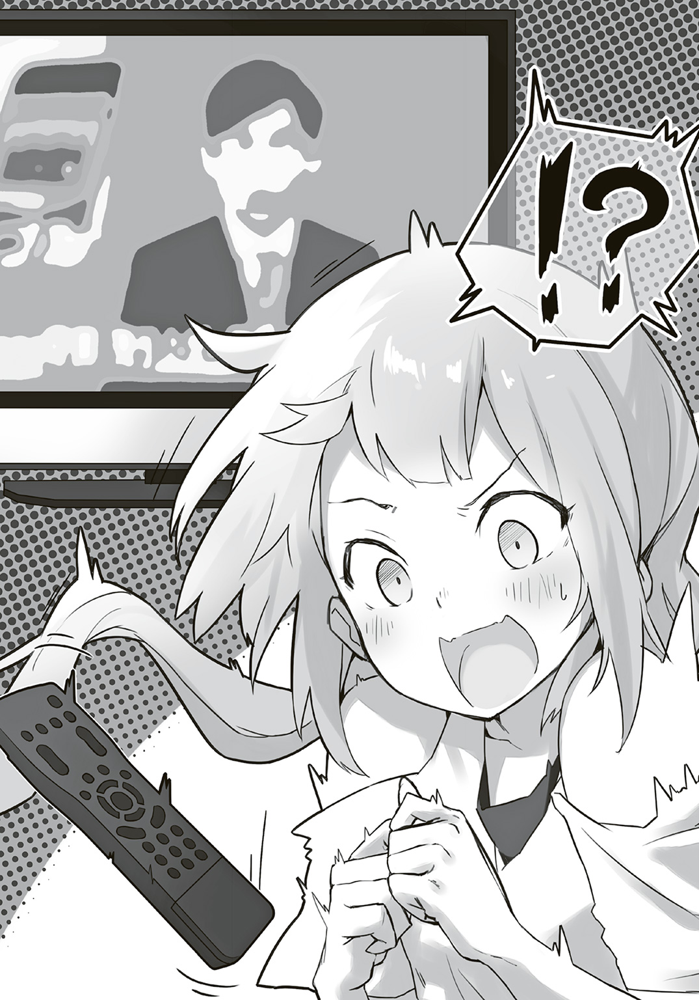

| 異世界娘と田舎生活 おい魔神、そっちは田んぼだ。 | |
| 葉巡明治 | |
この本は縦書きでレイアウトされています。
また、ご覧になる機種により、表示の差が認められることがあります。
 ダッシュエックス文庫DIGITAL
ダッシュエックス文庫DIGITAL
異世界娘と田舎生活
おい魔神、そっちは田んぼだ。
葉巡明治
プロローグ
魔神がバイトの面接を受けている。
場所は商店街。
いぶさき商店のスタッフルームにて。
「――では、ナナラギ・ビネコさん。これから面接を始めますね」
「あぁ？ いいともさ？」
「うちも若い人が手伝ってくれる、っていうケースはあまりないから、助かります」
答えたのは、水色の長髪をたらした女の子。ちょこんとパイプ椅子にかけている。
彼女が魔神。
それほど深く座っているわけでもないが、脚の長さは床まで足りていない。
「ふふん、神たるビネコが、キミの真価を見定めてやろうじゃないか」
「ビネコさんが面接されるんですよ？」
「......へ......？」
「......聞いていますか？」
「何言ってるか全然わかんない」
一方の面接官は、マジメで有名な店主だ。
「ま、まず......趣味は《相手をさげすむこと、踏むこと、嫌がらせ》。特技は《世界征服》......とありますが。これは一体......。とりわけ、特技についてお聞かせください」
照明の光を受けて、店主のメガネは乳白色に輝いている。
「ふふん？ どーだい、今でこそゆったりとした余生を選んだビネコだけれどね？ 本気の力をもってすれば、すぐにでもこんな星は征服できるのさ」
「できると言われても。わたしにはよくわかんないんですが......こう、支配するんですか？」
「まあ」
店主は苦笑い混じりだ。多分、話を信じていない。
特記欄に、『やたら偉そう』と書き込んだ。
「そして職業欄に《魔神》と書いてあるのですが......これは？」
「魔界の支配者に決まっているじゃないか。勇者などが出てきたら倒す」
「勇者などって何ですか」
「すごくがんばったんだ」
「がんばったと言われても......」
辺りにいやな沈黙が流れる。
「残念ながらウチの店は、勇者を倒すとか、世界を支配するとかそういう人は、ちょっと......」
「......どういうことだい？」
何か様子がおかしいぞと、彼女も気がついたらしい。
「ビネコがいると、外敵がきても滅びずにすむんだよ？」
「滅ぶ予定はありませんしね......」
「む、な、なんだいその態度。び、ビネコだよ？ 知らない？ 今まではそういうひどいこと言われたことないよ！ 大事にしてほしい！ 天罰くらうけどいいのかい？ ん!?」
「............ど、どうぞお好きに」
お互いに狼狽し合っている。
「......」
ビネコは悔しそうに爪を嚙んでいた。
うぅ、と泣き出してしまいそうだ。
「......魔神だよ、偉いんだよ」
「......まったく。どうして、職歴に魔神だなんて書いたんですか？」
「――それは、決まってるよ............」
「......何です？」
「――面接に有利だと思うじゃないか」
面接に......有利......？
思わぬ発言に、店主は目をかっと見開く。
「ひ......ひとまず常識テストとして、挨拶をしてみせてください。わたしがお店のお客さんだと仮定して、あなたはなんと言って出迎えますか？」
「え、え!? そ、そんなこと、いきなり言われても困るじゃないか。なんなんだいそれ、ビネコは魔神だよ？ ビネコは城で勇者や騎士を待ち受けたくらいしか経験があるわけ――」
ビネコはわたわたと手を振ってからしばらく考え込むけど、店主は容赦がない。
「アナタの常識でかまいません。はい入店しました」
「えぇ!? え......わ......」
ビネコはあたふたと取り乱したけれど、やがて何か思いついたような顔をして、けふんけふんと咳払い。そして。
「よくぞ来たな勇者よ」
「敬語でお願いします」
「しょ、職業病だよ！ ビネコ魔神だし！ 魔神的に意識が高いよね!? 意識高い系でいったら面接はラクショーでこなせるって、ビネコはセータローから聞いたんだけれど！」
「魔神が意識高くても不利にしかならないと思います」
店主はいい加減いらいらしてきたらしい。
特記欄に、『頭が悪い』と赤色で書き込んだ。
「いい加減にしましょうか。この志望動機だって......ニチジョーを手に入れたい？ なんのことやら」
「あ、あぁ、そこかい？」
涙目が急に晴れる。
なにやら自信があるようで、ビネコは天を指さす。
「ニチジョーが欲しいんだ」
「......は、はあ......？」
何で上を指さしたんですか？ とは聞けない空気だった。
「辺りをみまわしてくれよ。この世界は、おだやかで平和で楽しいものがいっぱいなんだ！ ビネコはこの世界のニチジョーが欲しい！」
「は、はぁぁ......？」
店主はゆっくりと言葉をかみくだいている様子だ。
「ニチジョーって、日常ですか......？ まあそりゃ、あると思いますけど......」
「すごくないかい！」
店主に息がかかりそうなくらいビネコは、前のめりになっている。
「ふふん、庶民のキミに教えてあげるよ。この辺りでは、玄関にいつの間にか野菜がたくさん入ったふくろが置いてあったり、とつぜんオコメがもらえたり、夕食のオスソワケしてもらえるんだ！ 何故か!!」
「ああ、ご近所付き合いが濃密ですからね」
「ヨメはおかしを配るし、シンキョはモチを投げるそうだよ。素晴らしいね。魔界でもらえるものなんて冥土の土産くらいだよ」
「物騒ですね」
「しかもだよ！ なんと、この世界では毎日ゴロゴロして、テレビとやらを見たり、マンガを読んだりできるらしいんだ？ ハッ、これにはビネコも驚きを隠せないね!? 庶民のキミには難しすぎたかな!?」
「普通にわかりますよ、バカにしてるんですか」
「――しかも」
興奮したビネコは、食い気味に、仰々しく発言してみせた。
「――この世界では、なんと働かなくてもいいんだよ!?」
「これバイトの面接ですよね......？」
店主の苦労もつゆしらず、ビネコは顔を上げて、天をあおいでいる。
「素敵だろ？ ふふぅん、だからビネコはこの世界へのバカンスを決めたんだ」
一人で想像の世界に入ってしまったらしい。
「セータローの奴が言っていたよ。セータローはこの世界には詳しいからね。なんでも、商店街でバイトとやらをすると、きっともっと人生が楽しくなるらしいんだよ。つまりね、もっと！ サボれる！ るんるんだよ！」
ビネコは語り終えると、ふぅぅと深く息をはいて、椅子に深くかけなおす。
「ビネコさん......ところで」
間。
「ビネコさん、名前からしてもしかすると外国の方かもと思うのですが、もしかして、バイトの意味は知らないというわけでは......ないでしょうね？」
神妙そうな顔をして、店主が聞く。
「――え？」
ビネコは硬直した。
「し......しら......しらな......」
そこまで言いかけて、突然、
「――ぜんぜん知ってるけど？」
「今ちょっと知らないって言いかけましたよね」
「......しかしだよ、ビネコ魔神だし、フツー知らなくてもしょうがないことだし、一応聞いておくんだけれどね？ それは、知らないと恥ずかしい一般常識なのかい？」
「はい」
「ホントに？」
「まあ......」
「魔神でも？」
「本当に知ってるんですか――」
「――はっ？ いやいや当たり前だよ。ビネコ魔神だもん」
魔神っていえば何でも許される風潮がコイツの中にはあるらしい。
「......わかりました」
何か観念したみたいに、店主がため息をつく。
「それでは、ビネコさん。明日からうちに働きに来てもらってもよいでしょうか？」
「ふふんっ？」
鼻で笑っていた。
「いったい誰が働くんだい？」
「ビネコさんですが」
ビネコは、笑顔のままキョトンと首をかしげた。
「――うん？」
＊
「――申し訳ないですが、お宅のビネコさんは、ウチの手には余ります......」
「そ、そうですか。ありがとうございました」
俺は、黒電話の受話器をおいた。
............とまぁ。
ここまでが、俺が店主の新田さんから電話で聞いたエピソードだ。
ナナラギ・ビネコが、俺の家に住み始めてから、二週間。
ビネコ本人に悟られないよう、上手いこと社会常識を身につけさせようと思って、面接に送り出してみたわけだけれど、そう簡単にはいかないらしい。
「はぁ......やっぱダメか......」
そして、縁側の先に広がる庭をながめながら、ためいきを一つ。
新田さんには、あとで菓子折の一つでももっていこう。
「――セータロー？ まったく、なんなんだいあの店主」
タイミングよく、ビネコが帰ってきた。
ぷりぷりと怒っているご様子で、当たり前みたいに空を飛んできた。
山ひとつ越えてきた彼女は、ふわりと庭に着地して、ぐちぐちとつぶやいている。
この家から町の商店街までは、山越えで一時間はかかる。買い物には不便だ。ビネコの機動力だけは羨ましい。
「あろうことか魔神であるビネコに働けだなんていうんだよ？ むぅ。大国の一つでもよこしてから言ってほしいものさ。ぷんぷんだよ、もう、まったくもう」
「......おかえりビネコ。面接はどうだった？」
「やれやれ疲れたよ......」
「お疲れ。まあ、頑張ったな......」
「そう。バイトとかいうものの面接は大変だね。あの男、新田だっけ？ 奴は不合格だね。ぜんぜん常識が足りないね？」
「そうなんだ」
お前この期におよんで自分が面接する側だと思ってたの？ すごくない？
「......さすがっつーかなんつーか」
「え？ さすがかい？ えっへー」
都合のいいところだけ勘違いされた......！
「すごいのは当たり前だよ、ビネコは、魔神だから」
――そう。
ナナラギ・ビネコは異世界からきた魔神。現在俺の家に無理やり居候中。
こいつの登場で、俺の『日常』は、ものの見事にぶっ壊されたんだ。
第一話 出会い
田舎はいい。
電車とバスを乗り継いで、二時間近くかかる高校からの帰り道。
見渡せば、地平線まで水田が広がっている。
周りに気を配ってみると、ひぐらしの鳴き声が辺りをうめつくしている。
淡いオレンジ色の夕空は、遮蔽物の一つもない。
ただよっているのは、堆肥の、お世辞にもいい香りとは言えないにおい。それですらも郷愁で心が洗われるようだ。
生ぬるくて重い空気が、辺りを覆っている。
まるで時間の流れが間延びしているかのような感覚の中、俺は一人、田んぼのあぜ道をのろのろと歩いている。
ここはＦ県Ｅ市Ｓ地区。
たまにコウノトリがやってきて、水田を優雅に歩いていたりする。
Googleで画像検索すると、里の景色よりコウノトリが先に来る奥ゆかしいド田舎だ。
「おー！ セータローしゃん、おかえり～」
「あぁ、ただいま」
――軽トラの中から手を振ってくる橋田のおじさんに、笑顔で手を振りかえした。
地域の住民は、みんな顔なじみだ。
当たり前みたいに、おかえりと声をかけてくれる。
俺はそういう田舎の空気が大好きだ。
高校二年生ともなると、数少ないクラスメイトには都会への憧れを口にする奴がいる。何も娯楽がない、電波もままならない田舎を不満に思う奴もいる。
だが、俺に言わせてみれば、そんなものに憧れるのは馬鹿だ。
ここ一年の中で一番の遠出は、県内に初めてできたスタバに連れてかれたくらいか。
イオンはあれすごいな。建物の中に一つの町が構成されてるな。俺の世界とは違う。
俺の愛すべき日常は、何もないこの田舎にある。
この先もずっとこの田舎で、平和にのんびりと過ごしたい。そう思っている。
「――え？」
――ふと前方に、遠くに見える田んぼのあぜ道に、何か落ちてくるのが見えた。
――水色の、キラキラした線が見えた。
――シルクの布――いや、きっと、長い髪だ。
「ふぁぁっ!?」
水色の長い髪の持ち主は、地面に一直線に落ちてきて、ちいさく弾む。
べちゃりと鳴る。
「うぐ」
かすかに聞こえてきたのは、幼い女の子の声だ。
「あーぁ、いたた......」
......まさか、空から降ってきたってのか。
――の割にはなんか軽くないか。
あぜ道のど真ん中で、女の子は打ちつけたらしい腰をさすっている。
次には、軽トラがジリジリと土を弾きながら、女の子へと迫っている。
止まる様子がない。
スピードを出すことで有名な橋田さんの軽トラだ。
「え？」
このままでは女の子が轢かれてしまうのでは......ないか――？
ちょ、ちょっとまて、橋田さんは女の子がそこにいるのに気づいていないのか!?
「おい橋田さん！」
「～♪」
「あぁ、これ気づいてないっぽい！」
俺はそう気づいた瞬間、肩にかけていたカバンを投げ出して走る。
一足でグン、と跳んだ。冷や汗を散らした。
短い時間だ、何かを考えている暇はない。このままじゃ女の子が軽トラに踏みつぶされる。
前のめりに飛び込んだ。女の子が振り返ってきたが構わず肩を摑んで投げ飛ばした。
「えっ......？」
女の子が放つ戸惑いの声が、周囲の物音から浮き立ってハッキリと聞こえてきた。
彼女の細い髪が、ほおをくすぐった。彼女と目が合う。
翠の瞳。
日本人......じゃない。
向こうも、多分こっちも、呆然と驚きの中間のような表情をしている。
彼女と入れ替わりに、俺が軽トラの進路に出る。これでもう、俺は間に合わねえ――
くそ、くそぉ！
「たすけ――ッ!!」
どぉん。
鈍く、低い響き。爆弾が遠くで爆発したらきっとこんな音なんだろう。
「やれやれ、乗り物？ いやオモチャかい？」
――て、
「刺客か事故かは知らないけれど、こんなの一つでビネコが死ぬわけがないじゃないか」
ない。
そこまで、痛く、ない。
「ねえそこのキミ、一つ聞かせておくれよ。『何もない』はここにあるのかい？」
「え......」
「やっと見つけたよ。この魔神に手間かけさせるね」
そこにあったのは、フロントがべこべこにへこんだ軽トラ。
そして、軽トラに向けて手をかざしている少女だった。
第二話 ビネコ
額に、何か触れた。
「――目が覚めたか？ まったく、ビネコ様をかばおうとするなんてどうかしている」
冷たいけれど、妙に柔らかくて、気持ちいい。これは人肌だろうか。
今まで触れたこともないような、妙にしっとりとしていて、きめ細やかな肌だ。
誰かが......俺を看病してくれている......？
「......ん、んん。俺は......」
「無理をするな。どうやら轢かれずには済んだようだが、ビネコ様の力で身体をひどく打ちつけていたらしい。今のビネコ様でも容易に人間を殺せる力程度は持ち合わせている」
ゆっくりと、目を開く。
ぼやけた視界が、次第に鮮明になっていった。
天井に張り巡らされた梁が目に入る。
ここはどうやら、俺が一人で住んでいる屋敷のようだ。
そして、俺を看病してくれていたのは......。
「――心配したんだぞ？」
まず目に入ったのは、白い肌だ。
そして優しげな口元。
灰色にくたびれた顔。
はげた頭。
飛び出した目。
......の男たちがたくさんいる。
「何お前ら......？」
「ゾンビだが」
「へえ」
――がばぁっ!!
フトンを全力でかぶった。真っ暗闇にこもった。
か、考えろ、い、今、なにが起こった!? なにがいた!?
ゾンビ......？ ウソだろ？ でも、名乗ってたよな。
しかもそこそこ優しかった......！ えぇぇ......！
「......落ち着け。一つ一つゆっくり考えれば、パニックになる必要はないはずだゾン」
フトンの外から声をかけられた。
そ、そうだよな、当たり前だよ、本当にゾンビなわけないよな。きっと意識が混乱してたのか、聞き間違えただけだろう。語尾にゾンってついてるけど多分これも気のせいだ。
「冷静になって、順序よく思い出してみるんだ」
「......あ、あぁ、さっき俺は、軽トラに轢かれそうだった女の子を助けたんだ」
「その通りだ」
「軽トラに乗ってた橋田さんは......？」
「ビネコ様が使役する仲間の一人によって、記憶を消されている」
「そしてお前らは？」
「ゾンビだゾン」
何だよその愉快な語尾......！
頭を抱えてしまう。しかも何だって？ 記憶を消された？ いや普通消せませんけど？
『こんにちはー！』
――ふと、遠くから聞き慣れたかわいらしい声が聞こえてきた。
『えへへ、セータローくん、おすそわけ持ってきましたよー？ いらっしゃいますかー？』
「小花か......？ 助かった......！」
花中小花。近くに住んでいる俺の幼なじみだ。
田舎では数少ない同年代の女の子だ。
現在わけあって一人暮らしをしている俺の面倒をよく見てくれている。
俺の日常の中心にいる少女と言ってもいい。
んで、助けが来たみたいでほっとしたけれど、いいのか、これ。
「ん......誰か来た、女、ゾンか......？」
こんな状況の家に訪ねてきて、小花がコイツらに何をされるかわからない。ただ、彼らにも良識はありそうだったから、ひとまずは外に聞き耳を立てて様子を――
『侵入者の女を捕まえたぞぉぉお！』
『ひゃっはぁ、女だ！ 女だぁ!! 女だぁああぁあ!!』
ゾンビの声が聞こえてきた。
「小花ぁぁああぁあぁああああ!!」
思わずフトンから飛び出し、玄関に向かった。
辺りは灰色の顔をした男、つまりはゾンビだらけだ。うーうー言っている。
俺の家はどうなっちまってるって言うんだよ......！
「だ、大丈夫か!?」
「あれー？ セータローくん」
玄関に駆けつけると、たたきの上に彼女の姿を見つけた。
「えへへ。大丈夫ですよ！ げんきげんきです！」
小花は、見た人誰もがきゅんとしてしまいそうな天使すぎる笑顔を浮かべながら――
――ゾンビたちに磔にされていた。
「小花ァ!!」
「？ えへへ、さっきから心配そうな顔をして、どうしたんですか？（にこっ）」
「お前がどうしたんだよ!! 磔にされてるんだけど！ なにその可憐な笑顔！」
小花は純粋すぎるんだ。
誰かを傷つけるとか、傷つけられるとか、そういう考えがないらしい。
「（にこにこ）」
小花は、玄関に群がっているゾンビ越しに笑顔を見せてくれた。
ダメだ......。小花の性格は、田舎ののほほんとした善良な空気そのものだ。
能天気すぎて、この非常事態が理解できていないらしい。
「ええっとですね？ すごいですね！ 親戚がもってきてくれたカニのタッパーをおすそわけしようと思って、セータローくんちの玄関をあけたんです、そしたら灰色の顔をした男の人がたくさんお屋敷のなかにいて、びっくりしちゃいました」
「あ、あぁ」
「みんな善い人そうですね！」
「そうかなあ......！」
ていうかコレ人じゃないよ。目とか飛び出てるし......。
「うーん、言われてみると、たしかに心配ですね。なんだか、みんな顔色が悪いですし......お腹が空いてるみたいだったから心配です。この人たちの分も追加で、料理を作りますね。あとお掃除もしなきゃ」
「......ァァア......人が食いたい......」
「ね？ 人はムリだけど、肉じゃがでなんとかなるでしょうか」
「なんとかなったらいいよね！」
たぶん、小花は普通にこのゾンビらしき連中と触れ合おうとしたんだろう。
それでつかまってしまったらしい。
「おい少年。この娘はお前の友達かゾン？」
後ろから声をかけられた。
振り向くと、さきほど、俺を介抱してくれていたらしいゾンビがいた。
やけに堂々としているし、喋り方もちゃんとしている。リーダー格だろうか。
「お、俺の幼なじみだ」
「悪いが、このカオスキャッスルに足を踏み入れたものを生かしておくわけにはいかん」
「いやここ俺んちだけど？」
なにカオスキャッスルって!? ダサくない......!? やめて!?
「オイ、お前らいい加減にしろよ。いいから小花を放せ！」
「彼女については、残念だったと諦めるほかないな。これもビネコ様の平穏のためゾン」
ぽんぽんと、落ち着けと言わんばかりに肩を叩いてくる。
ビネコ様？ 誰だよそれ。頭のてっぺんから火が出そうだった。
「これが落ち着いてられるかよ！」
とっさに身体が動いて、俺は彼を隅においやって壁をたたいた。
「いいか！ 小花に群がってるあいつらを止めろ!! 今すぐにだ!!」
その瞬間。
「すご――――――――――――――――――――――――――――い」
「すご――けふんけふん。なかなかじゃないか？ 外の様子にいろいろ目を通してきたよ、この世界はビネコが住まうにふさわしい。本当に何にもない」
まさしく鶴の一声、とでもいうように。
「ビネコ様だ」「ビネコ様」「ビネコ様......！ 来ちゃったよ......！」
ビネコ様......？
ゾンビたちの声が、ざわざわと興奮し、色めき立ったものに変わる。
外から聞こえてきたのは、先ほど俺がトラックから助けた女の子の声......。
間もなく玄関の戸が開いて、セミの鳴き声と一緒に、水色の長髪をした女の子が飛びこんできた。
「誰か椅子になってくれるかい？」
水色髪の女の子が命令すると、ゾンビたちが一斉に動き出して、組み体操のように椅子の形になってみせる。そして女の子は着席した。
――この女の子、飛んできた。
まさしく、宙に浮いてふわふわと。
「どうしたのかな？」
彼女はぱちくり、まあるい目を閉じたり開いたりしながら、玄関の騒ぎを見渡す。
「あぁ！ 目が覚めたんだね。さぁ、話をしようか......涼城セータロー？」
笑顔のまま、彼女は首をかしげていた。
「ビネコに、ニチジョーをくれるかい？」
手を差し出された。
俺の平穏な日常が、ガラガラと音を立てて崩れていく音が、聞こえた。
第三話 田舎に泊まろう
現在、俺は一人暮らしだ。
二つほど離れた集落に母方の祖父がおり、その祖父がつい最近倒れたらしい。
大事には至らなかったが、祖父の命とも言える畑仕事に支障が出てきた。俺の両親はしばらく住み込みで畑を手伝うということになった。
というワケで始まった、誰にも邪魔されることのない、悠々自適な田舎スローライフ！
自炊も家事も苦にならない。何故なら他に特にやることもないからだ。
俺の心は躍っていた。
......はずだったのだが。
その矢先にこうなったんじゃどうしようもない。
「......魔神、なぁ......？」
屋敷の縁側に立って、しみじみとつぶやいた。
ため息をつきながら庭をながめていると、ゾンビたちが得体の知れない植物を育てているのが目に入った。
「うぇーい!! つっかれたわ」
「あー人肉くいてー」
「そろそろ俺休憩するから交代たのむなー？」
「えー？ やだよコレ葉っぱかみついてくるんだもん」
「俺もさっき右腕もっていかれたゾン」
本当に何育ててるんだろう......。
「......俺んちのはず......なんだが」
どうしてこんなことになったんだろう......。
力が抜けてしまいそうだ。
「――まあ......お前たちの話が噓じゃないっていうのは何となくわかった。納得はできないけど理解はした」
俺がつぶやくと、ナナラギ・ビネコと名乗る少女が、悪意のない笑みを浮かべてくれた。
「それはなによりだよ。セータローはなかなか頭がいいね。褒めてあげるね？」
――相変わらず、宙に浮かんでいる。
見た目こそしっかり人間の美少女なのだけれど、透き通るような水色に近い髪は、どう見てもカツラや染髪みたいなありふれたものとは違う。
それこそ、この世の色じゃないと確信できてしまうような鮮やかさ。
そもそも宙に浮かんでいるんだ。その時点で、マトモな人間じゃない。
信じたくなくても、目に見えるものを受け入れるしかない。
「話を整理するぞ。まず、お前はこの世界の人間じゃない。そうだな」
「そうだよ」
「異世界の魔神。ナナラギ・ビネコ......だったっけか？」
「そうだよ！ 偉いんだよ！ ほら、崇めてくれたまえ」
まさか現実で、魔神などという単語を使うことになるとは思わなかった。
こんな小さくて可愛らしい魔神がいるもんか。
俺の知ってる魔神は、ゲームや漫画なんかでも、例外なく巨体で、まがまがしくて、肌の色がおかしくて、語尾にフハハハとかつけるのに。
「いろいろな世界を旅していて、この世界には探しているものがあってたどりついた」
「崇めよって言ってるじゃないか」
ビネコが空中で、地団駄を踏み出した。頰が真っ赤になっている。
......崇めるってなんだ？ 魔神って、いちおう神様だよな？
近所のばあさんが、道端にあるお地蔵さんに、よくお菓子をお供えしているのを思い出した。
俺はポケットをまさぐってみて、飴玉を見つけたのでそれをビネコに差し出してみる。
「ほらよ」
「これはなんだい」
「......お供え」
「そう。それでいいんだよ」
いいのか。
大きな瞳がキラキラ輝いた。飴玉もらって喜ぶ子どもみたいだな。
「敵に襲われてたんだって......？」
「そうだね」
「で、空を飛んで逃げてた時に調子が悪くなって、この辺りに落ちて俺に遭遇したと」
「そうだよ。この辺りを散策してみて、感動した。本当に何もないんだ。ビネコが探し求めていたニチジョーがここにはある......気がする！」
「日常......」
さっき崩壊したやつね......。
「セータローくん、どうしましょう」
磔から解放された小花が、心配そうな瞳を俺に向けてきた。
座敷に正座している。ビネコの話を聞いて、彼女も理解はできている様子だ。
「......いや、ダメだろ、わざわざ泊める理由なんかないし」
ビネコは、指を立てて、ぱっと笑ってみせる。
「ダメだよ。終わらせない。交渉しようよ」
「......交渉？」
「なんと期間限定で魔神にゾンビと得体の知れない植物がついてくる！ わあ、お得！」
一切いらねえ！
「お、お得っていっても何も変わってませんよ」
小花が真剣に言ってくれる。
やっぱり小花は俺の味方だ。
「むー。負けたよ。今なら特別に、ゾンビを十体ほど追加するよ」
「......え？ え？ ど、ど、どうしますかセータローくん」
小花は、くわっと俺のほうを見る。
「お得ですよ!?」
なんでのせられてるの!? 要らない要素増えてるだけだよ!?
「......」
とりあえずは、相手のことをもっと知らないことには、なんとも話が進まない。
「大体、異世界だか何だかから来たっていうなら、どうして俺たちの言葉を話せる」
質問をした瞬間、部屋の端っこから、鼻で笑う声が聞こえてきた。
「バカめ」
先ほどの、リーダー格のゾンビだ。ある意味、この場で一番話が通じそうな奴。
「貴様、セータローとかいったな。言語のトランスレーション魔法も知らんのか？ ん？」
逆に聞きたいけど何で知ってると思ったの。もっと優しくしてくれ。
「フン。そもそも話を聞いていれば、ビネコ様を泊めないだとかなんだとか。身分をわきまえたほうがいいゾン。ビネコ様にかかれば貴様たちは一瞬で消し炭となるのだぞ」
得意げに言ってみせてから、ゾンビは、小花をちらりと見やる。
「......貴様は一瞬で消し炭となるのだぞ！」
なんで言い直した。お前がわきまえろよ。
「さあ。ビネコ様！ このような連中を助けたのが間違いだったのです。ビネコ様は魔神！ 強い！ 偉い！ 異世界民などに許可を願うことはありません。ここは堂々と――」
ビネコはぷかぷか浮いたまま、つまらなそうに笑ってゾンビを見やる。
「んん？」
次の瞬間のことだ。
「ぐぅぁっ!? 痛い！」
――何かがコマ送りにされたとしか思えなかった。
俺が気づいた瞬間には、ゾンビは何か強い力に突き飛ばされたかのように、大きく後方へと吹き飛ばされ、座敷のふすまをへし折っていた。
「び、ビネコ様！ 出過ぎたマネをした咎めは受けますが、こうでも言わなければ」
「嫌がらせは好きだけど、脅迫はよくないね。キミはしばらくお庭で得体の知れない植物を育てるお手伝いをしてきなよ」
「......ですが......」
ゾンビはしばらく黙りこくったかと思うと、
「承知しましたゾン」
肩を落として、とぼとぼ庭へと歩いていく。
「......」
今の一部始終、何か、よくわからないチカラを使われたのは確かだ。
「？ !? ？」
小花もさすがに驚いたのか、俺とゾンビのほうを交互に見て、口元を手で覆っている。
「......あ、あの植物。右腕もってくらしいけど大丈夫なのか」
てかさっき得体の知れない植物って言ってたけど、なに、キミたちにとっても得体の知れない植物だったの？ 俺んちに植えるのやめて？
「ゾンビだから大丈夫さ」
『ギャアアア』
ぎゃぁぁって聞こえてくるんだけど。
脅迫はよくないって言ってたけど、脅威の力を見せつけられて、こっちが怯えないわけがない。
相手が一般人だったり、一人ならまだいいさ。
でも何しろ魔神と自称する相手だ。
自称してるだけならともかく、明らかに本物っぽいのだから問題だろう。ダーティな響きだ。ヘタしたらなにかマズい事件の片棒を担がされてしまいそうな気がする。ていうかよく考えたら自称してるだけでもヤバいよ。感覚マヒしてたよ。
「誠意を見せればいいのかい」
そう言うと、ビネコは、ゆっくりと床へと降下していった。
長い水色の髪から順に、やわらかく畳の上へと降りていく。
「この世界で誠意を見せるには、どうやればいいんだい？」
「え、えー？ 正座......かなー？」
小花が優しく言ってみせたけれど、首をかしげられた。
「せーざ」
「えっとね、膝をたたんでー、わたしみたいに座るの。ほら、やってみてね」
「へー。あ、痛い。こんなん無理」
誠意とは一体。
「ほら見せたよ？ 誠意。ビネコはね、わざわざセータローだけを探しに来たんだ」
「......俺だけ？」
「ビネコはね、キミほど何の個性もない人は知らないんだ」
「え？ なに？ 俺のこと傷つけたいの？」
何なんだ？ からかわれているのか......？
けど、このビネコという少女のまなざしを見る限り、噓をついているようには見えない。
俺を見つめる彼女の瞳は、ますますキラキラと輝きを増している。
「異世界間の交流がある世界では有名なのさ」
「......俺が？」
「そう、この世界にあるニチジョーという概念に、一番近しい存在だってね」
たどたどしい言葉で、大事なことを告げられた気がした。
「ビネコは、この世界にある、素敵なものと、良いバカンス先を探しに来たんだ。ここなら、ソレがあるって聞いたんだ」
翠色のまあるい瞳。
魔神だとかいう、まがまがしい響きは全く似合わない。
でも、何重にも虹彩があるような美しさは、どこか真意が読めなくて、不気味ですらある。
「探しているもの？ 何だ？」
「――ニチジョー」
まるでのしかかってくるかのような勢いで迫ってくる。
「そういえばさっきも言ってたよな」
「知ってるのかい」
顔が近い。
息がかかる。
淡々と抑揚のない喋り方とは裏腹に語気は強くて、意欲は本物のようだ。
日常という単語を語るとき、翠色の虹彩が、シャッターを切ったカメラのレンズみたいにうごめいて、いっそう深くきらめきを増した気がした。
「し、知ってるも何も。ここにあった」
俺たちが普段過ごす平穏な日々そのものが、日常というんじゃないのか。
身を引きながら、なんとか答えた。
風が吹く。
どこかで、片付け忘れられていたらしい風鈴が、ちりんと鳴っている。
「ビネコはソレが欲しいんだよ！」
心底嬉しそうに言ってきたので、なんだか、いたたまれなくなってきた。
ビネコが異世界の魔神なら、おそらくビネコが求めている日常というものは、絶対に手に入らない。
......俺は田舎ののんびりとした空気が好きだ。
夜はカエルの大合唱、昼はセミの大合唱。
人間よりも虫や動物との遭遇がやたら多いここが。
田舎はよそ者には冷たいとよく言うが、田舎の雰囲気を好きそうなやつに冷たくはなれない。
「......まあ一晩、くらいなら」
「本当かい！」
「ただ、あまり目立つマネはしてくれるなよ？ この辺りは噂が広まるのがとんでもなく早いんだ」
「ありがとうセータロー！」
ビネコが飛び跳ねて喜び、ゾンビをわらわらと召喚してきた。
「ゾンビは出さなくていいから！」
第四話 散歩（遠出）
縁側から、風が吹きぬけている。
田舎というのは、夏でも案外涼しい。アスファルト舗装がほとんどなくて、緑と土だけが太陽に照らされているので、気温がさほど上がらない。
朝方は霧がすごい発生して、ファンタジーな光景も拝める。
そりゃあ日中の野外は暑いけど、屋内は風の通りもよくて、扇風機だけで十分やっていける。
セミの声。風鈴が鳴る音。畳の部屋。草木の香り。
俺は一人、和風の情緒に浸りながら――
「あひゃははははははははははっ!!」
「うるせえ！」
べりべり。
ばりばりむしゃむしゃ。
くしゃくしゃ。
ポテチの袋が投げすてられた。
「さいこうだね！ ビネコ、これほど面白い本を読んだことないよ！」
じったんばったん。
ごーろごろ。
「これがマンガ......！ ふぁぁ......！ ステキ、ちょーステキだよ！」
ビネコはいま、座敷に寝っころがっていた。
俺の自室にあったマンガを勝手に持ち出して、手当たり次第に読みまくっている。
「世界を征服できる魔神の姿かよ......」
「セータロー、セータロー！ ビネコ、マンガというものを初めて読んだよ！ これはチーキュの実話なのかい!? ビネコ、チョー気になるー！」
ふわりと浮き上がってから、目をキラキラさせて、俺に飛びついてくる。
持っていた本は、ドランゴボール。
「すごーいー！ チーキュすごいねぇ！ 特にダーブラ好き！」
「何で!? ああ！ 魔界の王つながり!? すげえ微妙なとこ！」
俺というやつは......結局、一日、魔神とやらを自分ちに泊めてしまったわけだ。
小花は昨晩の間に帰っている。やたらゾンビたちの心配をしていた。腹を空かせているやつを放っておけないタイプなのだ。
そして今日は土曜日、学校は休みだ。
俺は、朝からたった一人でコイツらと相対さねばならない。
昨日の光景は、決して幻なんかじゃなかったらしい。
ゾンビは、なんか奥の部屋で座談会を行っている。
......俺はこれからどうなるっていうんだ？
「魔神魔神っていうけど、せめて事情を話せよ。なんだって田舎で日常を過ごしたい」
「ビネコはただこうしたかっただけだよ。それだけ」
「......」
何言ってんだか。
「セータロー、ビネコは外に出たい！ 連れていってくれるかな」
「外なぁ......」
大半のヤツにとって、『田舎の日常』と『魔神の生活』を比べれば、後者のほうが刺激的で魅力があるに決まっている。
なんで日常を求める？
目立つのは避けたいが、一緒に田舎を歩いてみれば何かわかるかもしれない。
「まあ、わかった。外に出よう」
だから俺は、ぽん、と膝を打った。
＊
「ふわぁぁぁ！ めっちゃ緑だねセータロー！ ここまで緑だとは思わなかった！ ここの人どうやって暮らしてるんだい？ 野宿？」
「ふあぁああ！ 山からの眺めが最高だね！ 下は平地になっているね！ 瘴気とか満たしやすそう！」
「ふにゃああ！ めっちゃお年寄りだらけだね！ 子供が少ない！ 数十年後には滅びてそう！」
大興奮だ。
田舎大好きな俺でも意味わからんところで、ビネコは昂まっている。
ビネコは、その人間らしからぬ水色の髪を隠すために、髪をひっつめて麦わら帽子をかぶっている。
こうしてしまうと、身長や走り回る仕草からして、近所の子供のようにしか見えない。
実際のところは、彼女の気まぐれで俺は煮るなり焼くなりされてもおかしくないのかもしれない、けど――
――不思議と、怖くはなかった。
二人で坂道を歩いていると、酪農家のおじさんが、牛をひいていた。
頭を下げて、俺たちとすれ違っていく。
どうやら、今のビネコは端から見ておかしな存在ではないらしい。
「ビネコ、あの巨大な生物がなんなのか気になるな」
牛の後ろ姿を指さしている。
「牛。家畜だよ。種牛はああやって散歩させることがあるんだ」
「へー、家畜？ 知ってるけど、ビネコが昔住んでた魔界ではそんな生き物を飼う秩序存在しなかったな。じゃああの牛は一生、虜として生きるんだね」
ビネコは、結局見えなくなるまで、視線で牛を追いかけていた。
「楽しいのかな」
彼女は、まあるい目で、ほんとうに何気なく、そう言った。
「お前、本当に、別の世界から来たんだな......」
ふと思い出す。
「お前はどうして、力を失ったんだ？ そう言ってたよな？」
「人生いろいろあるといえば、大体のことは納得してもらえるとビネコは信じているよ。ビネコ、そういう相手を信頼できる感じはキライじゃないんだ」
「じゃあお前は俺を信じてるのか？」
「へ？ それは無理だよ」
まぁ、知られたくないことがあるなら、別にいい。
何か、企みがあって隠しているわけでもなさそうだ。
「いろんな世界を征服してさ、長い抗争で、部下もたくさん失った」
「......昔はもっと多かったっていうのか？」
「ビネコの部下は全盛期の百分の一も残ってない」
遠くの景色を見つめながら聞いた。なんだか、途方もない数字だ。
うまくかみ砕けないから、とにかく理解につとめるしかなかった。
ビネコは木の棒を拾い上げて、近くに生えている草を適当に撫でながら歩いた。
「――支配、戦争、恐怖、調律、政治、暴力」
皮肉げに単語を並べ立てていく。
「楽しいねえ」
ぽつり。
「これは自慢だけど、ビネコには敵ばっかり。おかげで誰も信じたくはないわけさ」
「......」
「まずは一日。これだけ平和でいられたのは久しぶりだね！ この魔神ですら、セータローの平凡さにアテられてるってことさ」
「お、おう......」
空寂しく、ふっと笑ってみせる。
「まぁ、ここにいる間くらいはゆっくり休めばいいんじゃないか......？」
「うんっ♪」
「......」
......俺は、どうすればいい。
ビネコと関わるのは、一晩だけのつもりだった。
「......わかったよ。好きなだけいればいい」
そう言うしかないじゃないか。
もし、平穏な日常に戻りたいなら、出て行けと言えば、出て行くかもしれない。
でも、誰も信じられないと笑顔で言う少女を、放ってはおけない。
あぁ......俺のスローライフはどこへいくのやら......。
「最後に一つ。さっきも聞いたけど、どうして、お前はそんなに日常を求めるんだよ」
「――ニチジョーを求める理由かい」
坂道をぶらぶら歩きながら語らう。
どこへともなく歩いて行く。
太陽の位置は真上にあるが、用水路のせせらぎから、ぱしゃぱしゃと水しぶきが空気に混ざってきて、辺りはひんやりとしている。
「この世界にしかニチジョーはないんだ」
「いや、あるだろうそれくらい。いつもと同じ日を暮らしてればそれが日常のはずだ」
「でもニチジョーはこの世界の固有名詞だよ。ビネコは、これまでたくさんの異世界をわたってきたけれど、それに類する言葉は一つも見かけなかった」
話から察するに、異世界ってやつはたくさんあるらしい。
しかもビネコはそれらを渡り歩いてきている。
「それでもだ、『平和』くらいどこの世界にでもあるだろ？ ないはずがない」
「そりゃあ平和はどこにもであるさ」
ビネコは唇をとがらせて語る。
「でも、数年もすればどこだって諍いが起こる」
用水路に、材木で作られたチャチな橋がかかってる。
ビネコは所在なく、橋の上にぴょこんと乗ったり、道路に戻ったりを繰り返した。
「誰も、心が安まってないと思うよ」
ビネコは、両手をめいっぱい広げると、俺に向かって、歯を見せて笑った。
「――でもチーキュは、少なくともここは、誰も怯えていない！ 何もない！」
パッツンの前髪が動きに合わせてゆさりと揺れる。
ああ、何となくわかった。
大なり小なりあれど、コイツが日常を求める理由は、俺と同じようなものなのだ。
地球にだってそこかしこで戦争は起こってる。でも俺の住む地域は、そういう忙しなさや世知辛さから取り残されたみたいに、どこまでも穏やかだ。
穏やかで優しい世界が、好きなんだ。
「ビネコはね、手始めにセータローの家をカオスキャッスルにするんだ」
「そのネーミングやめて！」
「田舎でのセカンドライフを過ごすにあたって、その内、ニチジョーを求める異世界の仲間を募ろうと思う。異世界異文化交流だよ」
地獄絵図でしかない。
「ねえセータロー！ チーキュはみんなこれほどいい場所なのかい？ ビネコ気ーにーなーるー！」
「どうだろうな。都会なんかは人によっては住みやすいと思うけど」
――一つ、ひらめいた。
ビネコの面倒を見るのは、何も俺じゃなくてもいいはずだ。
ビネコが地球上の他の場所で気に入った何かを見つけてくれれば、勝手にそこに住み着いてくれるに違いない。
「――行ってみるか？」
ビネコが都会に目をつけてくれればいい、という、企みに似た気持ちがまったくなかったか、といえば噓になる。
「超たのしそう！ それは一体どこだい!?」
「東京だよ。こっからちょうど東にまっすぐ何百キロか行った辺りに――」
「なるほどね！ ビネコ行ってくる！」
「おう。って、――うお!?」
突然、周囲に土煙が上がった！
激しくむせこんでしまう。何も見えない。
ビネコはどこへ!?
「......ビネコ？」
空を見上げると、彼女の姿はすでに遠い。
何かが光の尾をひいて飛んでいるくらいにしか見えなかった。
＊
夜になった。
屋敷は未だに、ゾンビの声がなりやまない。
もしビネコが帰ってこなかったら、俺もしかしてこのままゾンビたちと暮らすの......？
そんな不安に襲われていたら、玄関の戸が開く音がした。
「セータロー！ ビネコが帰ってきたよ！」
「お、おう」
俺は玄関に走っていく。
「......東京は、どうだった？」
俺も、東京に行ったことは修学旅行の一度しかない。
ビネコの身にまとう服が、ぼろぼろになっていた。
あまりいいことがあったようには――
「セータロー......」
なにか様子がおかしい。
「ビネコに噓をつくなんて、あぁ、いい度胸だね......？」
「え？」
「都会は、こわかった」
しゃくりあげながら、俺に全体重をかけて、飛びついてくる。
「うわぁぁああん！」
「お、おい」
――予想はしていたけど、それでも驚いた。
ゾンビを使役し、空を飛ぶ力を持っているコイツが、女の子のように泣く。
小市民である俺の胸の中で、小さくなって泣いている。
「な、なにがあったんだよ」
「イヤ！ ビネコあんなとこ二度と行かない！ チョベリバちょーつらたん！」
「ちょっと都会言葉に影響されてんじゃねえか......！」
「なんなんだい、あの情報の多さ!? ビネコ、癒やされない、全然癒やされないよ！」
ビネコは、エサを待つペンギンみたいに、ぴょんぴょん跳ねている。
「この世界は、田舎のように何もなくて、セータローのように無害で利用しやすくて『やれやれ』が口癖っぽそうな人が多いと、ビネコ思ってたのにぃ～！」
「お前俺に嫌われたいの!?」
でも正直、都会が苦手なのは俺も同じだ。
感性だけでいえば、俺とビネコは似ているのかもしれない。
「......わ、悪かったよ。正直、お前をどっかにやれたらいいなって思ったんだ。ごめん」
「......ひっく」
ビネコはぐしりぐしりと、俺の服に顔を押しつけてくる。
「都会は、忙しすぎるよ！ 恐怖だよ！」
ビネコは、身ぶり手ぶりで都会の説明をはじめる。
「空間魔法で時空が圧縮されていたよ。ビネコ、コンビニというお店に入ったはずなのに、中から近所にある別のコンビニが見えた!!」
「出店競争激しいからな！」
「夜の駅では誰にやられたのか、道ばたで女性が倒れていた！ 魔界より物騒！」
「ただの酔っ払いだ！ アレ自分から倒れてるから！」
「重力魔法による処刑現場も見た。箱形の乗り物へと、明らかに許容量を超えた数の人間がフラフラ操られたように入っていき、ぎゅーぎゅーに凝縮されていたんだ。グロい！」
「それ満員電車な！ 処刑じゃない......から！ たぶん！」
「複雑怪奇、一度入ったら二度と出られない『シンジュクエキ』とかいうダンジョンがあって、この魔神ビネコをもってしても死を覚悟したよ！」
「あ、あれは、ただの......！ いやまあ......！ ――そうだなっ！」
それに関しては俺も昔、修学旅行で同じ目にあった。
「ビネコ、都会はきびしい管理社会だと感じたよ。びっくりするほどディストピア！ 夜道を散策していると、八秒に一回は、警備兵のような人間に職務質問をされたよ！」
「お、お前それ、職業なんて答えたんだ」
「魔神」
「そうだよな！ よく解放されたな！」
「――こっちがいい!!」
唐突に、叫ばれてしまう。
「......あ、あぁ」
勢いでそのまま、うなずいてしまった。
特に深い意思があったわけじゃない。
「こっちがいいよ、セータロー......」
「......ああ、そうだな」
ただおずおずと、なんとなく、水色の髪を撫でてやった。
「その、なんだ......素麵を茹でてやるから、食べるか？」
ビネコのお腹がきゅるると、可愛らしく鳴った。
＊
「ビネコ知ってるよぉ？」
その後、ビネコがしたり顔で話してきた。
ちゅるちゅる、麵をすすっている。
そして、ぬふぅ、と息をはいて笑ってみせた。
「同棲生活っていうのは、一つ屋根の下に住む男女の、心のギブアンドテイクによって成立するものだよね？ ギブアンドテイクが成立すればセータローはビネコとの同棲にはもう大喜びしちゃうってわけだね。つまり下僕も同然」
ビネコは、胸に手を添えて、誇らしげに語っている。
「......ギブアンドテイク？ 何かくれるのか？」
「例えばセータローは、ビネコに住む場所とご飯をくれる。これがギブだよね？」
「ああ」
「――代わりに、ビネコはセータローに養われるね？」
それ俺がギブしかしてなくない？
「今ならビネコからはゾンビをあげるよ」
「すっげえいらねえ！」
こんな毎日が始まるのだろうか。
第五話 レクシィ・レットハート
ビネコが座敷の中央で、宙に浮かんで、満面の笑みを浮かべている。
「――ビネコ、このお屋敷への永住を決めたよ。みんな、この世界を支配してゆっくり暮らしていこうじゃないか！」
「いええええぇぇえい!!」
「魔神ビネコ様の邪悪が今よみがえるぜぇえ！」「ビネコ様ぁのク――ズ！」
「やだなぁ、褒めないでおくれよ！」
ゾンビたちは、大いに沸いていた。
ど田舎の屋敷の一室が、さながらライブ会場だ。
「ビネコ！ この世界を征服して、ここで悠々自適の生活を送ることにしたよ！」
「いえええええええ！ ビネコさまの鬼ィィイ!!」「殺人鬼ィ！」
「てへへ」
ビネコの地声は気の抜けた感じだから、どうも格好がつかないけど、当人は本気らしい。
笑顔の演説はさらに続く。
「ビネコはね、ビネコは！ いずれ、セータローを一番の下僕として認めようと思うんだ」
しーん。
盛り上がっていたゾンビたちが、途端に静かになってしまった。
「は？」
俺もぽかーんだ。
静寂に包まれた場が、不穏にざわめきだす。
「あの何の取り柄もない人間と？」
「ばかな、俺たちとセータローで何が違うゾン？」
「ビネコ様の一番？ え、なんで？ 死んで？」
「そもそもそのキュータローって誰ゾン？」ホントに誰だよ。
「セータローとか、トイレの間に俺らの誰かと入れ替えてもビネコ様気づかないだろ」
いやたぶん気づくよ......？ 自分の上司を侮りすぎだろ......？
え？ 気づかないの？ さすがにビネコといえども、人の区別くらい――
......ホントに気づかない気がしてきた。
「しかし、一個気になるんだけどさ......」
俺は、みんなより高みにいるビネコに向かって挙手をした。
「なんだい？ 質問を許可するよ」
「魔神なりゾンビなりはわかったよ。住むのもわかった。協力もする。だけどよく考えたら俺ってさ、身の安全は保証されてるのか......？」
「え？」
ビネコが急に真顔になった。
気まずい沈黙がおとずれる。
「......」
ビネコは俺を見つめて、しばらく間を置いた。
壁時計が、こちこちと鳴り続けている。
「だいじょうぶ」
不安しかねえ。
その時のことだ。
ぱぁん......ぽーん。
かろうじて寿命が残っていた古めかしい音色のチャイムが、屋敷の中に響く。
客か？
この辺りに住む人間なら勝手に玄関を開けて、入ってくるはずだ。
だから、ビネコとゾンビたちの存在を知っている小花が、遠慮してチャイムを鳴らしたくらいしか思いつかない。
「敵か!? 総員配置につくゾン!!」
ゾンビたちの空気が、一気に張り詰めたものへと変わった。
「......小花だろ？ おすそわけを持ってきてくれたとか、そんなんだろ」
こんなのんびりした田舎に、危険因子なんてそうそうないだろうに。
俺はそわそわびくびくしているゾンビたちを尻目に、玄関に向かった。
特に思うところもなく、がらりと戸を開ける。
「はい、どなたさま」
「......」
「............女騎士？」
思わずつぶやいてしまった。
みーんみんというセミの声が、大きくなる。
「涼城セータローの家は、ここ......？」
凜とした、冷たい声。
引き戸の外に立っていたのは、小花ではなかった。
白い髪をしっとりと肩口まで垂らした――鎧姿の少女である。
純白のいかつい鎧からのぞくその肌も、淡雪のように白い。その姿はあらゆる汚れをはじいてしまいそうなくらい――清廉潔白そのもの。無機質にすら見えた。
顔つきは優しいものの、こちらをキッと睨むまなざしは怜悧でするどく。
幼い見た目のビネコとは違って、正統派の美少女といったところ――
「――アナタのニチジョーについて尋ねたいことがあるわ」
ダメだ、やっぱりビネコと同類だ。
「.........確認したいんだが、その、着てるのって、鎧だよな」
「そうね」
「もしかして、ひょっとするとなんだけど、異世界人か？」
「.........何故、わかったの？ できるだけ目立たない鎧を着たのだけれど」
控えめとかじゃなくて鎧の時点でアウトだよ。
鎧少女は、なんだかすごくマジメな異世界人のようだ。
「警戒することはないわ。涼城セータロー。わたしはアナタを――」
戸が閉まった。
ビネコが横から飛び込んできて、閉めたのだ。
「......」
「開けて」
戸を叩かれる。
「開けて」
戸を叩かれる。
「......開けて」
......なんか可哀相だから開けたほうがいいのかな......。
「ぜ、ぜぜ、絶っっっ対に開けないでくれるかなセータロー」
ビネコが珍しく焦っている。戸につっぱり棒を差し込んできた。
「び、ビネコ、何してる？」
尋ねると、彼女はしぃっと人差し指を立てて、声を限りなく潜める。
「騎士だろ、騎士が来たんだよね!? 奴がいると、ビネコは平和なニチジョーを送れない。びっくりしないでくれるかい。――奴はいつもビネコの世界征服を邪魔してきた」
「それってめちゃくちゃ良いヤツじゃないの？」
「............お願い、無視をしないで」
ぱんぽん。ぱんぽん。
チャイムの音は鳴りやまない。
「.........開けてやるくらいなら、いいんじゃないか？」
「平和ボケだね......！ ダメだって言っているじゃないか！ あの騎士を中に入れたらビネコが襲われちゃう。この世界に魔物を解き放てないよ!? この世界が闇に包まれないよ!?」
「お前それ一切説得になってないこと気づいてる!?」
チャイムの音が、ふと止まった。
「............その声は」
探るような声。
そして、がしゃりと金属が擦れる音。
「――ナナラギ・ビネコ......？」
瞬間のことだった。
玄関の戸に一閃。何か光が走った。
と思った瞬間、まるで、紙切れのように戸が吹き飛ぶ。
............俺んちが......!!
再び姿を現した、怜悧な表情の彼女。
白い鎧に日の光を反射させ、その姿はどこか神々しい。
「ナナラギ・ビネコ............！」
＊
「平和だった日数は三日かあ......セータローと一緒にいたらトラブルが起こる頻度もだいぶ減ったけど、これじゃあまだまだビネコも忙しい日々が続くよ」
いらだちを隠さず、かぶりを振っているビネコはひとまず置いといて......。
結局、鎧の少女のことは奥の座敷に案内した。
傍らではゾンビたちがトランプで遊んでいる。
「わたしの名前は......レクシィ・レットハート。誇りあるセラキア騎士筆頭よ」
「へー......」
俺はいま、多分死んだ魚のような目をしているだろう。
魔神の次は女騎士か......。
事情を聞いてみれば、どうやら彼女も、ニチジョーを求めてやってきた異世界人らしい。
しかしこの地区は、どんどんバラエティ豊かになっていくな。
近くに浮かんでいるビネコは、むっとした表情だ。
「むぅぅ......」
レクシィを家に入れたことが気にくわないらしくて、ドロップ缶から出したドロップを、ボリボリとかみ砕いている。
「......戸を壊したことは、申し訳ないわ」
レクシィには、正座をしてもらっている。
彼女が自分から言い出したのだ。感情的になって、家の戸を壊してしまった。直後にやらかしたことに気づき、罰を受けたいと申し出てきた。
表情も沈んでいることから、すさまじく落ち込んでいるのが伝わってくる。
「い、いや、そこまで反省しなくてもいいと思うんだが」
「......個人的な感情で他人に迷惑をかけるだなんて、許されることではないわ。咎めもなしでいることは、セラキア騎士の誇りが許さない」
慣れない正座に苦痛を感じているらしい。眉間にしわをよせていた。
「それにしても、どうして俺の家に？」
「......（きっ）」
聞くと、彼女は鋭いまなざしを俺に向けてくる。
何か悪いことを聞いてしまったのだろうか。
「――有給休暇よ」
有給休暇だった。
有休制度あるんだ。
「......アナタを探しに、きたわ」
......案の定というか、まただ。
ビネコと同じらしい。
「どうしてまた」
「......宰相に、マジメすぎると言われたわ。キミは一回、外で羽を伸ばしなさい、と」
俺んちってそんな温泉観光地みたいなノリで来る場所なの？
「何かと噂が広まっているわ。この世界には、ニチジョーという概念があり、この地区には、それを極めた人間がいると」
彼女はまた、キッ、としたまなざしを向ける。
「やっと出会えた。涼城......セータロー......。――伝説のモブ」
「誰が伝説のモブだよ！ ふざけんな......!!」
いやまあ、でもビネコと比べたらずっと無害そうな印象だし、話も通じる。
徒にゾンビとかを出したりもしなさそうだ。
「......ビネコとの関係は？ さっきずいぶん怒ってたみたいだが......」
「セラキア騎士は、百余年にわたって魔神ビネコと緩やかな戦争関係を続けている。わたしとビネコも、直接戦った数は数回に及んでいる」
「......知らないなぁ、キミなんか。全然しらなーい」
ビネコはぷりぷりと頰を膨らませて、腕を組みながらそっぽを向いていた。
犬猿の仲といったところなのだろうか。
「せっかくセータローと二人きりだったのに、なんだいこの仕打ちは。ビネコはずっとず―――とここで邪魔ものなしで暮らしたいのに！ セータロー、この人、魔神をも穿つ剣エクスカリパーとか持っているんだよ!? 最悪ビネコ穿たれるよ!?」
「休暇をとってまでここに来て正解だった。セータローに何をするつもりかは知らないけれど、アナタを見過ごすことはできないわ」
しかし、ビネコは実際、敵が増えるとマズいんじゃないか？
確か力を失っているみたいなことを、最初にゾンビも言ってた気がするし......。
まあ......俺はその辺の詳しい事情は知らないけれど......。
............ぐぅぅぅうう。
地鳴りのような音が聞こえた。
誰かの腹が鳴ったらしい。相当大きい。
「......」
もしやと思って見ると、レクシィが、ポーカーフェイスのまま顔を赤らめていた。
「......腹、減ってるのか？」
「......この世界に来て、ここにたどり着くまで、三日ほどまともに食べていないわ」
またしてもキリッと言われた。
「お、おい。食べ物を手に入れる方法くらいあったんじゃ」
「セラキア騎士は清廉にして清貧、あらゆる領民にとっての見本であるべき存在。民から何かを奪うなど、誇りにかけてできるはずがないわ」
「......じゃあ、今まで何食ってたんだ？」
やはりレクシィは、眉をキリッと固めた。
「――雑草よ」
もうキリッとすんのやめたほうがいいんじゃないか。
「ふぅぅぅん......？」
ビネコは、しめたと言わんばかりにほくそ笑むと、近くのゾンビに何かをもってくるよう命令した。
「――ねえねえ不憫で貧乳な騎士くん。これを見てくれるかな？」
ふと、ビネコの声。
「その薄汚い口を閉じて今すぐ死になさい、魔神」
「あれれ？ せっかく持ってきたのにいいのかな？ コレはホシーモという食べ物だよ」
「......ホシーモ？」
「この前、タナカという老人がビネコに献上しに来たのさ」
翻訳すると、ご近所のおすそわけだ。
「驚くほどおいしかったから、キミにも分けてあげようと思ったんだけど......？」
「......何を企んでいるの。セラキア騎士はそんな浅はかな罠にはかからない」
ツン、と顔をそらすレクシィ。
対してビネコは、ふよふようろつき、これ見よがしに干し芋を左右に動かしている。
「お、おいおい意地悪はやめろよ」
「毒なんか入ってないさ。ほーれほーれ。どうだい？ このホシーモが欲しいかな？」
俺の言葉など聞く耳持たずといった感じだ。
「......魔神からの情けなんて、必要な――」
レクシィは、突きつけられた干し芋に対して、ぷいっと横を向く。
......ぐぅぅぅぅぅぅぅぅ......。
「――必要ないわ」
若干涙目だった。
「あ～れれ～？ じゃあ今の音は？」
「......」
「残念だよ。まったく、こっちはただの善意で食べ物をあげようとしていただけなんだ。このまま空腹で苦しめるのも、なんだか気分が悪いからね？」
「......敵に塩を送るつもり？ 施しなど受け取らないわ」
ぐぅぅ。
もう一度、腹の音が辺りに鳴り響いた。
「大丈夫。ここで会ったのも何かの縁さ。お互いに良いニチジョーを過ごしていこうと、ビネコは思っているんだよ」
「......良いニチジョー......？ 噓はついていない？ 魔神の過去を全て水に流せと？」
「もちろん。キミも変な義務は捨てて、楽になるがいいさ。えっへへ」
今までとは打って変わったビネコの態度に、ややほだされるところがあったのか、レクシィは顔を赤らめながら、ちら、ちら、と干し芋のほうを向いていた。
「く.........」
「.........うん？ なんだい？ 言ってみな？」
「......そんなものをもらったところで、わたしはアナタを許すことはない。覚悟して」
きっと、大きな決意をしたのだろう。
顔をほんの少しうつむかせながら、さっき以上に顔を赤くしている。必死に恥をたえながらといった顔だ。そして何とか振り絞るように――
「............まあ......今だけ......少し、だけなら」
――ぽつり。
ようやく言えたらしい。俺も安心できた。
「言えたわ......っ」
心を開いてもらえた、といってもいいだろう。
ビネコも、微笑んでから口を開く。
「え ？ いらないんじゃなかったの？」
？ いらないんじゃなかったの？」
クズだった。
「......（じわ）」
ちょっと泣いてるじゃねえか！
「......斬るわ」
「んー？ 無関係なセータローの前でバトルしちゃうつもりかい？ 清廉なんじゃなかったのかい？ ビネコも鬼じゃないよ。わたしは下劣な雌豚ですって言ったらいい――いだぁっ！ あぁセータロー！ それビネコのホシーモ、ホシーモ！」
あまりにもひどいやり口だったから、ビネコから干し芋を取り上げた。
「んで、レクシィ、だっけ？ こっからが本題なんだけどさ」
ビネコとの関係性はともかく、レクシィなら、一緒に住んでもいい気がする。
クールそうな女の子だけれど、ひととおり会話はさせてもらった。なんだかんだいって、このまま追い返すのは忍びない。
「ほら、干し芋はやるから」
「............今だけ、いただくのは今だけよ」
落ち着いた口調だったけれど、本当にお腹が空いていたらしい。
「......行くアテがないなら、なんだ、ウチに住むか？」
「......はむ、はむ」
干し芋をかじりながら、すこし考え込んでいるようだった。
「......はむ、はむ」
「......どうだ？」
「............おいしい」
目が潤んでいる。
レクシィはうつむき、震えて動かなくなる。
「――残念だけれど、アナタの申し出は受けられない」
顔を上げた。俺に向けるまなざしは、真摯なものだった。
「でも――」
「アナタもナナラギ・ビネコに騙されてはいけないわ。魔神に見初められた哀れな子羊。わたしはアナタのことを救ってみせる」
じっと、真摯な瞳を向けられてしまった。
......救う、って言われてもな、うーん......。
「セラキア騎士筆頭たるわたしが、魔神と一つ屋根の下で過ごすことなど、あってはならないわ。ビネコが何かおかしな行動をとった場合は感知が可能だから、すぐに駆けつけられる」
「でも風呂なんかは、どうするんだ？」
「......」
黙りこくられた。
「寝る場所は？」
「......ないわ（キリッ）」
「そのキリっとすれば全て丸く収まるみたいなこと別にないからな」
あ、あぁ、無計画だ......。
マジメすぎて向こう見ずなんだろうな......。
「とにかく許されることではないもの」
涙ぐまれた。
「休暇中の身といえど、魔神ナナラギ・ビネコに家を奪われたアナタを見過ごしにすることはできないわ。わたしはアナタを保護してみせる」
なんか......なんだろうな。ひたむきというか。夏休みの宿題で提出しなくてもいい星座観察とかまでしっかりやってきちゃうタイプなんだろうな......。
＊
後日。
「レクシィ・レットハート、か......」
正直、悪い子ではないみたいなんだが......。
俺を魔神から保護する、って言われてもな......。
悩みの種がまた一つ増えたっていうことかもしれない。
とはいえ、俺がいちおうフツーの男子高校生だってことも、また変わらない。
「......」
「......（じろじろ）」
「なんでついてくるんだ」
「アナタを保護するため」
今は、下校中。
平和だ。
田んぼのあぜ道で、鎧姿の女の子が、背後五メートルほどの距離をたもって、ずっと後ろをつけてくること以外は平和だ。
第六話 セミ
「思ったより、暇だね!!」
ビネコが前のめりになって、縁側から庭に向かって叫んでいた。
「......遊びたいよぉ」
でも叫んだところで、何か返事が返ってくるわけもない。
ちりんちりん、なんて風鈴の音がむなしく鳴るだけだ。
「ねえ？ セータロー、ねえねえねえ？」
「......んぁ」
「ね～ね？」
畳の上で麦茶片手にマンガを読んでいた俺に、ビネコがしつこくつきまとってくる。
俺の耳たぶを指でいじって遊び始めた。
ふにふに、ふにふに。
「な、何だよ......」
せっかくの休日まで、ビネコがまとわりついてくる。
......生活のリズムが、だいぶ変わったことを自覚しなきゃいけないかもしれない。
「む～。なんでビネコのこと雑に扱うんだい？ ビネコなのに？ 魔神なのに？」
ビネコはわざとらしくほっぺを膨らませていた。
「......マンガ好きなんだろ」
「マンガは確かに面白いよ。この世界には感動しっぱなしだよ。でもさ、でもさ、ずーっと、家の中でぐてーってしてるだけだよね？ ビネコはいろんな遊びが......知りたいなぁ？」
いつも偉そうなビネコだけど、珍しく甘えた調子だ。
「お前は結局、この世界に何を求めてるんだよ」
「全てだよ」
なんだか、それっぽいことを言われてしまった。
「あと堕落と悦楽」
いっそ清々しいな。
「ね～？ セータロ～？」
ビネコは、干されたタオルケットよろしく、俺の上にぐでーっと横たわって寝っころがりはじめやがった。
「......」
......重たい。けど、重たすぎない。
女の子の重さだ。
ビネコはここに住み始めてから俺のＴシャツ一枚のみで過ごしている。布一枚ごしに体温がつたわってきて、正直、戸惑いそうになる。
みーんみんみん。
そういや最近、セミがうるさいな。
「ところで、セータロー、このやかましい声はなんなんだい？」
「......セミだよ」
「セミ？」
「虫だよ。夏になるといつも鳴いてる。夏の風物詩だ」
麦茶のなかにある氷がぱきっと音を立てた。
「......セミとり、か」
同時に、ふとつぶやく。
＊
神社に来た。
ここなら辺り一帯、セミだらけだ。四方八方、ミンミンという音の壁に囲まれている。
ここがどこかって言えば、近くの神社の裏林だ。
バカに広いから、ちょっとした遊びに使うことはできる。
「ビネコ。お望み通りの遊びを紹介するぞ」
用意したのは虫カゴと、虫取りアミ。
「こ、これ！ これが今日のキーアイテムかい。何に使うものなのかな？」
ビネコは興味津々といった様子。
「なんだい!? なにかなセータロー！ 早く教えておくれよ！ セミトリ、とは!?」
「ああ。このアミで、木にくっついてるセミをとるんだ。それだけ」
「へえ？ ねえねえセータロー！」
ビネコが首をくいっとかしげながら、俺の袖を引いてきた。
「全然楽しくなさそうなんだけど？」
お前もう帰れよ。
「んで......」
打って変わって不機嫌そうになり、ビネコはじとーっと隣にいる人物を見つめる。
「なんで不憫騎士もいるんだい」
「何か、不思議なことがあるかしら。......わたしは、セータローをナナラギ・ビネコの魔手から守るため、アナタの行動を常に監視している。ここでは姿を隠せないに過ぎないわ」
たまに、家の軒下から物音が聞こえてくる。
たぶん、それなりに見張ってくれているのだろう。
「ともかく、お手本を見せるから、見ててくれるか？」
ビネコからアミを受け取った。
近くの木に寄ってみると、さっそくセミの姿を発見。
「......セミを捕まえるのはそう難しいことじゃない。奴ら、近くに寄るまでは逃げやしないし......」
そぉっと、セミにアミを差しむける。
「気配をさとられないぎりぎりまで近づいたら――一気にかぶせてやる」
成功した。
『ぎしゃぁあああ!!』
セミは捕らえられ、アミの中で暴れ回って叫びに似た鳴き声を上げる。
小さいころは怖かったな......。
「......お、お～......!?」
ビネコが、顔をぴくつかせて驚いている。
「怖いのか？」
「は、は？ び、ビネコに怖いものなんかあるわけないじゃないか!? 虫なんて普段から使役しているのに、なんでこんな田舎のセミとやらごときに――」
アミから取り出したセミを触らせてみた。
「ほら」
「察してくれよ!!」
思いっきし手を弾かれた。
「ふ、ふん、しかし、セータローも少しはやるじゃないか。やれやれ言うだけだと思ってた。足舐めてもいいよ」
「......さすがは伝説のモブね」
コイツらの褒め言葉が褒めてるように感じられない......。
てか俺そんなやれやれ言わないよ......？
「なるほどね？ いいじゃないか。ニチジョーの遊びなんだ。ニチジョー力を高めるいいチャンスになるよ」
「ナナラギ・ビネコに後れをとるわけにはいかないわ。セータロー、わたしにも道具を」
二人とも、やや乗り気になってくれたらしい。
嬉しいところ......なんだけど、対決なあ......。
この二人が争ったらとんでもないことになりそうな気がしないでもないんだけど......。
「......そういやお前らって、争ったらどっちが勝つんだろうな？」
「「......？」」
二人はお互いを見やってから、ふっと鼻をならす。
そして同時に言うのだ。
「ビネコだよ」
「わたしよ」
......。
「......は？」
ビネコが一笑してみせた。
「何がおかしいというの」
「いやいやいやいやいやいやいやいや。ウケる、ウケるんだけど！」
ビネコはわざとらしく腹を抱えて笑い出す。
「ビネコ魔神だよ？」
「そうね」
「キミはなに？ 勇者ですらないよね？ 加護を受けただけの人間じゃないか。ただの人間がビネコにって（笑）、魔神にって（爆）、ねえねえビーム出せる？（微笑）」
「......」
......うわぁ、見てるだけでげんなりする。
しかし、これだけあおられても、当事者のレクシィは涼しい顔をしていた。
「......わたしは、筆頭に任命されてから、神剣エクスカリパーを賜っているわ」
「はいはい、でもビネコにはかなわないからかかってこれないんだよね？ ね？」
「......試してみる？」
レクシィが、これ見よがしに鞘から少しだけ剣を抜いてみせる。
なんか、あらわになった刃から、ぷわーっとした光が放たれた。
......どういう仕掛けかはわからないけど、剣そのものが発光してる。
まあ、ニュアンスでならなんとなくわかる。聖なるなんたら的なアレなんだろう。
「......ぬ」
ビネコの表情がゆがんだ。
「い、嫌がらせはやめてくれないかな。その剣のぷわーってしたやつがあたると結構ダメージを受けるから。ガマンしてるけど結構痛いから！」
「......そうね。どうせ魔神なんて座ってフハハと言うだけの簡単なお仕事。これしきのことが耐えられないのね」
「貧乳！」
反論に困るととりあえず容姿をけなすのやめろ。
「......もっとぷわーっとさせるわ」
「ばかぁ！」
レクシィは、満足げに剣をおさめた。それなりにやり返しているところを見ると、どうやらビネコの挑発はしっかり効いてるらしい。
「わたしが勝ったら、セータローをアナタから奪い保護下におく」
「いいともさ。その時はカオスキャッスルからセータローを追放する。まあ、絶対にありえないことだけどね？」
よくねえよ。何勢いで約束してんだよ。てかカオスキャッスルまだ続いてたの。
二人はお互い睨みあって、気合い十分のようだ。
「せ、セミとりだからな。わかってるよな？」
「......ふふん、いつでも大丈夫さ」
「......構わないわ」
二人はやる気満々といった様子だ。
どうも仲が悪いので、こうして一緒に遊ぶなかで、絆を育んでくれるといいんだけど......。
「よーし」
スタートの合図に、手をあげた。
緊張感が高まる。
「始めっ！」
――メキャア。
嫌な音が鳴った。
「え？」
ビネコとレクシィが互いに殴り合っていた。
お互いの顔面に腰を入れた一撃がめりこんでいく。
――ドカァァン。
二人とも同じ勢いで吹き飛ばされて、木に叩きつけられた。
辺りは轟音の後、土煙に包まれ、やがて時間と共に晴れていく。
「......やるわね」
「ふふん？ なかなかいいモノを持ってるじゃないか」
ビネコとレクシィは、互いの力を認め合うように、不敵に笑ってみせた。
「実力のほどは大体わかったよ。――昔より弱くなっていないかい？」
ビネコは「ぺっ」と、口の中にたまっていた血を吐き出した。
いや吐くなよ。
なんなの。
「セミとれよお前ら......！」
あまりの出来事に、ツッこむのが遅くなってしまった。
「何で殴り合ってんの!? ねえ、セミ要素どこいった!?」
「......甘いわ、セータロー」
「ふふん。セミを多くとったほうが勝ちなんだよね」
「それなら答えは一つ」
珍しく息を合わせて、二人は声を合わせた。
「「セミを多くとられる前に、相手を仕留める」」
「もうそれセミいらねえだろ！ 息ピッタリやめて！ お前ら仲良しかよ！」
ビネコたちの感覚はやっぱりぶっ飛んでいる......。
近所の人に見つからないことだけを祈ろう......。
＊
そして十分ほど経った。
「くっ......囲まれた」
――ゾンビがレクシィを囲んでいる。
「......これでは、セミがとれないわ」
スタイリッシュセミとりアクションが続いている。
どうも、ゾンビ相手だと圧倒的にレクシィのほうが強いらしい。彼女は襲いかかってくるゾンビを物ともせず、虫取りアミでたたき伏せている。
「今だ！ チーム４は背後をとるゾン！」
「「ラジャー！」」
でも数が数だし、連中、走るゾンビだ。
やけに連携のとれた機敏な動きに対応するのにレクシィは手一杯で、セミとりどころではないらしい。
「騎士の足が止まったゾン！ 今だ！ 残ったメンバーはセミをとれぇ！」
「「うおぉおお!!」」
やんややんやと繰り広げられる、ゾンビとレクシィのバトル。
それを遠目に、俺とビネコは立ち尽くしている。
「ねえセータロー？」
「ん？」
「さっきはビネコが間違ってたよ、コレに関しては間違いを認める」
「なんだ？」
ビネコはにっこりと笑う。
「セミトリって楽しいね」
絶対これ違うからね。
......しかし、ゾンビ出すのは結構ズルじゃないのか。
明らかに妨害行為だし、まあルールなんかないからしょうがないけど......。
「ちっ......」
レクシィは、ゾンビたちの隙をついてセミにアミを差しむけたものの、逃げられてしまったようだった。......まあ、ちょっとは俺もサポートしたほうがいいだろう。
「レクシィ！ 背後からそっと行かないと捕まえられないぞ」
「わかっているわ。最も重要なのがスピードだということは理解している」
言いながら、近くにいた最後のゾンビをたたき伏せる。
「......こうなれば秘策を使う」
「秘策......？」
「ええ――できるだけ使いたくはなかった」
レクシィは静かにまぶたを閉じて、深く呼吸してみせた。
「――キャストオフ」
レクシィがつぶやいた瞬間のことだ。
彼女のまとっている白い鎧の節々から、青白い光が浮かび上がり、彼女の姿を覆う。
「うおぁっ!?」
直後、彼女の身にまとう鎧がはじけ飛んだ。
やがて少しずつ消えていく光、その中から現れたレクシィは、上から足に至るまで、必要最低限の甲冑を残して、あらかた鎧を脱ぎ捨てた姿――
「これで......勝ちはもらったわ」
なんていうか、そう。
――ビキニアーマーだった。
「......そ、その姿になると、何が変わるんだ」
「かなりスピードが増すわ」
「バカじゃねえの」
いかん、つい遠慮なく言ってしまった。
本人はなんでもかんでも大マジメらしいから、妙な行動をとられると反応に困る......。
「――行くわ」
しかし、その気迫はホンモノだ。
「フン、今だゾン！ 鎧を脱いだからなんだというのか！」
「ちょっとエロくなっただけだゾン！ 行くぞぉ！」
ゾンビたちが改めて声をあげてレクシィを囲もうとするも――
「......遅いわ」
ふっと、レクシィの姿が消える。
おそらく速すぎて、俺の目じゃ追えないのかもしれない。あとから強い風が吹きつけた。
＊
「ふふん。不憫騎士もなかなかやるみたいだね。てか何あの格好」
実際、レクシィのスピードは上がって、虫カゴのなかはセミでいっぱいになりつつある。
けれどビネコに焦る様子はない。
まあ、身一つのレクシィに比べて、ゾンビを出せるっていうアドバンテージがでかすぎるんだ。
「さてさて。そろそろビネコはゆっくりセミを捕まえるとするかな」
境内に描かれた怪しく光る魔方陣から、ゾンビが次々に飛びだしてくる。きちんとレクシィを止める仕掛けを確認して、ビネコはいよいよアミを構えた。
「......初めてなのにちゃんとできるのか？」
「できるんじゃないかな。ビネコ魔神だしさ？ これはニチジョー力っていうより技術の問題だよね？」
「......？」
「ま、セータローでもできたんだし」
お前いつもその自信どこから来るの。四面楚歌になりたいの。
そして木に向けてアミをふる。
「えいっ」
逃げられた。
セミは大空へと羽ばたいていく。
「......調子がわるいね？ もっかいいくよ？」
「ああ」
「えいっ」
......。
アミはまたしても空を切った。
「ぴぎゃ」
ビネコの顔にナゾの液体がふりかかった。
「......な、なんだいコレ、雨でもふった？」
「ああ、言い忘れてた。セミは逃げるとき、相手に小便かけるんだ」
「え？」
ぴたりとビネコの動きが止まった。
「......小便............」
「ああ」
「おしっこ............」
信じられないといった様子で、言葉を繰り返している。
「だ、大丈夫だ。セミは樹液しか食わないから、小便はほとんど水なんだ」
慰めに言ったけど、何か様子がおかしい。
「......ビネコ？」
「......えぇぇぇ。ビネコ女の子なんだよ......!?」
声が震えていた。
「ま、まじんなのに」
心なしかとつぜん空に暗雲がたちこめたような気がする。
......よくわからんが、これはまずいのではないか。
彼女の放つ気迫に思わず後ずさってしまう。
「魔神がやられっぱなしじゃあメンツが立たないよ。ねえ、立たないよね？ こんな屈辱は久しぶりなんだけど、セータローはどうしてやるべきだと思う？」
......まさか怒っているのだろうか。
こんなビネコは初めて見た気がする。
「セミ踏めばいい!?」
「いや踏んだらセミ死ぬから......！」
「じゃあビネコもおしっこかけるよ!? かけ返す！」
「慎め！ 女の子なんじゃねえのかよ！」
神様から天罰があたったというかなんというか......。
まあビネコも神様なんだけど。
ビネコをなだめながら、ここいらに住んでいるセミの心配をするしかなかった。
＊
結局、勝負自体はビネコの勝ち。
今回は人海戦術の勝利......といったところだろうか。
ちょっとズルい気もするけど、勝ちは勝ちだ。
ビネコは帰ってからずっと、玄関においた虫カゴを、るんるんと眺めている。
「ふふん。愉悦に震えるねえ？ 勝負には勝って、騎士は泣いて逃げ出したし、哀れな虫をカゴに閉じ込めて、フフ......」
『みーんみんみんみんみんみんみんみんみん』
「フフ、もっと泣け、わめけ」
どうやら職業病が出てしまっているらしい。
顔がドＳのそれだ。
「セータロー、楽しいね。ずっとこんな日々が続けばいいのに」
今度は、表情をコロコロ変えて、にこやかに顔を緩め、振り返ってくる。
「あぁ、しかしセータロー、セミをとりきったら、何をするんだい？」
「え？ 別に、何もしないけど？」
「うるさいから滅ぼすとか」
「しないけど」
ビネコは、目を丸くして、ぱちくりと瞬かせてみせた。
「じゃあ、どうしてセミをとるんだい？」
「え？」
「捕まえるからには理由があるんだよね？ 食べたり、何かに使ったり」
「別にないよ？」
「じゃあ、ただの遊びで捕まえて衰弱させてるのかい？」
「ああ」
ビネコはもう一度、まばたき一回分の間を空けた。
「業が深いんだけど」
魔神に言われるとは思わなかったよ。
「セミは成虫になったら、ほんの少しの期間で死ぬんだ」
「ふうん」
「......まあ、実際には二～三週間くらいは生きられるんだけどな」
「......セータローは何でも知っているね？」
褒められて悪い気はしない。
「セミとり、楽しかったか？」
「うん」
なんだか気のない返事だった。
さっきまでのニヤつきは影も形もない。
「......」
＊
次の日のことだ。
「ん......静かだな」
玄関においといた虫カゴの中を覗いてみる。
虫カゴいっぱいに捕まえたはずのセミは、一匹残らず消えていた。
誰が逃がしたのかは、まあ、言うまでもないだろう。
第七話 サバイバル
買い物からの帰り道、商店前を通りかかったら、レクシィを見かけたんだ。
思わず言葉を失った。
「......な......」
わりと衝撃的な光景だった。
なにしろ、鎧姿の女の子が――自販機の下で小銭をさぐっていた。
幸い、通行人がいないからいいけどさ......。
「もうすこし......」
懸命に腕を伸ばしている。
ごそごそ、ごそごそ。そして。
「......とれたわ」
せいぜい十円くらいしか取れないんじゃないか。
と思いきや、どうやら取れたのは百円玉だったらしい。
「......フフ......やった......」
小さくガッツポーズをとる。
ああ......ここに来て初めて笑顔を見たよ。
笑顔にこんな切ない第一印象を抱くことになるとは思わなかったよ......。
「......？ セータロー......？」
どうやらコッチに気づいたらしい。
俺を見たとたん、きょろきょろと挙動不審になって、髪を直しはじめた。
「よ、よぉ」
「......セータロー、聞いてほしいことがあるわ」
いきなり、真顔でずんずんと距離を詰めてくる。
怜悧な視線をまっすぐ、間近であびせられた。
「わたしは今までアナタに対する考えが甘かったと認める」
「急になんの話だよ」
「アナタを保護するというお話。アナタを、ビネコが支配するあの家から連れ出し、保護するうえで、経済的な問題があることを忘れていた。わたしは目の前の目的にとらわれるあまり、そのことを無視していたわ」
「......そ、そうだな？」
「失態よ。......わたしはセラキア騎士として恥ずかしい」
さっきのお前のほうが恥ずかしいと思うよ。
そう思いつつも、彼女の勢いに押されて、思わず後ろにひいてしまう。
けど、彼女はその分だけ詰め寄ってくる。
「しかし、何日かをここで過ごすうちに気づいたわ。この大きな箱の下には、ときおりこの世界の硬貨が落ちている」
「そ、そうだな。ホントにたまにだけど......」
多分、自販機の本来の使い道知らないんだろうな......。
「金策が見つかったわ。これをためていけば――わたしは、アナタを養える」
「無理だよ？」
「まずは受け取って」
手をつかまれ、百円玉を無理矢理にぎらされてしまう。
「これをあげるわ」
「やめとけよ......せっかく手に入れたんだろ」
「わたしには、ホシーモのお返しをする必要がある」
レクシィはたぶん鍛えているんだろうに、指の形は妙に細くすらっとしていて......。
なんというか、異性を感じた。
「大事につかって。近くのダガシヤという店では、『うますぎる棒』という、名前からしておそらく最高級の菓子が売っていたわ。それが十本も買える。これは――大金よ」
レクシィの仕草から、大きな施しをしてやったと言わんばかりの満足感が伝わってくる。
それはちがうよと言う勇気がでねえ......！
「......自分のためにつかえよ」
「......いいえ」
レクシィは、ゆっくりと首をふって、優しく拒否する。
表情こそマジメだけれど、どこか、ほほえみに近いような身ぶりに感じられた。
「わたしはセラキア騎士筆頭。生きている理由は正義のためのみ。自分のためにお金をつかうことなどあってはならないわ。それならばこれは、ナナラギ・ビネコにとらわれた哀れなアナタのために活用されるべき」
「......あ、ああ」
なんだ。
なんか、もしかして、俺、哀れまれてる......？
自販機の下をさぐっていた人に可哀相だと思われてる......!?
「......ホントに大丈夫なのか？ 住む場所は見つかったのか......!?」
「心配はいらないわ」
レクシィは、ゆっくり、とある方向を指さす。
遠くに、元気な緑がわっさぁと茂った山が見える。
「......あっちに、わたしの家はある」
「あっちって、どっちだ......？ 俺んちの裏山しかないんだけど......」
「裏山よ」
......。
え？
＊
あんまり心配なもんだから、実際にレクシィの家を見るまでは落ち着けない。
家とやらまで、案内してもらうことになった。
もしかしたら、山の中で小屋でも見つけて暮らしているのかもしれない、さすがに野ざらしってことはないだろう。
「――着いたわ」
――普通に大自然だった。
「ただいま」
ただいまって何。木々のまっただ中だよ。地球に向けて言ってるの？
「なあ、レクシィ」
「何かしら」
「......生きていける環境に思えないんだけど」
「......確かに少し不便だけれど、大したことはないわ。せいぜい問題と言えば、少し着るモノがなくて......屋根や壁がなくて......あとは食べるものがないくらいかしら」
「衣食住全滅してんじゃねえか」
「......問題ないわ」
よく見るとちょっと、震えているらしい。
きっと、やせ我慢だ。
ポーカーフェイスだから取っつきづらいけど、実際につきあってみると、結構わかりやすい性格をしているようだ。
「ウチに来いよ」
「......大丈夫」
「過酷には違いないだろ......。初めての土地で、一人でこんなとこにさ......」
「......平気よ」
レクシィは口数の少なさに反して、妙に手振り多くうったえてきた。
ダメだ、前と似たようなやりとりになる。このまま問答していても結果は変わらなそうだ。
「ここら辺って、夜死ぬほど怖いぞ」
「......セータロー、それは愚かな忠告。セラキア騎士に恐怖はないわ」
「あと虫とかも、きっと......」
「平気よ。セラキア騎士は魔物の根絶を目標とした組織。虫なんて、今更」
「風呂は？」
「............平気よ。セラキア騎士は......年頃の女子である前に一人の戦士だから」
「一人で寂しくないのか？」
「........................平気よ。......セラキア騎士は......」
徐々に声のトーンが落ちていく。
「......へいき......」
涙をこらえているレクシィに、無言で見つめられる。
「悪かった......！ も、もう聞かないから」
いたたまれなくなって頭を撫でてみる。
白くて、まさしく絹糸のような髪。
細すぎて、触ったそばから千切れてどこかに消えていきそうなはかなさがある。
「これまで何食ってたんだ？ さすがに雑草だけっていうわけじゃないんだろ？」
「......」
彼女は、すっと山の麓を指さす。
「裏山を下りた辺りに、ビオトープという立て看板のある池があるわ」
「......え？」
レクシィが指さした方向を、なんとなく見てしまう。
「マジで言ってんの......」
ビオトープ......。
一応、俺も知っている。
ざっくり言えば、人が作った生態系のことだ。決められた空間に、メダカとか、ホタルとか、数の減った生き物が住みやすい環境を用意する、というもの。
ここらには、メダカのビオトープとして用意された人工池があるはず。
「メダカ食ったの......？」
「ええ」
「............おいしかった......？」
「......」
レクシィはカタカタ震えている。
「お、おいしかったわー」
演技下手すぎだろ。
「強いて言うなら何味だった？」
「泥よ」
レクシィはすでに涙目で、目をキョトキョト、挙動不審にそらしていた。
「......」
「......」
「............ひっく......」
「......あ、あぁぁ......！ ごめん、ごめんって......！」
レクシィは、ついにしゃがみこんで泣き始めてしまった。
＊
「お前さ、これからも山に住み続けるんだろ」
「他に家が見つかるまでは」
「なら、頼むから、山の中の食えるものだけでも知っといてくれ」
言うと、レクシィはむっと眉を寄せた。
「......バカにしないで。アナタが伝説のモブといえど、騎士には施しなど必要ない」
「いいから来いって......！」
強く腕を引っ張って、木々の中を突き進んでいく。
力じゃとうてい敵いそうにない。相手は俺んちの玄関を真っ二つにした相手だ。（今でも、玄関は、板を張り付けるだけの修理しかしていない）
でも、話しているうちに気づいたんだけど、この女騎士――
「や、やめて」
――わりと押しに弱い。
「どうせ、俺から何か食べ物を～って言っても食わないんだろ」
「ええ」
「だったらさ！ このままじゃ死んじまうだろうが」
「覚悟はできている」
「すんなよ」
いいのお前そんな人生で。
「俺から何も受け取れないっていうんなら、食べられるものくらい押さえとけよ」
「......」
レクシィは憮然と息を吐く。
仕方なくだろうけど、俺に引っ張られるまま歩き始めた。
「セータローは、この過酷な環境で生き残る術を知っているというの？」
「まあ、な......。生まれはコッチだから、この辺の小学校も出てるし......」
「学校？ 何か関係が？」
無表情のまま、きょとんと、首をかしげられる。
「ああ、田舎の小学校はサバイバルの授業があるから」
「......こんな平和な世界に？」
「ああ」
噓じゃない。
まあ、確かにサバイバルっていうとさすがに言い過ぎかもしれないな。
でも実際、俺は小学生時代もここらに住んでいたわけだけど、土地柄、たまに変わった教習があったもんだ。例えば......
図工――釣り竿を作る。
理科――作った竿で川釣りをする。
家庭科――川釣りで捕まえた魚をさばく。
などと、各教科が連携をとって自給自足のサイクルを一通り経験させてくれる。
「......とまあ、そんな感じだ」
「......子供にまでそんな教育が行き届いているだなんて......流石、チーキュの田舎」
「田舎だからな」
気のせいだろうか。
レクシィとは妙に会話のペースが嚙みあう。
無理がなくていい。
「――まあ、山のなかの食い物だけで食いつなぐのは、ぶっちゃけ無理だ」
「私は死ぬの」
「うん」
さっきは覚悟ができているとか言っていたくせに、レクシィの顔がやや青ざめた気がした。
「キノコ類は、素人知識じゃ万一が怖いし、満足に腹の足しになるもんじゃない。山菜も基本は同じようなもんだ。渓流付近に行けば食える葉っぱばっかだけどな」
一応、雑談しながらも、周囲には目を光らせていたつもりだ。
木の枝の下をくぐり、足下を確かめ、少しずつ前進する。
そして――
「見つけた」
俺はとある木を指さした。
「コレは、何」
不思議そうに、妙な形の果実を見つめている。
「アケビだよ」
「......見たことがあるわ。食べるには問題なさそうだけど」
「そうだな。ポピュラーな果物だから美味しいと思うぞ。割って食べてみてくれ」
今はまだ夏だ。
実は熟してないから、俺たちがいつも親しんでいる割れたアケビとは違って、ひょうたんに似た緑色の実でしかない。でも食べるだけなら全然問題ないはず。
今は八月もいいとこ。
もうすぐ実も収穫期のはずだし、味もそこまで悪くないんじゃないか。
うちの爺ちゃんの山だし、とっても文句は言われないだろう。
「......まともな食事は久しぶり」
あくまで表情はいつものポーカーフェイスだけど、やっぱり、食べ物を見つけられて嬉しいんだろう。どこか声は柔らかい。
レクシィは、うきうきとした手つきでアケビを半分に割って、中身を広げた。
「どうだ？ これが田舎の食事だ」
「......これが......」
レクシィは実の中身をしげしげと見つめている。
「なかなか美味しそうだろ？」
「......これが......」
中につまっていたのは――
半透明でゲル状の果肉に、虫の卵のような種がびっしりと敷き詰められた、よく知っているアケビの姿。美味そうだ。中は熟れているらしい。
「グロいわ」
顔面蒼白だった。
「そのまま皮を裏返して、出てきたゲル状の中身を吸い出すようにして食うんだ」
「正気なの」
レクシィは、アケビと俺を交互に見やる。
目が恐怖によって、見開かれていた。
「......そんなことをしたら毒状態になる」
「ならないって。フフ、さあ、食ってみろよ」
「なに、フフって。そのサイコな笑いをやめてくれるかしら」
明らかに声までわなわなと震えていた。心なしか鎧もがちゃがちゃと音を立てている。
どん引きされたらしい。
まあ、この見た目じゃあ仕方ないかもしれないな。
俺も知識がなければ、レクシィと同じ反応をしていたかもしれない。
ここは......無理にでも慣れさせないと......。
「お願いだから食ってみろって。ここじゃあ普通のことなんだよ」
「い、いやっ......！ その汚らわしい木の実を近づけないで」
「栄養満点だぜ......？」
「し、知ったことではないわ。あ、あぁっ――もごっ、口に入っ......。き、斬るわ」
「味はどうだ？」
「んっ......！」
そして、しばらくもみ合った末。
レクシィは膝をつく。
「......美味しい......！」
――俺は勝った。
＊
そしてしばらく。
踏みならされた道をたどっていくと、少しだけ開けた土地にたどり着いた。
「お？」
「セータロー、ここは知っているかしら」
「いや？ 知らんけど」
背の低い草がやけに生い茂っていて、歩くとしゃくしゃくと鳴るのが心地よい。
「......いいな」
真ん中には、腰かけに使われているらしい切り株がある。
空は、うんざりしそうなくらい発色のいい緑が覆っていた。
葉っぱの隙間を縫って、きらきらとした光が降り注いでいる。
「山に住み始めて、ここはお気に入りの場所にしているの」
「......へえ」
昔に誰かが切り開いたんだろうか。
まあ、ともかく――
「わりと、素敵だな」
「ええ」
「俺も昔、別の山に幼なじみと秘密基地を作って、遊んだりしたんだ。こんな感じの、素敵な場所だった」
そぞろ笑みながら、切り株に腰かけてみた。
手を伸ばして届く位置に木イチゴが生えているから、摘んで、口に含んでみる。
......酸っぱいけど、うまい。
よく小さいころに食ったっけ。
「これもニチジョーかしら」
「......さあ、そうなんじゃないか？」
「わたしも、嫌いではないわ」
......直後、レクシィのお腹が、くぅ、と鳴る。
「......あとでウチに来いよ。飯だけならいいだろ」
「......」
しばらく木々のざわめきだけが聞こえて、
「......（こくり）」
とうなずかれる。
沈黙が苦しくない。雰囲気が全て。
何もない時間だった。
また来ようかなと、こんな日もあっていいかと、そう思った。
第八話 ニチジョー・シミュレーション
「ひゃんっ!?」
がちゃんっ。
廊下を歩いていたら、リビングから可愛い声と物音が聞こえてきた。
何ごとかと思って、のぞいてみる。
「なんだビネコか。どうしたんだ？」
「あ......ああ......セータロー......？」
テレビの前に立つビネコが、俺のほうへと振り返ってきた。
テレビのリモコンを落としただけらしい。でもその顔は青ざめているように見えた。
「せ、せ、せせ、セータロー、コレはなんなんだい。こわ――」
「怖いのか？」
「......い、いや、怖くない......んだけどォ!?」
テレビが怖かったのだろうか？
おそらく、ビネコにとって初めて見るものなんだろう。
「せ、せせ、セータロー、これはなんなんだい！ 魔力も感じないのに、板の中に人が入ってる」
そんなタイムスリップしてきた江戸時代の人みたいな反応されるとは思わなかった。
「ただのテレビだよ」
「て、テレビ？ テレビって、この、これ？ これかな？」
「あぁ。遠くの景色を映したりする機械だ。今朝届いたんだよ。しばらく壊れてたからな」
「......な、なるほど......ふぅん。まあビネコ魔神だから大体知ってたけどさ」
心なしか強がりも元気がない。
改めて考えると、こんな小さな板切れに映像が映し出されるなんて、奇々怪々にもほどがあるだろう。
「映像を映す機械だよ。地デジになる前までは放送局が二つしか映らなかったし、今でもこの田舎じゃあ、アニメ番組なんかも都会の十分の一もやっちゃいないけど」
ビネコは、目をまあるくして、ぽかーんとした顔で説明を聞いている。
「な～るほどね～？」
絶対わかってない。
「つまり、田舎じゃテレビは不便だってことだ」

「じゃあ、田舎でこのテレビとやらを持つことに意味はあるのかい？」
「え？ ないよ？」
若者にとっては、虚しくなるくらい観るものがないのだ。
現在、ビネコがリモコンでつけた液晶画面には、お昼時のメロドラマが映し出されていた。
まるで興味が湧かない内容だが、ビネコは感心しきっている。
「この機械を通して、演劇をやっているんだね。へぇぇぇ......」
これだ、とビネコはつぶやいた。
何か思いついたらしい。嫌な予感しかしない。
「魔界生物・其の一〇九〇一――エヴィル・パンダ・パンダ」
ビネコが片手を掲げ、唱え終わったとたん、手元で幾何学模様が光った。
極彩色の芋虫のような細長い生き物が空間に投げ出されて、畳にべちゃあっと落ちる。
『ぁぁ......あ......あぁぁ......』
おっさんみたいな声で鳴いてる......。粘液でてらてら光ってる......。うねうねしている......
直視できない......。
相変わらずビネコは可愛い顔して、出す物がグロい。
「キモイよ......!! なにいきなり出してんの!? なんだこの虫」
俺は視線を泳がせつつ、聞いてみる。
「虫は虫だよ。ただしビネコの出生地たる魔界原産のね。相手に幻覚を見せて、そのスキに捕食するだけが能のしがない生き物さ」
いや、あっさり言うけど......。ビネコが怖がっていたセミよりよっぽどキツい見た目だ。
『あ、あぁ......内側から......あぁ、破裂しそう......あぁ』
なんで？ お願いだからやめて。
「演劇はニチジョーをシミュレーションしてみるのにいいアイデアだと思ってさ」
「へぇ......」
「ビネコはニチジョーの練習ドラマを作るのさ！」
......あぁ、なるほど。
テレビドラマに影響されちゃって、自分も制作側になってみたいとかそうゆうの。
特にビネコは、初めて触れたテレビ文化に感激してしまっている。
その目はキラキラ輝いていた。
「なんでまた」
「予行練習に決まってるよ？ 外にもこれから積極的に出て行く必要があるなら、ここでしっかり練習しておけば、みんなとすぐ仲良くなれるじゃないか。完璧なプランを今のうちに作っておく......！」
昂まっている。
なるほどな......やりたいこと自体はマトモだし、俺としても助かる。
「セータロー、ビネコにニチジョーのなんたるかを教えてくれないか」
「日常のなんたるか......？」
「なんたってニチジョーだよ！ ビネコはどんな服装で過ごせばいいのかもよくわかっていないんだ。外の人と話すときは？ 食べ物の食べ方は？ 歩き方は？ ビネコはこれまでの人生で八割は戦争に明け暮れていたんだ。わからないことでいっぱいさ！」
「日常......なぁ。うーん......」
ダメだ、深く考えると哲学に陥る。
そもそも日常とは『いつも通り』という意味だ。
説明しようにも、いつもの俺を見ろとしか言いようがない。そんでもって、俺にとってビネコがイレギュラーな存在であるかぎり、これが日常とは言いがたいわけだ。
それでも、初めてコイツが見せたマトモな判断に、応えてあげたかった。
俺はちゃぶ台の上に広告チラシを持ってきて、その裏にメモを取る。
「ほら、少しだけだけど。思いついたのだけ」
ビネコにチラシを差し出してやる。
「なになに......？」
①縁側で風鈴の音を聞きながらスイカを食べること
②朝にコーヒーを飲むこと
③学校に行くこと
④友達や家族と笑うこと
⑤そんな日々を幸せに思って、他人に笑顔でありがとうと告げること
「エンガワで、フウリンを聞きながら、スイカ......」
思ったより真剣に読み込んでいる。
「なるほどなるほど？ 魔界じゃありえないね。これがあればニチジョーなのかい？」
「厳密にはそうとは言えないけど、まあ、俺が日常でいいと感じる部分があるとすれば、こういう一つ一つのシーンだと思ってる」
我ながらちょっとかっこつけた感じになってしまい、恥ずかしくなった。
一方ビネコは、ふんふん、とうなずくばかりだ。
「なかなか素敵じゃないか。褒美に足を舐めるかい？」
「......素直に褒めるんだな」
「当たり前だよ！ ビネコは魔神だよ？ ともあれ、これを全て盛り込んだ脚本を練ればいいわけだ。楽しみにしておくれセータロー、キミに最高のニチジョードラマを見せてやるさ！」
いろいろ納得してくれたのか、ビネコは高らかに宣言して、リビングを出ていってしまった。
＊
時間が経って、庭でのんびり洗濯ものを干していたら、ビネコが現れた。
「こっちに来ておくれセータロー！」
なんだかとっても嬉しそうだが、何かいいことでもあったのだろうか。
ビネコは自分の宝物を披露する前かのように、ウキウキした様子だ。
俺を客室へと案内する。
「さぁ、魔神がつくりし最高のニチジョードラマを、とくと目にするがいいさ。ちなみにこれが脚本だよ。まずは場面設定だけ確認してもらおうか」
「......どれどれ」
《場面》村が魔族に襲撃されている。
「なんでだよ!? 最初から日常の正反対突っ走ってんじゃねえか！」
「はぁ？ 何を言っているんだい、わりとあるよ」
「ないよ。いやいやいや......！ それは多分そっちの常識だから......！」
ま、まあ、ズレてるだけで一生懸命考えていることには違いないんだ。
「ともあれ見たまえ！ 映像を見ればこの風情に感動すること間違いなしだよ！」
どうやら、隣の客室に映像が完成しているらしい。
おそるおそる、フスマを開いて、ビネコがさし示した座敷のなかを覗いてみた。
臨場感があった。立体映像のようにめらめらと燃えさかる村が映し出されている。
ビネコ「――フハハ。人間ども。金銀財宝を我に捧げるがよい！」
「襲ってんのお前じゃねえか!!」
魔神だとそういう発想になるのか......。
「うるさいなぁ。全然話が進まないじゃないか。ビネコのパーフェクトなニチジョーラプソディはこれからだよ」
そして映像が再生された。
レクシィ「うわー、助けてー」
ビネコ「フハハハハハハハ、くらえーぃ！」
レクシィ「ぎゃー、負けました。いつもつっかかってごめんなさい」
レクシィ「許してください、お金あげます、わたしはばかです。おしりぷりぷり」
ビネコ「勝った」
セータロー「さすがビネコだな」
ビネコ「さてさて、そういえば今は朝飯前だね」
ビネコ「......まったく、自分の強さが恐ろしいよ......（コーヒーを飲みながら）」
セータロー「さすがビネコだな」
ビネコ「へへへ」
セータロー「かわいい」
ビネコ「いやぁ～」
セータロー「一緒に学校にも行こうか」
ビネコ「そうだね」
ビネコ「でもその前に、エンガワでフウリンを聞きながらスイカを食べよう」
ビネコ「誰かエンガワとフウリンとスイカを持ってきて」
セータロー「なんて素敵な発想だ！ ニチジョー力が高すぎる！ 俺より！」
セータロー「負けたー。おしりぷりぷり」
小花「やっぱりこの村はビネコちゃんに支配してもらうのが一番ですね」
ビネコ「ありがとう（笑）」
ビネコ「うん！ ニチジョーはやっぱり素晴らしい！」
絶句した。
多分俺はいま、死んだ魚のような目をしているんじゃなかろうか。
「どーだい？ 平和になった。習作にしてはなかなかのできばえだろ？」
「......あぁ」
「......セータロー？」
「途中まではまだ何がしたいかくらいはわかったけど、唐突に縁側を要求した辺りから意味すら不明になったよ。あとむやみにお尻ださすのやめろ」
「............はぁ？ も、もうちょっと褒めてくれたっていいじゃないか！ こっちは右も左もわからない中で一生懸命つくったんだよ!?」
ビネコはわりかしショックを受けたようだった。
いや、悲しいけど......これはもう、話作りがヘタとかそういうレベルじゃない。
いや......なんていうか、致命的にバカなんだろうなっていう......そういう......。
「ま、まずだな。日常っていうなら村は襲われないし、平和なものだ」
「......そ、それはわかるよ。でもどのレベルまで？ 地割れは？ 地割れレベルならアリ？」
「おっちゃんが畑にクワ入れるレベルまでだよ」
いや......もうちょっと気を回してくれてると思ってた......。
「他のにしよう。村を襲撃しない方向ではどんな案がある？」
「......んん。食事風景、かな」
「悪くないんじゃないか？ それであくまで平和な会話を創っていけばいいんだよ」
ビネコは、メモを取り始めた。
ちっちゃい背の女の子が何かに黙々と書きこんでいる仕草は、小動物がご飯を食べているような姿にかさなるものがあって、なんだか愛らしい。
一生懸命なのは伝わってくる、応援しよう。
＊
「できたよ！ 少し慣れてきた！ 魔神のセンスに恐れおののくがいいさ！」
ビネコがふふ――んと、偉そうに胸をはっていた。
「どれ......」
座敷の中に映像が再生され始める。
どうやら、リビングのテーブルを囲んでの景色のようだ。
セータロー「ご飯できたおしり。早く食べようおしり」
すでに前のやつ引っ張ってるのがわかるんだけど。
ビネコ「ぱくぱく。ご飯、とってもおいしいね」
小花「そうですね。とってもおいしいですね」
セータロー「おいしいおしり、おいしいおしり」
ビネコ「天気も最高だ、太陽が気持ちいいよ」
ビネコ「あ、そういえば最近、四天王のユダがやられたそうだね」
小花「えー！ そうなんですか!?」
四天王「はい。勇者は、わたしたちの想像以上のスピードで成長しているようです」
誰だコイツ。
ビネコ「へえ。報告ありがとう」
小花「学校どうしましょう......外は危ないでしょうか......」
四天王「フ、心配することはありますまい。ユダは我々のなかでも最弱」
四天王「ククク、四天王の面汚しよ」
なんかマンガとかで見たことある感じだ。
セータロー「トイレ行ってくるおしり」
四天王（熱血）「次は俺が行くぜ！ 俺が人間ごときに負けるはずがねえ！」
ビネコ「まあまあ、好きにしなよ」
四天王（幼）「僕が行くよ！ ねえ、あいつらは殺してもいいんだよね！」
四天王（忠実）「......出過ぎだ、貴様たち、ビネコさまの御前だぞ」
四天王（純粋）「オレ、ハラヘッタ ユウシャ コロス」
ビネコ「まあまあ、たくわん食べなよ」
四天王（自由人）「ふぁぁ、なんでもいいから話し合いを早く済ませておくれよ」
大魔道士ゼノン「ふぉっふぉっふぉ......」
四天王（小花）「お味噌汁、とっても美味しいです」
ビネコ「みんな楽しそうで何よりだよ！」
ビネコ「うん！ ニチジョーはやっぱり素晴らしい！」
「なんで途中から悪の組織の会議みたいになってるんだよ！」
なんだこの映像という名の拷問具。あと俺におしりキャラ定着させようとするのやめろよ。
「ツッコミが追いつかないんだけど。おいビネコ、お前――」
「どうだい......！（どやぁぁぁ）」
え？ あれ？ そっちは自信満々のつもりだった!?
「どうかな、どうかなセータロー!? ビネコなりにではあるけど、ニチジョーっぽいあるあるネタを詰め込んでみたんだ。冗談抜きにいいできだっただろ!?」
期待に満ちあふれている、指摘しづらい......。
「いや、悪いけど......これで上手くニチジョーが過ごせるとは思えない」
「はぁ？ ビネコの食事は何百年も昔からこんな感じだよ？ なめてんの？」
え？ なんで俺が怒られるの？
「い、いやそれは、魔界基準だから。なんかこっちの世界を侵食してるから」
「そうなの？ わりと理想にちかい風景だと思ったんだけどなあ......」
「少なくとも大魔道士ゼノンとかいう人はいない」
「......え～」
心底残念そうだ。
ビネコはもう一度映像を再生しはじめて、しげしげと見つめていた。
「......どのレベルまでなら......」
そういう問題じゃない。
第九話 中野さよさよ
『ゴミの不法投棄が増えています。みなさんの協力できれいな地区作りを』
開けっぴろげな三叉路に、誰も見やしないような看板が立っていた。
＊
最近、道ばたでエロ本をよく見かける。
興味があるかないかといえば、あるさ。
ここらで日常を過ごしていて何か特別なことが起こるとしたら、道ばたに落ちているハードなエロ本を見つけることぐらいだろう。
これは田舎の三不思議の一つにあたるものだ。
ちなみに二つ目は、『あれほど飛んでいるカラスの死骸はどうしてどこにも見当たらないのか』で、三つ目は『なぜお年寄りは若者が無限に食べ物を食べられると思っているのか』だ。
しかし......エロ本を捨ててる犯人っていうのはどこにいるもんなんだろうな。
おおかた、どっかのおっさんがコレクションを人知れず処分しようとした結果ああなったんだろうけど......。最近はひどい。回覧板にまで回収の協力願いが出てきている始末だ。
そんなある日――
小花と一緒に、学校から帰っている途中のことだ。
俺ん家の近くに、しゃがみこんでいる女の子を見つけた。
「ん......？ 金髪......？ こんな田舎に......？」
金髪の美少女が、田んぼのあぜ道に本を置いている。
見たところ、俺と同じくらいの年頃だけれど、育ちの良さそうな雰囲気は伝わってくる。白いシフォンワンピは、汚れを感じさせない清楚な印象。そして髪は、まとまりの良い爽やかなショートカット。
きれいだ。
なんていうか、そう、西洋風のお人形。ドールっていうのが一番近しいかもしれない。
「うーん」
女の子は何か考えこんでいるらしい。
「きっともっと、表紙に折り目をつけたほうがいいのです。うんしょ、うんしょ、中身がチラチラみえて、興味をそそるように......」
丁寧に位置を直している。
「しゅっしゅ......」
本を霧吹きで湿らせていく。
近くにも二冊、同じように本を設置している。本は、位置どりと湿り気によって、意図的に設置されたとは思えない、絶妙にくたびれ感をかもしだしていた。
こだわりが為せる技のように見える。
「――よしなのです！」
美少女は満足したようにうなずいて、にっこり、きれいな笑顔で声をあげる。
「――エロ本、設置完了なのです！」
お前だったのか。
「ひ、人ん家の近くでナンツーもんを捨ててやがる......」
呆れかえるしかない......。
まさか、エロ本の不法投棄が、あんな美少女によって行われていたなんて。
「もしもし、俺ん家の前にゴミを捨てるんじゃ――」
声をかけに向かおうとすると、一緒に下校中の小花に肩を摑まれて引き留められた。
「セータローくん、様子がおかしいとは思いませんか？ あれだけきれいな笑顔をする女の子が、え、ええ、え、......エッチ......な本を捨てるとは思えません」
「......いや、そりゃそうだけど......！」
まあ、笑顔はともかく、女の子がエロ本を捨てるだなんておかしな話だ。
何か理由があるのだろうか。
美少女は、ぱんぱん、神社を参拝するときよろしく、エロ本に向けて手を合わせる。
「――このおうちに住んでいる人が、うまいことエロ本にひっかかりますように！」
「行くぞ。悪意しか感じねえ!!」
だだだだっ！
俺が一目散に走ってきたことで、金髪の少女は腰をぬかしたようだった。
「はわわわわわわわ！ と、と、殿方に見つかったのですぅぅぅう！」
慌ててエロ本をかきあつめて逃げようとするも、濡れた土で滑ってこける。
身動きが取れない様子だった。
「ひ、ひぃぃっ、来てはいけないのです、だめなのです！」
「お、おい、こんなところに変なモノ捨てるんじゃ――」
注意のセリフが、ゆるやかになって、やがて止まる。
女の子の様子がおかしかったからだ。
「ん、ふぁぁあんっ......！」
そして――突然、ワンピースを脱ぎ始めた。
「......く、くぅ......！ が、ガマン、ガマンなのです......！」
だけど、何かこらえるようにして、脱ぐのをやめた。
「はふ、あああ、危なかったのです、と、殿方を見つけてしまったので、つい、本能的に――」
「......本能的に？」
「――危うくストリップをしてしまうところだったのです」
ついやってしまうとかいうレベルじゃないだろう!?
だけど、やっていることを置いておけば、女の子の表情は真剣そのものだ。
沈痛な面持ちで、何やらつぶやいている。
「せ、セータローさんに出会うまでは......出会うまではこの貞操を守り抜くのです......」
そうして、ふっと出てきたのは、明らかに俺の名前。
＊
「はわわぁ。ま、まままさか、セータローさん本人だったなんて。ずっと、ずぅっと、セータローさんを探していたのです......。でも、ここはとても広くて、見つからなくて」
「......探してた？ でも、なんで道ばたにエロ本なんて置いてたんだ」
ともあれ、先ほどの女の子を捕まえて、家の中に連れて入った。小花には帰ってもらった。
座敷の中で、一対一になる。
「......え、えっと、えっと、緊縛ものなのです」
「ジャンル聞いてねえよ」
「理由は簡単なのです。だってセータローさんは殿方」
「あぁ」
「と、と、殿方ならエロ本が大好きだから、きっと食いついてくれるだろうと――」
「えぇ......」
「そして、食いついてくれた......！」
叱りに行っただけなのに、なんでこんな情けない気分にさせられるんだ。
女の子はやけにおどおどとしているけれど、話す内容自体はものすごく過激だ。
「だから俺ん家を探して、撒き餌のつもりでエロ本を置いてた、と？」
「不本意ですが、コレしか方法がなかったのです」
そんなことはないと思うけど......。
「......えへ、ど、どき、どき、なのです。男の人のお家に連れ込まれちゃったのです......」
「い、言い方どうにかならないのか」
「え？ ダメなのです？ じゃあえっと......えっと......」
彼女はしばらく考え込んだあげく、いい言葉を思いついたらしい。
「ぬ......濡れる？」
「やっぱ言い直さなくていいや!!」
な、なんなんだ、この下ネタ爆裂金髪少女。個性のおしくらまんじゅうかよ。
にしても、ビネコの姿が見えない。
どうやら、庭で遊んでいるらしくて、声が聞こえてくる。
『ふ、フフフ。み、見てくれたまえ、しもべたち。ビネコはこの不安定なサッカーボールの上に立つことができたよ！』
『ビネコ様、さすがですゾン』
『フフン......当然さ？ なにしろ魔神だよ？ ――わぁっ』
『ビネコ様ぁぁっ！』
すげえ人生楽しそうでいいなアイツ。
まあいい。ビネコが来ても話がこじれるだけだ。当面はこのまま二人で会話しよう。
「まず、率直に聞かせてくれ」
「は、はい！ なんなのです？」
話を遠回しにしても仕方がない。まずは思ってたことをそのまま聞くべきだ。
「――......えっとさ、違ったら悪いんだけど。お前は異世界人、だよな」
「はわわ」
彼女は、両手指で口元を覆っていた。
なんというか、仕草がいちいちあざとい。
「ば、バレちゃったのですか......？」
正直、彼女が異世界人だということは、最初に見た時から想像がついていたことだ。
低身長で金髪碧眼のツインテール、そして白人系。
計算し尽くされたと言えるくらいに可愛らしい容姿をしている。
この村の人口は、たかが知れている。旅行者なんて、外国人はおろか、日本人すら来ない。松茸やタケノコをとりにやっかいな連中が来るか、あるいはバーベキューをする連中の通過地点になるくらいのものだ。知らない人に会うことがそもそも珍しいのに、金髪ともなればビネコの仲間を疑っても仕方がない。
「も、申し遅れましたのです！ 名前は、えっと、中野さよさよ。五歳なのですよ！」
五歳？
変な名前も気になったけど、それ以上に気になるのは年齢だった。確かにうら若い美少女ではあるけど、五歳はどうも行き過ぎだ。俺と同じくらいには見える。
もちろん、こっちの常識に当てはめちゃいけないんだろうけど......。
向こうもこっちの疑問に気づいたらしい。
「――さ、さよさよは、ダッチワイフなので」
いきなりの発言に言葉を失った。
「え？ ダッチワイフ......？」
「は、はいなのですっ」
「あのダッチワイフ......？」
「あんまり言われると......恥ずかしいのです」
こっちも顔が赤らみそうだ。
「正式名称は、自律思考型セクサロイド？ えらぁい博士に作られたお人形の一体。さよさよの場合は、ぴこぴこコンピューターがたくさんつまっているのです」
さすがに展開が飛躍しすぎて、考えがまとまらない。
なんだ、つまり、彼女は機械なのか。
なんで魔神、女騎士ときてダッチワイフ？ 飛躍すごくない？
......ともかく今は納得するしかないか。
「今まで会った奴とイメージが違いすぎるんだけど、異世界ってさ、中世風のファンタジーみたいなものを想像していたんだけど......？」
「......よくわからないのですが、多層異世界の中でさよさよの世界は、この世界に近い風景や文化ではあるのです」
何となくだけど、察することができる。
人の想像力っていうのはたくましくて、これだけ世の中にたくさんのゲーム、マンガ、ラノベやらがあれば、それはもう、見たこともない異世界の情景を描き出している作品もどこかにあるのだろう。
現に俺は、そういう作品に親しんできたからこそ、ビネコの言う魔界も、いっぺんたりとも想像がつかないというわけではない。
レクシィが仕える騎士団というのも、想像がつかないわけじゃない。
そして、目の前のコイツが住んでいた世界も......想像がつかないわけじゃない。
......エロゲーとか、なんとか。
「なんで俺に会いに......？」
「は、はいなのです！ エッチなことがキライなので」
「噓つくなよ」
「ホントなのですっ！」
ツッコミをものともせず、彼女はぷんぷんと怒りながらそっぽを向いた。
「でも、出会えて良かったぁなのです。これで一生平穏に暮らせるなのです。さよさよはエッチなことしかできないようにできていて。けれども、もう自分を安売りするようなマネはしたくはないのです......」
そうやって聞くと、深刻な問題に思えた。
「でも、あんまり俺の世界と違いがあるわけじゃないんだろ？」
「似て非なるもの......なのです」
沈痛な面持ちだった。
「話していてわかると思うのですが、さよさよの住んでいた世界は、エッチなことばかりで」
拳をぎゅっと握りしめられた。
「例えば朝、ちこくちこくー、なんて言いながらパンをくわえて走っていると、曲がり角では必ずといっていいほど男の子とぶつかって――」
あぁ......男子なら誰でも夢見るシチュエーションじゃないか。
そんな胸きゅんなシチュエーションがイヤだって言うのか？
正直、贅沢な話だ。
「――その弾みで局部が合体しかけてしまうのです」
うわあ。
「......いくら普通に過ごしたくても、エッチなことばっかりなのです。うるうる......」
目に涙をためて、ふるふると震える。
見る限り、さよさよ、だっけ、彼女のほっぺはふっくらしていて、頰には赤みがあって、決して人形なんかには見えない。エッチなことをするために作られた機械だとしても、そうしたくないと願ってしまっているのだろう。
彼女が浮かべる笑顔の裏には、憂いがあるように見えた。
「だ、だから、お、お、お、お、お」
「お？」
「お師匠と呼ばせてほしいのです...！ さよさよはニチジョー力を勉強したいので！」
......勉強って。
ニチジョーは別に勉強するものではないんだけど。
詳しい話はわからないけど、ただ、本人はマジメらしい。しゃべりこそおどおどしていたけれど、言葉に迷いがないし、目はじっとコチラを見据えている。
「......というか、俺ってそんなに有名なの」
「はいなのですっ。さよさよの世界では、お師匠のニチジョー力は伝説にのこっているのですよ？」
「え......!?」
初耳だ......。
「有名なエピソードもあるのですよ。昔々、セータローさんは村の会合によばれたとき、何か面白いことをして注目を集めようとしたことがあるのですよね！」
「......あ、あぁ」
「耳に手を添えて『でっかくなっちゃったぁ！』とかいうのをやってみたけど、特に誰にも気づかれず、そのまま黙りこくっちゃって、会合の終わりになってやっと同級生に気づいてもらい『あれ、お前いたの？』って言われたことがあると、さよさよの世界ではネット上の都市伝説になっているのです！ さすが伝説のモブ！ すごすぎる！ 現代の忍者！」
なんで俺こんなに古傷をえぐられてんの!?
俺の恥ずかしい過去ってそんな異世界でばらまかれてるのかよ......！
「同じことしたら、さよさよの世界じゃあ絶対エロイベントに発展しちゃうのです......」
「エロイベント......？」
「さよさよなら、絶対悪い男にお持ち帰りされて、その日の晩に寝取られビデオレターにダブルピースなのです......」
専門用語を羅列された......。
悪いけどそこまで詳しくはないから、反応しようがない。
「その何事も起こらないニチジョー力......ぜ、ぜひ参考にしたく......」
「褒められてるのかそれは......」
ダメだ、キャラが強烈すぎてついていくことができない。
ビネコやレクシィより協力的で、悪い子っていう感じでもないんだが......。
＊
なんにせよ、住まわすっていうんなら、同居人の許可は必要だ。
ビネコだって、知らないやつと同居って言われても困るだろうし......。
「......へ～？」
改めて、ビネコに会わせることにした。
「ほ～」
今、ビネコは、ゾンビたちが組み合った椅子に座りながら、短い足を組んでいる。
面倒臭そうに肘をついて、正座のさよさよを見下ろしている。
「セータロー、これが、同居を希望してるっていう女の子かい？」
「あ、あぁ、まぁ」
ただ、紹介したはいいけど、重要なことを思い出した。
ビネコって、確か魔神だよな......。
なんか、異世界人にとったら、ものすごい存在なんじゃないだろうか。
「......あ、ああ、あ、あ、あ」
案の定、さよさよは頭のてっぺんから足まで、ガッタガタ震えていた。
目いっぱいに涙をためて、わたわたと手を上下させている。
「せ、せせ、セータローさん、聞いていないのです。こ、こんな人がいるなんて」
「大丈夫だ、別に怖い相手じゃないから......」
「れ、れいぷされる......！」
されないから......。
「害はなさそうだね。魔界や、今まで行ったことのある世界でも、機械人形は珍しくはないけどね。ま、ビネコを狙ってきた敵っていうわけではなさそうだ」
「さ、さよさよは頑張れる女の子、頑張れる女の子......なのです......！」
「へえ？ じゃあ、ビネコのために何でもやれる？」
「や、や、やれるのです！」
「......」
ビネコは椅子から立ち上がると、
「お手」
「は、はいなのですっ！」
「おかわり」
「はぁいなのですっ！」
「足置き」
「はぁいなのですぅっ！」
さよさよがビネコにぐりぐりと踏まれていた。
「ふふふん」
「......はわ」
二人は視線を合わせた。
なにか、俺にはわからない言葉が、その視線で交わされているような気がする......。
「......あ、あ、あとで握手しましょうなのですっ！」
「うん」
踏んでいるビネコも、踏まれているさよさよも、なんだかイキイキとしている。
お互いに表情に愉悦が生まれている。
「悪くはないんじゃないかな。この子は良い子だね」
「お前の中での善悪の基準は本当にわかりやすいな......」
「（ビネコにとって都合の）良い子だね」
「わかってるよ、だから二回言うなよ......!!」
そうか......。
誰も彼もを従えたいビネコに対して、さよさよはだいぶ相性がいいらしい。
「......まあ、好きにしてくれ......」
こうして、中野さよさよという少女が我が家の家族に加わった。
良い子だけど、多分一番手こずる異世界人になる気がする......。
第十話 田舎恋物語
――ぱぁんぽぉん。
ある日の昼下がり。
チャイムが鳴ったものだから、ぱたぱたと玄関に走って客を迎えた。
「はーい、どなたさま――」
「......セータロー」
「お前か......！」
レクシィが、バスケットを持って我が家にやってきた。
相変わらず白い鎧を着こんでいる。
......ま、まあ、見た目については、いいかげんに俺も慣れていこう。
「ショウテンガイの花屋に、近ごろはご飯をご馳走になっているの」
「おぉ、良かったな」
「花屋のキッチンを借りて、セータローにクッキーを焼いてきたわ」
「え......？ でも材料費はどうしたんだ？」
「全て自腹よ」
......てことは、これ......自販機の下を探ってためた金か......。
よくもそんだけ頑張れたもんだ......。
「セータロー、受け取って」
「あ、ありがとう......」
ずっしりとしたバスケットを受け取る。
二つ以上の意味で重い......。
お願いだから、自分のお金は自分のためにつかってほしいんだけどな......。
「しっかし、大したもんだな......。もうクッキー作りまでマスターするなんて」
「大したことはないわ。わたしの世界にも似たような焼き菓子はあった。セラキア騎士であれば、お菓子作りは当然のたしなみ。ショウテンガイの本にレシピもある」
レクシィは勤勉なのだろうか。
家がないにもかかわらず、生活力の向上はめざましい。
ビネコに見習わせたいくらいだ。
「......フォーチュンクッキー、というものを作ってみたの」
フォーチュンクッキー......。
確か、おみくじを中に閉じ込めたお遊びクッキーだ。
差し出してきたバスケットの中には、クッキーがこんもり。さすがに焦げがあったり、すこし不格好ではあったけれど、初めて作ったにしては十分な出来だ。
「......ずいぶん手が込んでるな......。どれどれ」
ぱきっ。
クッキーを割ると、小麦粉と砂糖の焼けた香ばしい匂いが辺りに広がる。
「やけにデカい紙だけど」
「そうね。セータロー、コングラチュレーション、それは大吉」
「へえ......」
広げてみた。
婚姻届だった。
「......何だコレ」
「婚姻届よ。ムラヤクバという組織に行くと無限にもらうことができるわ」
「無限にもらうなよ」
てかお前戸籍ないだろ......。結婚できないよ......。
「なんでいきなり結婚なの......」
「簡単な話。わたしは、セータローを早くビネコの魔手から救い出す必要がある。そのために結婚はもっとも即効性があり、かつ社会的な強度のある方法だと判断したわ」
「行きすぎだろ」
どうして異世界人って、みんなこうも行動が極端なんだろうか......。
「だ、大吉以外でどんなのが入ってるんだ？ こっちのクッキーは？」
「割ってみて」
ぱきっ。
「......セータロー、残念......これは凶」
「なんだ凶か......。残念だな」
ガッカリしながら広げてみた。
婚姻届だった。
「同じじゃないか」
「アイラブユー」
「やかましいよ」
俺が呆然としている間に、レクシィは、ぐいっと俺に顔を寄せてくる。
婚姻届のとある欄を指さした。
「凶が出ても大丈夫。ここの『オットニナルヒト』という部分に名前を書くと運が高まる」
「へえ、そうなんだ」
「ついでにわたしの苗字が変わるわ」
「何がどうなったらそう連動するの？」
「......」
よく見ると、レクシィは、ポーカーフェイスのまま、ほんのり顔を赤らめていた。
「レクシィ・レットハートから、レクシィ涼城になる」
どう反応しろというんだ。
なんか売れない芸人みたいになるよ？ いいの？
「セータロー、わたしと結婚ができないのかしら。ということは、セータローは許嫁がいるのかしら」
「そういうわけじゃないだけどさ......」
「ナナラギ・ビネコ？」
「死んでもそれはない」
「それならば、他に好きな人がいる、ということ？」
「......いや」
何も言えない。
「......いる、ということで問題はないのかしら」
やっぱり、何も言えない。
＊
田舎といったら、みんなはなにを思い浮かべるだろう？
きれいな自然のなかで、毎日外で遊ぶとか。
畑仕事にさわやかな汗を流して自給自足とか。
スローライフで素敵な毎日、世間ではそういう場所を思い浮かべる都会人は多いかもしれない。実際、お金や時間に余裕のある人ならばそうして過ごしてもいいのだろう。
けど、それはあくまでリッチな道楽。日常ではない。
現実にいる田舎の若者が何を娯楽にしているか、といえば。
ラノベ、アニメ特撮、映画、インターネット、エロゲ。
――恋。
まあ、そういうことになるわけだ。
そんな退屈も、この田舎で人と人のふれあいが多い理由の一つ。
かくいう俺も、気になる女の子の一人くらい、もちろんいる。
そして今――いつもの座敷にて。
「えへへ」
さよさよが、みんなにお茶を淹れてくれた。
「ヤリたい盛りなのですねっ」
短いセリフで的確に心のキズを負わせてくるのはやめろ。
「はっ......さ、さよさよったら、またえっちぃことを言ってしまったのです......うぅ」
彼女はお茶を淹れてから、俺の隣に座り込んでくる。
座敷には、異世界人そろい踏みだ。
ビネコ、さよさよ、レクシィ、の三人。
「しかしもって、お師匠さまは、好きな人がいらっしゃるのです？」
「......い、いや、べ、べっつに......」
かしましい雰囲気だ。
なんだか、居心地がわるい。
「ふふん。キミはわかっていないね？」
得意げに腕を組んでいるのはビネコ。
「好きな人がいるだなんて、そんなこと、普段のセータローを見ていれば簡単にわかることじゃあないか？ まだまだ観察力が足りないよ？」
「ふ、ふあぁ......！ さすがなのです、ビネコ様......！ い、一体どなたなのです？ 知っておかないと！ ニチジョーのお勉強のために！」
「セータローに聞けば？」
「はいなのです！」
さよさよが、悪意のないキラキラとした瞳で、答えを楽しみにしている。
見つめられる、見つめられている。
あぁ、たまにあるよなあ......。
話の流れで嫌なこと聞き出される流れになるのって。
レクシィに好きな人を問い詰められてから間もなくして、どこから聞きつけてきたのか、野次馬根性で他の奴らが集まってきてしまった。
「......セータロー、申し訳ないわ」
レクシィはしゅんとしている。
......あまり、彼女に責任を感じさせたくもないな。
別に、俺も好きな人のことを隠しているわけでもないし......あぁ、この際ぶちまけよう。
「......あぁ、えっと......小花だよ、花中小花」
できるだけ素っ気なく言ったつもりだけど、顔が熱くなってしまいそうだ。
俺は湯気のたつ湯飲みを傾けて、顔を隠した。
「......こばな？ なのです？」
「それは......何者」
一緒になって首をかしげるさよさよとレクシィ。
あぁ、そういえばコイツらは小花と会ったことがないんだっけ。
小花は俺の幼なじみだ。ビネコと初遭遇したときに一緒にいた......。
「......え？」
「どうしたビネコ」
一方で、ビネコがなんだか驚いたように口をぽかんと開けていた。
おかしいな。ビネコに関しては小花と面識があるはずだし、さっきのセリフを聞く限り、俺が小花を好きだってこともわかっているはずだけど――
「ビネコじゃないの......!?」
えっ。
「......参考までに聞かせてほしいわ。セータローは、そのコバナという女性のどこを好きになったというの」
レクシィがメモ帳片手に俺へとぐいぐい質問してくる。
「好きな人を好きな理由って言われてもな......」
いきなり思いつくようなことじゃない。
別におつきあいしているわけでもないんだ。
「......なんでだろうな......。小さい頃から一緒だったから考えもしなかったけど......」
「なるほど（めもめも）」
「そうだな。とにかく小花は家庭的で家事はなんでもやれるし、性格も人当たりがいい」
「なるほど（めもめも）」
「あといつもニコニコしてるところも、そうだな、好きかもしれない」
「......」
「どうした、レクシィ」
「......に、にこ」
レクシィは表情をつくるのが苦手なのか、頰をぴくぴくとさせていた。
が、頑張って笑顔を見せようとしてくれているのは、なんだかいじらしい。
......でも、レクシィが俺と結婚したいと言ってくれた理由が理由だから、単純に喜ぶわけにはいかないだろう。
「えへへへへへへ～」
さらにもう一方、さよさよは、とろけたような笑みを浮かべていた。
「ど、どうしたさよさよ」
「さよさよは、応援するのですよっ！ 複雑怪奇な三角関係はあれど、恋せよ男子なのですっ！ 純情なお気持ちはとってもとっても素敵なものなのです！」
彼女は、金髪を揺らしながら立ち上がった。
「さよさよは、性を司る最新鋭のお人形！ 恋愛ごとならある程度お任せなのです！ エッチなことは封印しても、お役に立てることはきっとあるのですっ」
「何か、できるのか......？」
「人と人との相性や、ゴールイン後の未来をはかる診断機能も持っているのですよっ！」
「いやマジですげえな！」
驚いた。
まあ、人間と変わらないレベルの意思を持って自由に喋る機械っていう時点で、この世界からしたら驚きのオーバーテクノロジーだけど......。
「面白いじゃないか。ねえセータロー、やらせてみたらどうだい？」
「......わたしも、遺憾だけれどビネコに賛成するわ」
二人もこんな調子だ。
改めて、さよさよは機械なんだよな......。にわかには信じがたいけど、たまに頭の中からチキチキ聞こえてくるし、話に噓はないんだろう。
正直なことをいえば、さよさよが言っていたことは俺も知りたい。
好きな女の子とどうなるかを知ることができるだなんて、普通じゃ経験できないことだ。
「はぁい！ じゃあじゃ、セータローさんの恋愛運を占ってしまうのです！」
さよさよは、言うが早いか、近くにあった座卓に飛びのった。
「......チキチキ――」
「どうした、何してんだ、大丈夫か」
ＢＧＭが鳴った。
「――ラブラブりんりん、ふぉーりんらぁぶＣＨＵ★」
突然、さよさよはなにか怪しげな歌と共に大げさな振りで踊ってみせる。
締めには両手で形作ったハートマークごしに、俺のことを見つめてくる。
「......え？」
「......」
「......」
全員黙りこくる。
緊張の瞬間だった。
「......ぴろぴろぴろりん。ににんがし、にさんがじゅうに。ぴろぴろぴろりん――ケーサン中なのです！ ではでは～はっぴょ～、セータローさんの結婚相手はぁ......？」
俺はゴクリ、と生唾をのんだ。
――チーンっ、と明らかに計算結果が出たらしい音が、鳴りひびく。
そしてさよさよは――
「――あっ......」
あって何......!?
「ど、どうした」
「ややゃやややゃやややっぱり知らないほうがいいのです」
全力でそっぽを向かれた。
「お、俺の身に何か起こるのか......？」
も、もしかして、小花とはつきあえないのだろうか......。
「だ、大丈夫なのですよ！ た、ただ、お相手が誰かまではネタバレできないのです」
「じゃ、じゃあ、断片的な情報でいいから、教えてくれ！」
ここにきて、嫌な可能性が頭をよぎった。
「......まさか、俺、将来結婚できていない、とか？」
「そ、それは心配いらないのです！ お師匠さまはちゃんと結婚しているのですよ」
「あ......あぁ、良かった......！」
さよさよは、スカートの端っこをにぎりしめながら、早口で語る。
笑顔ではあったけれど、目を伏せて、こっちを見ないようにしていた。
「あ、あ、安心してほしいのですっ！ サッカーチーム三つ分ほど子宝にも恵まれますし、将来的にも辛うじて健康に生きているのです！ あと肌の色が緑になる可能性が40％」
「相手が絶対小花じゃないことはわかった......！」
知りたくなかった......！ なんだその地獄のような未来......！
サッカーチーム三つ分ってなんだよ、俺将来エイリアンの苗床にでもされてるの!?
絶望にうちひしがれながら、すがるような気持ちでビネコを見た。
「......ふ、ふふん、喋る人形も大したことはないんだね。......し、しかし、ば、ば、ばか言わないでくれよ。そんな未来......あるわけ......（どきどき）」
なんで顔赤らめてるんだよお前!? こんな未来予想図に心当たりあるの!?
「......なるほど。逆に言えば、その未来さえたどっていけば、セータローと結婚できる」
隣のレクシィは相変わらずきりっとした表情。
「――努力するわ」
やめて！ 緑色にされたくないんだけど！
「ま、まあ、まあ、所詮、所詮さよさよの占いなのです。当たるも八卦、当たらぬも八卦。一番ありうる結果を割り出したまでなのですよ。統計上二割の確率で外れるのです！」
「めっちゃ当たるな......！ 一山稼げるわ......！」
さよさよは慌ててみんなのフォローに回り出した。
なんだか気苦労が多そうだ。ダッチワイフといえど、これがデリケートな話題だってことはわかっているのだろう。
「......次はビネコだね？ セータローとセータローの将来について、詳しく聞こうか？」
「は、はいなのです！ ラブラブりんりん、ふぉーりんらぁぶＣＨＵ★」
それ毎回言うの？
俺が止める間もなく、さよさよは踊り始めてしまい、ビネコもワクワクが止まらないといった視線を向け続けている。
「......」
ただ、一人。
レクシィだけは、俺に視線を据えていた。
「どうした、レクシィ」
「......何でもないわ」
尋ねるが早いか、目をそらされてしまう。
いつもポーカーフェイスの彼女だけれど、今回に限っては、キゲンがいい、という風には見えなかった。
＊
「セータロー。魔物が出る可能性があるわ、気をつけて」
「出ないって......」
日も暮れ始めた。
裏山に住んでいるレクシィだけど、まだ山の周辺の地理をしっかりとは把握していない。
だから、念のため彼女を山に送り返すのは俺の仕事だ。そうしてやっと、山にさしかかる砂利道までたどり着いた。
「......なあ、レクシィ。一つ言いたいんだけどさ」
「なにかしら」
「............クッキーは、ありがとな。旨かった」
「そう」
ぽつり、ぽつり。
俺もレクシィも、あんまり自分から話すほうじゃない。
一言一言を交わすのにも、ずいぶんな間が必要だった。
「ただ――」
少し、マジメな話をしよう。
そう決意するために、一瞬、息を止めて覚悟する。
「あんまり、結婚とかそういうことを言うのは、やめたほうがいいと思うんだ」
言うと、レクシィは不思議そうに首をかしげた。
「別に、軽はずみに言ったつもりはないわ。わたしは故郷に爵位も持っている。思いつきで結婚ができる身分ではないわ。逆にアナタはそれだけの価値がある人間だと自覚すべき」
横顔が、夕陽に照らされている。
「アナタには、先に言ったはずよ。これは、アナタをナナラギ・ビネコから救い出すための手段。既成事実をつくることで、アナタの心境に変化をもたらそうとしただけのこと。苦肉の策だから、わたしも成功するとは思っていないし、イヤなら、断ればいい」
白銀の鎧にオレンジが加わって、どこか哀愁のただよう金色に輝いて見えた。
「それとも愚かに見えた？」
「そうじゃない」
第一、こんな可愛い女の子から求婚されて、嬉しくないわけがない。
「だってさ、お前は俺のこと好きなのか？」
「――......？」
レクシィは、ぴたりと止まったみたいに、無表情のまま俺のことを見つめ続けてくる。
視線がかさなる。
視線で、彼女の呼吸を感じる。
「好きよ」
心臓が止まるかと思った。
「ただ恋はしていないわ」
「......な、なんだよ」
「恋愛は禁止されていないわ。ただし、オンナの身で騎士になった以上、そんな感情を望む者はいない。いずれは戦いの中で死んでいく身だもの。世継ぎを産むことも望めないのだから、わたしの結婚に政治的な理由以上の意味はない」
一気に肩の力が抜けた。
「......ここでは、そう易々と結婚とか言ったらダメなんだよ」
「どうして」
「確かに、放っておけばビネコが何をするかわからないのかもしれない。でもさ、ここは日本の田舎なんだ。命の駆け引きはないし、ビネコは巨悪になり得ない。ここはずっと平和だし、みんな日常を求めてる。だから俺も、ここは平和であると信じ続けてる」
「......甘い考え」
「俺は、お前に自分を大切にしてほしいと思ったんだ」
また不自然な間ができる。
四方八方から、みんみんという、セミの声がやかましく感じられる。
レクシィは、いつも通りのキョトンとした目だ。
顔色一つ変えないものだから、何を考えているのかはよくわからない。
「いいわ。それなら。わたしがアナタを、好きになれば結婚をしてくれる？」
「......それは、お前」
「なにかしら」
あり得ないだろ、と言いそうになった。
けれど、どこまでもマジメな彼女のことだ。思いつきや冗談で物を言っているようには思えなくて――
「......っ」
少しだけ、息が荒くなった。
「セータロー」
「......何だ？」
「..................」
ぎゅぅぅぅ、と、レクシィのお腹が鳴った。
なんだ、また食べ物に困ってるのか......。
「......あとで食べにこい」
結局、うやむやになってしまった。
まあ、田舎に住んでいればよくあることだ。
コイバナ、なんてさ。
「ここまで来れば道はわかる。感謝するわ、セータロー」
「あぁ」
「また明日」
レクシィを見送って、一つ息をつく。
田舎の空は広くて、息がつまるってことがない。一度吐いた息を、もう一度吸い込むことはない。だから、深呼吸をすれば、心が入れ替わったような気分にはなる。
少し散歩をしていると、近所のおばちゃん連中が立ち話をしていた。
「橋田さん家、まぁた奥さんに逃げられたんやって」
「やぁなぁ。前からうらはそう思ってたんやざ」
「......」
俺の周囲が偏っているだけかもしれない。どこだって同じなのかもしれない。
ただ一つ言えるのは、とにかく田舎は......痴話話が多い。
......まあ、暇だしなぁ......。
第十一話 病気
ある日のことだ。
庭先で、剣を素振りしているレクシィを眺め続けていた。
「精が出るな......」
「......当然。ビネコからアナタを守るための鍛錬は欠かさない」
最近は、鎧も脱いでくれるようになったし、普通に家に上がってくることも多くなった。
「......」
レクシィがふと、動きを止める。
「クッ......！」
レクシィがとつぜん鼻をおさえて前屈みに頭をふった。
「ど、どうした、何ソレ」
「......大したことはないわ。ただのくしゃみよ」
顔を上げたレクシィは、いつもの澄まし顔。
ただ、ほんの少し恥じらいはあるのか、いつもまっしろな頰に赤みがさしていた。
「お、おい」
「あまりこちらを見ないで。気にせず――クッ......！」
出し抜け気味に、もう一度くしゃみ。
「夏風邪じゃないか？ て、てか変わったくしゃみだな」
「......そうね。慣れない環境で、今になって体調を崩したのかもしれな――クッ......！」
連続でくしゃみをしてみせる。
そしてもう一度。
「――クッコロッ......！」
なにそのくしゃみ。
「本当にくしゃみなのかソレ......！」
「......？ 何か、おかしなことがあったというの？」
レクシィは、こっちを見ないで、と言うように俺から顔をそむけた。
どうやら、恥ずかしいらしい。
「セラキア騎士にとっては珍しいものではないわ。一般的なくしゃみよ。――クッコロ！」
「そういうもの、なのか......？」
確かに、我ながらちょっとデリカシーがなかったかもしれない。
くしゃみの仕方なんて千差万別だ。
ましてや異世界人ともなれば、くしゃみの仕方くらい違っていても不思議じゃない。
「だ、大丈夫なのですか!? お風邪なのです？」
草むしりをしていたさよさよも、心配そうに駆け寄ってきた。
麦わら帽子がやけに似合っている。
「お、お、お医者さんに行ったほうがいいかもしれないのです......」
「必要ないわ」
「だ、ダメなのですっ、体は資本なのです、体調を崩してしまってはせっかくの師匠との生活も台無し――ふぁ、ふぁぁ......っ」
「お、おいお前までクシャミ――」
「――ち〇こっ！」
よりヤバい奴がいるんだけど......!?
「......こ、ここここ、これは、これは、ただのくしゃみなのです！ さよさよはそんなエッチなことはもう卒業したのですぅ！」
「ど、同情する」
さよさよは、顔を真っ赤にしてしゃがみこんでいた。
どうやら、夏風邪が流行ってしまったらしい。
というか......世界飛び越えてきちゃったんだもんな。
身体の一つや二つ、壊してもおかしくないのかもしれない。
「――セータロー。これが風邪というヤツだよね？」
ビネコは、なんだか興味深そうだ。
ゾンビたちとばば抜きをして遊んでいたけど、カードを放り出してしまっているあたり、かなり面白そうなことを見つけた気分なのだろう。
「......お前は大丈夫なのか？」
「えへへ、何言っているのかな？ ビネコはぜんぜんヘーキだよ？」
ビネコは、パッと破顔してみせた。
「......ホントか？」
「だって他人が風邪ひいてるだけなら、ビネコは苦しくないもん」
「ナチュラルにクズな発言やめろ」
「ふふん」
そう笑ってみせるビネコだけれど。
......あれ。
日に当たってるところをよく見ると、顔がやや赤いような気がする。
「さぁて、一人元気なビネコは、ゆっくりムギチャを飲もうかな？」
そうしてすたすたと台所まで歩いて行く途中。
「......ふぁ」
案の定、くしゃみが出そうになったらしい。
やっぱりお前もか。
「はっ、はぁっ......！」
一体魔神ともなればどんなクシャミが飛び出るんだろう。
それとなく期待してしまう。
「――くちゅんっ！」
「普通なんだ」
＊
というわけで、座敷に三人とも寝かせた。
幸い、大きな家だ。布団くらいならいくらでも余っている。
座敷のなかで、カラフルな髪の色をした女の子たちが眠っている。
しかし、こうして並ぶと壮観だな......。
「むぅぅぅぅ」
ビネコがほっぺを膨らませている。
どことなく顔が赤い。
「やだ、こんな暑い時期にお布団なんて暑いじゃないか、ビネコ死んじゃうよ！」
「我慢しろ、早く治したいだろ？」
「む！」
小さな足で、布団をばすばすと蹴り上げる。
やれやれ、どうしたもんかな......。
ビネコたちは異世界人だ。身体のつくりが違う可能性だってあるし、万が一を考えたら、医者に身体を調べさせるわけにはいかない。
「――ふぁ、ふぁ......ち○こっ！」
てか一人くしゃみするだけで公序良俗に反してるヤツもいるし......。
俺が、ココでできることをやるしかないだろう。
「......一日も寝ていれば治りそうね」
レクシィが、天井を見つめながらぽつりとつぶやく。
布団から頭だけ出している様子は、いつもクールな彼女からすると少しユニークだ。
「ふふん、看病してあげようか？」
ビネコが隣の布団から、あおるみたいに話しかけてきた。
「......妙に、優しいのね」
「えへ。そんな立派なものじゃないよ」
まあ、ビネコも性格はひどいが鬼じゃない。
最近いつも一緒にいるレクシィが心配だって、おかしくはないはずだ。
本人は謙遜したけど、敵をいたわれるなんて、立派なことじゃないだろうか――
「......ビネコはね。ただキミが苦しんでるところを見たいだけなんだ」
やっぱりクズだった。
「......アナタの隣で寝ていることが屈辱の極み」
「こっちも貧乳がうつりそうだよ」
今更だけどビネコも幼児体型なので大概貧乳だ。
「いいから、静かにしろお前ら」
またケンカが始まりそうだから、なだめにかかるしかない。
こんな時までケンカしてたんじゃ、治るものも治らない。
「ビネコ、これつけてろ」
「ん」
「いや......鼻声だからちょっと作ってみたんだ」
頭を起こしてやって首にかけてやる。
緑色で、ちょっと生臭いわっかだ。
「......なにこれ、キモいんだけど......!?」
「ん？ これか？ ネギを紐に通した首輪だよ」
「なんかすごい頭悪そうなんだけど。なんかの儀式かい」
「これがあると息がすっとするから」
「............ホントに？」
「いやがるなよ。俺なんか子供のころ、冗談ぬきにネギをまるごと尻にさされたぞ」
「......へ、へえ」
あんまり返しに元気がない。
もしかしてビネコのやつ、かなり意識が怪しいんじゃないか？
ちょっと試してみる必要がありそうだ。
「......ビネコ、問題だ。五＋二はいくつだ？」
「......えへへ、バカにしているのかな？」
ビネコは、とろんとした顔で笑ってみせる。
「......いくら異世界でも数の概念はこの世界と一緒だよ。例えばゾンビがそこらへんに五人いるとして、新しく二人がやってきただけだよね......？ 合計を出すなんて簡単じゃないか」
「じゃあ答えは？」
「三百」
「寝ろ」
よく聞くと、あんまり呂律も回っていないようだ。
「......本当に大丈夫か？ お前が一番症状重そうなんだけど......」
ビネコの体をゆさぶってみようと手を伸ばした――瞬間のことだ。
「あっち......!?」
「......どうしたんだい？ セータロー」
思わず手をのけてしまった。
熱い、本当に触れないくらいに熱いのだ。
人間では、ありえないほどに。
＊
みんなが寝静った後、ビネコだけ、部屋を移すことにした。
月並みかもしれないけど、寝顔は可愛らしいな。
「............せえたろぉ............」
「ん？」
「......あう」
まともな返事は返ってこない。寝言みたいだ。
「............目玉焼き、つくったにょ............」
何かと思えば、ほほえましい。
夢の中とはいえ、まさかコイツが料理を作ろうとしてくれるなんてな。
もしかしたら、レクシィが作ってきたクッキーに触発されたのかもしれない。
「............せぇたろぉ......えへへ――」
「ん？」
思わず、返す声も優しくなってしまう。
「――次は左目をいただく......」
俺の目玉焼いてんの......!?
「な、なんだかな......」
ビネコのおでこに、濡れた手ぬぐいを落としてやった。
じゅぅぅと、熱した鉄板に水を落としたような音を立てて湯気が上がる。
......ホントに体温高いんだな......イヤでもコイツが人間じゃないと思い知る。
大丈夫かコレ、布団燃えないだろうか。
少なくとも首に巻いていたネギなんかは美味しそうに焼けている。
「......ねえ、せぇたろぉ......」
「ハイハイ、なんだよ？」
また寝言だ。
......うなされてるのかもしれないな。
「............びねこは、ここに居てもいいのかい............？」
何気なく、聞き逃すところだった。
「......え？ お前」
「......」
声をかけてみたけど、返ってくるのは、くぅくぅという寝息だけ。
「まさか今――」
幸せそうなビネコの寝顔を見つめて、俺は少し言葉をためらった。
「――遠慮、したのか？」
ワガママで、ナチュラルに自分が世界の中心だと思ってるコイツが？
「ん」
布団が、もぞりと動く。
どうやら寝ぼけて、手を伸ばしてきたらしい。
布団の外に、小さいビネコの手がはみ出してくる。
何か握るものを求めて、弱々しく、グーとパーを繰り返している。
「......せぇたろぉ......」
握り返してやろうと思ったけど、ふと気づいた。
今だって濡れ手ぬぐいは、焼き肉みたいな音を立てているんだ。
触ったら火傷してしまう。今は触れない。
「......わ、悪い」
思わず、謝ってしまった。
ただ熱いから触れないだけ。
やっぱりコイツは異世界の人間なんだなと思い知らされたからだろうか。
ただそれだけのことなのに、妙に、胸が釈然としない。
＊
そして、胸にかかえたもやもやに、答えは出ないまま。
一日、たった一日経っただけで、ビネコは全快してしまった。
第十二話 秘密基地
いつもの屋敷、その居間にて。
近いうち、神社の掃除を手伝ってと町内会の人が言ってきたけれど、用事と言えばそのくらいだ。
あとは、異世界人たちと日中もずっと一緒の暮らし。
「はぁ......」
畳の拭き掃除をしつつ、人知れずため息が漏れてしまう。
ビネコは、さっきからせわしなく歩いている。床どころか壁を歩いて天井を歩いて......異様な光景だけど、いやまあ、空を飛べるんだからそれくらいは当たり前にできるのか。
顎に指を添えて、何かを考え込んでいるようだった。
「ねえセータロー？」
天井で立ち止まり、髪の毛を垂らしながら呼びかけてきた。
「なんだ？」
「ビネコはそろそろ城が欲しいな」
無理だ。
「むうう......」
逆さのまんま天井からこっちをうらめしげに見つめてくる。
そりゃ、前の世界では持ってたんだろうけどさ......。
ビネコたちはあまり過去を語ろうとしないから、俺に想像はつかない。
「ビネコはお城を作れないのかい？ セータロー、ニチジョーってなんだい？」
「......日常？」
前にも聞かれたことがある。
けれど、そんな根源的な質問をされても、抽象的な答えしか返すことができない。
「ビネコは楽しいよ、この屋敷も、漂ってる空気も、全部好きさ。ビネコはこの日々のなかにいて幸せだよ。でも、結局、ニチジョーがなんなのかはわかってない気がして」
......ずいぶん、マジメな話をするもんだ。
「だからね、城をたてたい」
「飛躍しすぎじゃない？」
いつもなら、ここで食い下がってくる彼女だけれど、今日はそんな様子がない。
「何が楽しいかわからないと、どうやって楽しんでいいかもわからないよね？ だから、ビネコはビネコのやりたいことをやってみるしかないんだ」
「それで城を作ってみる......っていうわけか？」
「そうだね。魔神らしく生きるということさ」
なんだか思いのほかシリアスな話らしい。やることはむちゃくちゃだけど......。
エアコンのフラップが上下運動を繰り返していて、定期的に俺たちへと風をかすらせる。
肌寒い。
「それとも、お城をたてるのはニチジョーとは呼べないのかい？」
答えられない。
「......こだわりすぎじゃないか？ 何が日常かどうかとか」
「だってさ」
ビネコはツンと唇をとがらせて、腕を組んだ。
「ビネコは今まで、ニチジョーを知らなかったんだよ？」
今までに何度か似たようなことを聞いたはずだったけれど、妙に胸に突き刺さった。
「ビネコは一つ、不安に思ってることがあるんだよ」
彼女は何気なく髪をゆらす。首をかしげたのだ。
「――魔神とニチジョーって、矛盾しているのかい？」
「え......？」
質問の意味は、すぐにはわからなかった。
「セータローは、いつもビネコが魔神らしいことをしようとすると怒るだろう？ ビネコがいる日々は、ニチジョーとは遠い、みたいな態度をとっていたよね？」
「......あ、あぁ」
「ということはつまりさ、魔神はニチジョーを過ごしちゃダメなのかい。本当は、ニチジョーのなかに、魔神は存在できないのかい？ ビネコはなにをすればいいんだい？」
「......あぁ、いや」
そんなことはない、という体でうつむいた。
でも、違う、とは言い切れなかった。
なぜかはわからない。
俺だって、日常がなんなのか問われれば、答えなんかだせやしない。そりゃあ世界征服なんかを実際にされてしまったら困るけれど、今のところビネコは実害をおこしていないし、それが日常じゃないなんて言うことはできない。
「ビネコがニチジョーを過ごすには、魔神をやめなくちゃいけないのかな？」
「いや、そんなことはないだろ」
「それは、どうして？」
「......」
改めてそんなことない、とは言ったものの、理由は答えられない。
魔神をやめるなんて、そもそも無理だ。
多分、ビネコと魔神は切り離せないことなんだと思うから。だからきっと、俺が『魔神をやめろ』と言ってしまったら、ビネコを傷つける未来にしかならない。
それが嫌だったから、俺は彼女の問いかけを否定したんだ。
「さすがの魔神も、深淵なるニチジョーの謎には首をひねるばかりだよ」
ビネコはずっと、天井からぶらさがったまま。
いつもは背が低いビネコだけれど、天井からぶらさがって逆さになると、俺と目線がちょうど同じ高さになる。視線が間近でぴったりとあっている。
まあるい翠色の瞳に、責められているような気分になる。
......ビネコのことは考えなしな奴だと思っていた。
「正直、意外だった。お前もいろいろ考えてるんだよな」
「はぁぁん？ そんなの当たり前にきまっているじゃないかっ！ 魔神だよ!? とっても賢いんだ、見くびられるなんて心外だね、ぷんぷんだよもう。踏むよ」
その通りだ。仲間を連れて、永住するつもりで違う世界までやってきたんだ。
そりゃあ、考えるよな。
「俺も、その答えについては、考えとくよ」
......城、なぁ。
＊
「......？」
ビネコが、後ろを振り返った。
「どうかしたか？」
「ううん、別に何でもない」
今俺は、ビネコとさよさよを連れ、山中の開けた土地にやってきている。
一晩考えたさ。
そんで結論が出た。城をつくるなんてぶっちゃけ無理だ。
大騒ぎになる。常識や倫理に反することは、俺がどうしても止めなきゃいけない。
じゃあせめて代わりに何ができるか？ なんでビネコは城をたてたい？ 城をたてる意味ってなんだ？ ......それについては『自分の場所』っていう答えがでた。
俺もこんな場所に住んでいる以上、暇なわけだし、馬鹿なことでもやってみるかな。
「セータローさん、ここはいったいどこなのです？」
「何もない山だよ」
俺は両手いっぱいに抱えた段ボールと、背中の大きなバックパックをおろして、高らかに声をあげる。
「――秘密基地を作ろうと思う」
「秘密......基地......？ なんだい、それ」
ビネコが宙に浮きながら俺の袖をひいてくる。
「そのままの意味だ。みんなから秘密にしている基地のことだよ」
「......はぁ？」
――魔界生物其の四五。ログド・イルミネリア。
ビネコは、例のごとく魔界の生き物の名前を唱えて、山の土の上に召喚してみせる。
一度見せてもらったことがある蔵書を担当している本棚型の生き物だ。
ビネコは彼の中から分厚い本を手に取ると、ふもふも唸りながら、ざっくりと目を通した。
「......なるほど、これなら城の代わりでもいいかもしれないね！」
「な？ 悪くないだろ？ 昔は俺もよく作ったよ」
「ビネコはロボットが発進できてバリアをはれるやつがいいな」
ハードルが高いよ。
「作ったあとはどうするんだい？」
「こっそり居座るだけだ。そのなかでお菓子なりマンガなり持ち寄って、しばらくくつろいでみよう」
俺はバックパックの中身を開いて、大量のマンガとお菓子をもちだしてみせる。
「ふぁ」
ビネコは俺の提案に対して、ぴたりととまった。
「ほ、本当に、セータローは秘密基地をつくれるのかい!? 何の取り柄もないという定評しかないセータローにそんなスキルが!?」
そんな尊敬されることか......？
「まあ、モノにもよるけど、場所さえあれば一時間もあれば作れるんじゃないか？」
「すごい!?」
息が小刻みになって、頰が上気して、目がらんらんと輝いた。
「それでもって、秘密の場所でゆっくりかぁ。すっっっっごく素敵だね、なんだかドキドキするよ！ これが秘密の素晴らしさなんだね！ 足舐めてもいいよ!?」
踏むとか足舐めるとかはビネコ語として考えることにした。
足舐めてもいいよは、大好きにあたる。
「ねえねえ、それでその秘密基地とかいう場所はどこにあるのかな？ 地下に格納されてる？ それとも超魔法？ 超科学？ だかの迷彩で透明になって見えなくなっているのかな」
「え？ あぁ、そうだな」
適当に返した。
辺りを見回しながら林の中まで進むと、木陰に、木材で組まれた小屋のようなものを見つけることができた。
「？ セータロー、なんなんだい、このボロくて汚い実用性皆無の小屋は」
「......綺麗に残ってるもんだな......」
懐かしくなって、屋根をなでてみる。
「ビネコ、これが秘密基地だよ」
「......あ」
「昔、小花と作ったやつさ。再利用できると思ってな。これでも当時は一生懸命作ったんだ。掃除すればそれなりに中は快適だ。中はランプも取り付けられる」
「へえ......？」
ビネコはふわふわと飛行して、俺と一緒になって屋根をなでた。
確かに、豪勢でもなく、特別な設備があるわけじゃない。でもどこかしら、素朴な良さを感じとってくれたのだろう。手つきはどこか優しげだった。
そして言うのだ。
「しょっっっっぼ」
「危うく手が出そうになったよ」
「えへ。さよさよは好きなのですよ。隠れ家的な背徳感に、エロスを感じるのです」
「俺の思い出を汚さないで」
さよさよはともかく、ビネコはかなり不満そうだ。
「セータロー、聞いていた話と違うよ。ビームも出そうにない、透明にもなりそうにないじゃないか。ただのボロ小屋だよ。せめて怪しい博士くらいはいるのかい？」
やっぱり、コイツの基準にあわせた生活は、こんな田舎じゃあ無理なんだろうか。
「なに言ってんだよ、ビネコ」
いや、今はとにかく楽しんでもらわないと困る。
「ひ、秘密基地、秘密の基地だぞ」
「？」
「あ、あれだよ、超科学の力でボロ小屋に擬態してるだけなんだよ」
「はぇぇ......？ なんだい、そんなの噓に決まって――」
「人間には扱いきれないテクノロジー的なアレなんだよ。実際、三畳程度の広さにしか感じられないけど、本当は魔神が使うにふさわしい、世界最高の設備なんだ」
「............？」
ビネコは、何か考え込んでいるようだ。
「え......？ あ、あう」
少しずつ顔を真っ赤にして、得意げにふんと鼻を鳴らしてみせた。
「――まあ最初から知ってたけどね！」
バカでよかった。
「......よくよく見ると造形的なセンスにも優れているね。このささくれだった木の荒々しさも魔神の力強さを説明するのにふさわしいというか――あ、ねえっ」
ビネコは、ばっとこっちを振り向く。
「これだけの設備なら、その主には特別な称号が与えられるはずじゃないかい？ この世界で秘密基地の主に与えられる称号はなんなのかな？」
「ホームレスかな」
「なるほど、じゃあこれからは、ビネコのことはホームレスと呼んでくれたまえ」
「うん」
......なんだか、騙しているようで気がひけるけど、本人が楽しんでくれているうちに真実を告白しても問題なくなると信じたい。
本当に城をあたえられないのは、まあ、当たり前とはいえ申し訳ないけれど、俺と一緒にいるのなら、このレベルのものが限界なんだ。
「さて......。中はどんな風になってるかな。掃除くらいはしないとさすがに......」
ごそり。
秘密基地が揺れた。これは尋常じゃない。中で何かが落ちたとかそういったレベルではなく、生き物の気配を感じた。
「え......？ な、中になんかいるのか？」
おそるおそる、狭い入り口をのぞき込んでみる。
「......どなたさま？」
レクシィ・レットハートがいた。
「何やってんのお前」
中にいたレクシィは鎧も脱ぎ捨てていて、白い装束姿。
本を読んで、自由にくつろいでいるようだった。
「......セータロー？ ここは、セラキア騎士団、地球支所」
住んでいるらしい。
いや俺の秘密基地だよ？
＊
というわけで。
レクシィのお家と化した俺の秘密基地を奪ってしまうわけにもいかず......。
少し離れた場所で、秘密基地作りがはじまった。
俺たちは全員そろって、木陰でだらけている。
「......風情もなにもあったもんじゃねえな。いいのかこれ」
「えへへ、みんな仲良しで嬉しいのですっ」
近くでは、えっほ、えっほ、とむさくるしい声が、一定のリズムで繰り返される。
がこんがこん。ぎったんぎったん。
ゾンビたちがその辺の木材を運び込んで、加工している音だ。
結局、ビネコは労働をしようとしないため、ゾンビを次から次へと召喚して秘密基地を作らせる、という形になっている。
まあ、おかげである程度大がかりなものも作れそうではある。
「どんなのにするかは俺たち次第だ。みんなは、どんな秘密基地にしたいんだ？」
全員に呼びかけた。
「いいかしら」
「あぁ、なんだ、レクシィ」
「わたしは、その秘密基地に住んでいいの」
「あ、あぁまあ、自由に使ってくれ」
「......であれば、戦術上、高いところに拠点を置くのが望ましいわ」
何に対しての戦術なのかはよくわからないけれど、でもそれは実際、素敵な提案かもしれない。木々の股にかけて秘密基地を作るのは大変だけれど、山の中独特の意義がある。
「さよさよはぁ、かわいい秘密基地が嬉しいのですっ！」
「へえ、意外と女の子らしい感じ？」
「はいなのですっ！ えへ、エッチなことを除けば、さよさよはとってもファンシーで可愛らしい思考がプログラミングされているのですよ！」
なかなか楽しくなってきたな。
ただし一人。
「ビネコは？」
「......」
「......おい？」
「......んー？ なんだい？」
ビネコがやっぱり遠い目をしている。さっきと同じだ。
「......ッ」
そして和やかな空気の中、いきなりだった。
木の幹に体重を預けていたレクシィが、突然、はねるように起き上がる。
何か周囲を警戒しているみたいだけど......。どうしたんだ。
「......やれやれ」
ビネコもどこか、何かを嘆きながら、なんだか観念したように首をふっていた。
「......さっきからどうした？ ビネコ」
「？ ううん、何でもないんだ。早くビネコの秘密基地をつくろう？」
なんだか、気になることをあえて無視しているような口ぶりだった。
一人で、ふわふわと浮き上がっている。
高い位置にある木の枝に座り込んだ。
「この辺は、自然が豊かでいいよね」
「......別にこの辺に自然って呼べるものなんかないけどな」
「それくらいわかっているよ」
彼女の言うことはもっともだ。
少なくとも里山と呼べるものに関しては、ホンモノの自然なんか残っちゃいない。
丘や林にある大量の木々は、植林やらのために残されただけで、全て人間の管理下にある。
ホンモノの自然なんてのは、南国のジャングルみたいなものを想像すればきっとわかるだろうけれど、とても人間が住めるものじゃない。
「ビネコが言いたいのは、そういう小賢しい話じゃなくて、さ」
「......なくて？」
「ここは適度に癒やされる風景が多いねって」
「......そうかな？」
「そうだよ。感じないかい？」
にっこりと、微笑まれる。
「ナナラギ・ビネコ、そんな話をしている場合......？」
レクシィが、横から厳しい口調でたしなめてきた。
「アナタを追ってきたのよ。わかっているの」
「わぁかってるよ」
レクシィの呼びかけに対して、ビネコは面倒くさそうに答える。
レクシィのただならない雰囲気に、何かが起こることくらいは、俺も察することができた。
今も、ゾンビたちはえっさほいさと、材木を運んでいる。平和な空気、いつもと変わらない景色のなかで、レクシィとビネコだけは、何かを感じ取っているらしい。
「――ん。やっぱり来ちゃうか。五日ぶりくらい、かな」
ビネコが、ふと気だるげに顔を上げた。
「だいぶ平和になったと思ったんだけどね......」
その表情は、先ほどまでのぼんやりしたものとは少し違って、明らかに、面倒が起きたぞ、とでも言うようだ。
そうしておもむろに手をかざして。
「うおっ!?」
思わず身構えてしまった。
とつじょとして、風圧が起こった。熱と風の混ざったものが伝わってきた。
またたきする間もないくらい、刹那。
何かが崩れ落ちる大きな音がして、俺はそちらに視線をやった。
「ど、どうしたビネコ、何があった」
「......んー？」
ビネコは気のない返事をする。
「......何があったって聞いてんだけ......」
思わず言葉を失った。
「ど......」
ビネコの正面の、碗状の一帯が――
綺麗に焼け落ちている。
さっきまであった、力強い森林が地面の焦げを残して一切......。
「そ、そうだ、俺の秘密基地は!?」
何が起こったかはどうでもよかった。真っ先にそれが心配になった。
少し離れた位置にある、俺が昔作った秘密基地。
見晴らしがずいぶんよくなって、一目で状況は把握することができた。
「......どこだ」
俺と小花が作った秘密基地が――
――消失している。
確かに、ほんの先ほどまであった光景が、なくなっていた。
「あ......あれ？」
小学生の時、俺と小花が一生懸命作った、秘密基地がない。
俺はしばらく呆然としていたけれど、やがて、やっと喋ることができるくらいには、事態を飲み込めるようになっていた。
「なあ、ビネコ」
「なんだい？ セータロー」
「お、俺の秘密基地がない」
「......んん。そうだねえ？」
ビネコはこちらに振り返ることもなく、言ってのけた。
「壊れちゃったよ。ごめんごめん」
そして本当にあっさりと、謝ってのける。
「......お、おい、ビネコ。何が起こったか知らないけどさ」
きっと、何か特別なことが起こったんだ。
それくらいわかるさ。俺だってバカじゃない。
ビネコが戯れで俺の秘密基地を壊したなんてことも思わない。
でも、ショックなのは間違いない。
「お前さ、日常がなんなのかって聞いてきたよな」
ずっと感じていた。
それは、心の底から言ってしまったら、ダメな気がして。
「――これは、違うと思う」
今俺が言った言葉は、いつもの悪態とは違う。
ずっと心の奥で思っていたけれど、隠し通していた、本当に思いやりのない一言だと、自分でもわかるし、きっとビネコもわかっていると思う。
「......うん、まあ、そうだね？」
振り返ってきたビネコは、笑顔だ。
妙に切ない、でも余裕ぶろうとしているから、何を考えているかわからない、底の知れない笑顔。
「そうだろうね」
もう一度繰り返して、それっきりだった。
ビネコは、ふわふわと浮いて、森の中へと消えていく。
「......セータロー。アナタはここを離れたほうがいい」
「レクシィ？ どうした」
「今ほど戦闘があったわ。認識はできた？ まだ向こうに敵はいる」
「あ、あぁ」
「ビネコを追ってくる輩はいくらでもいる。魔神だもの。アナタは安全な場所に逃げて」
言うとレクシィも、一本の矢のような勢いでビネコの後を追って、森へと駆けていく。
俺はどうすることもできない。
秘密基地を、全員で作るはずだったのに。
俺だって、もう知っていた。わかっていた。
ビネコが求めていたのは、俺が普段、田舎で過ごしているなんでもない日々で。
ビネコがいる限り、俺にはその日々がおとずれない。
ビネコの存在を否定することが、答えになるなんて、そんなの言えるわけないって。
「セータローさん、きっと、きっと大丈夫なのですよ」
さよさよが、心配そうに俺をのぞき込んできた。
言ってしまった。吐き捨ててしまった。
第十三話 魔神らしく日常
数時間が経過した。
裏山の一面が荒れ果てていた。
戦闘の痕跡である。
「や――い！ もう二度と来ないでくれるかな！ キミは椅子にもしてあげない！」
叫んでから。
「はぁ～ぁ......」
ため息。ビネコは、遠い目をして、夜空を見上げる。
追い詰められた敵は、山を駆け、空を飛び、満月のなかへと姿を消していく。
「......トドメはささないというの」
「ささないよ」
ビネコはレクシィの問いに力なく応えた。
「いつか、またアナタを狙いに来るわ。アナタが魔神という立場である限り、敵対する理由のある相手はいくらでも生まれてくる」
「だからなんだっていうんだい」
「セータローが巻き込まれる可能性があるわ」
その事実を突きつけられて、ビネコは気まずそうにしたけれど、やがて唇をとがらせてつまらなそうに反論する。
「セータローのことは、ビネコが絶対守ればいいんだよね？」
「それはアナタでも無理。追っ手は数知れない」
「......」
ビネコは少しだけ、笑顔のまま硬直した。
「でもさ、凡人のセータローと一緒にいれば、ビネコはもっとニチジョーがもらえる」
「それだけの理由でセータローを巻き込まないで」
「もう、やなんだよビネコは。生き物を殺したいとは思わないんだ」
「なぜ？」
「......やりすぎたからだよ。休暇をもらうのってそんなにいけないことかい。ビネコは......もう何もしたくないんだよ。わからないかい？」
切なげな表情が月明かりに照らされている。
「――はぁ～あ」
大きく息を吐いた。
「こんな世界まで来たのに、敵が追いかけてくる」
今日は空気が澄んでいる。
満天の星空というやつが、空にはめいっぱいに広がっていた。
ビネコの、薄くて、けれど明るい水色の髪が、風に吹かれて荒ぶ。まるで発光しているみたいにぼんやり透き通って、夜の景色を飾っていた。
「アナタが平穏を得られることはないわ」
「どうしてだい？」
「どうあがいても、アナタは魔神だなんていう馬鹿げた存在だもの」
「......はは」
ビネコは面倒そうに息をはく。
「アナタに征服された世界がどれだけあるか、わかっているの。勝手に様々な世界を平和にして。それらを全て放りだして、こんな場所に来ていいと、そう思っているの......？」
「そりゃあダメだよ」
笑みは自嘲的ですらあった。
「でも、ずっと探してたんだ。こんな楽しい生活をさ」
「楽しい、楽しくないではないわ」
「そんなこと言われたら困るよ。じゃあもうビネコは、この先もずっと何も変わらないっていうのかな。永遠に神様やってろって？」
一拍、間が置かれた。
「そうね」
「......やだよ、そんなの」
レクシィのことを、嫌らしい流し目でチラリと見やった。
「さて、邪魔者は去ったことだし――キミは今日も、その剣でビネコの命を狙うのかな」
「......」
「挑むのなら自由にしてごらん？ 返り討ちにしてあげて《セラキアの白いザコ》みたいな感じのダサい二つ名をプレゼントよろしく額に書いてあげるよ」
「......」
レクシィは、ビネコの冗談をものともせずに、まっすぐな瞳を向ける。
ただし、それと入れ替わりに、ビネコに向いていたはずの剣の切っ先が、ゆっくり、ゆっくりと、下ろされていった。
「アナタはセータローが危機に巻き込まないよう、配慮していた。......セータローを救おうとした行動に免じてアナタを見逃すわ」
「そう」
「セラキア騎士は義理に厚いもの」
「ふぅん」
レクシィが去っていく。
ビネコは幹の股に腰かけて、息をつく。
一人になった。
いつも通り。
まわりは敵だらけ。誰も信用できない。
ずっと気を張って、戦いの日々に身を置くこと。孤独であること。
「ビネコは、魔神だからなぁ」
きらめく星空に向けて、ぽつりとつぶやいた。
ふと、数人の人間の気配がして、高い位置から見下ろす。
「......なんだろう？」
＊
山道を走っていた。
予想通りというか、暗くなってもビネコは俺たちのところへ帰ってくる気配はなかった。
「くそっ」
悪態をつく。
苛立ったのは、俺に対してだ。
ビネコは初めて会った時、敵に攻撃されたと言っていた。もしかしたらその相手がやってきたのかもしれない。いつだって覚悟はしていたことのはずだ。
そりゃあ、俺はビネコの事情を知らない。
そのあたりは、深く立ち入らせてもらえない。
ビネコやレクシィはものすごい速度で移動していったし、俺が探し回ったところで見つけられないかもしれないけど。
何かせずにはいられなかった。
葉擦れの音がしたから、俺はそちらに足を向ける。
「ビネコか？ ......っ!?」
がさがさと草むらをかき分け、少し開けた場所に出た。
ビネコは、そこにいた。
一緒に、数人の男女がいた。
月明りだけだったので視界が悪いけど、どうやら俺より少し上、格好からしてレジャー目的の連中だ。
しかも、ちょっと素行がよろしくないグループの。
「――キミ、何その髪の色～」
ビネコがおちゃらけた男にちょっかいをかけられている。
「ビネコに気安く触らないでくれるかな」
「怖いねぇ」
「ともかくさ、ここで見たこと誰にも言わないでくれるぅ？」
そろっていやらしい笑みを浮かべているし、嫌な雰囲気しか感じ取れない。
カゴに何かを入れている。
たぶん、夏松茸だ。
地主に無許可での松茸採取は窃盗罪。
この山には松茸採取禁止の立て札も出ている。
業者か何かは知らないけど、無許可での採取自体はよくある話だ。わざわざ見つからないよう夜に来ているってことは、それなりの悪意を持った連中なんだろう。
「お、おい」
少し怖いけど、迷わず前に出ることはできた。
「あんたら......ソイツ、放してくれ」
一斉に視線がこっちを向く。
「なにキミ」
「......ウチの家族にちょっかいかけないでくれるか」
「......へえ？」
一人の男が歩み寄ってきて、俺を値踏みするようにじろじろ見つめてくる。
......見てしまったことを黙っておけ、と脅されているようだ。
でもそれよりも気になったのは、ビネコを取り囲んでいることだ。
ビネコは今、何も隠していない。水色の髪も翠の瞳も、全てさらけだされている。
男はビネコと俺を交互に見つめて、肩をすくめた。
「キミさ。家族っつっても、兄妹じゃないでしょ？ 髪の色とか違うし。なんで噓つくの？」
「......家族なんだよ」
「てかこの子、なんで髪の毛水色なの。これ本物？」
一人が、ビネコの髪の一部をさわりやがった。
「お、おいやめろって―――」
「――ねえセータロー？」
ビネコが一言。
いつもと変わらない声音。
でも何か違う。
今のビネコを放っておいたら、何かしてしまう気がする。一瞬で肌があわだった。
「セータロー、コイツらは退治してもいいのかい？」
「はぁ？ やっと喋ったと思ったら、退治って」
不良連中は、ビネコの言うことを本気にしていない。膝を打って笑っている。
当たり前だ。
こんな小さな女の子が、一瞬で山一面燃やし尽くせるなんて、誰が思うだろうか。
「ビネコ、本気でコイツらのこと、うっとうしいんだけど」
「はは、うっとうしいんだってさ」
からかうみたいに若衆のやつらが言って、どっと笑いが起こった。
まずい、このままじゃ。
俺はつかまれていた肩をふりほどき、ビネコに駆け寄った。
無理矢理、連中の中にわりいって、ビネコに手を伸ばす。
「っ......！ おいビネコ、こっちだ！」
好戦的に瞳をらんらんと輝かせていたビネコの手首を取る。
そしてがむしゃらに走り出した。
「っ、セータロー？」
「逃げるんだよこういう時は！」
ビネコは戸惑い顔だ。
自分で走る気がないのか、足も重たそうだ。
「なんで？ あんな連中、ビネコは一秒もいらないんだけど」
「一秒もいらないで何すんだよ！」
「それは――」
ビネコが答えようとした瞬間。
「おい待て！」
男たちは、しつこく追いかけてきた。
「ほら、追いかけてきたよ。邪魔だからビネコに任せなよ、ビネコは魔神だよ？ 言うこと聞きなよ――」
「ビネコ！」
「う」
名前を叫ぶと、ビネコの肩がびくりと揺れた。
「俺の日常が好きなんだろ？」
「......う、うん」
きょとんと応えられる。
「お前さ、俺の日常にいたいんだろ？」
「......」
「今までお前のこと見てて、それは噓じゃないって思ったよ。だったらここで台無しにすんなよ。今のお前ちょっと怖かったぞ、なんだよアレ！」
「......いつものビネコだけど？」
「違うだろ」
全力疾走。息切れの間で言葉を吐く。
「別に、違わないけど」
「――違う」
「......」
ビネコも、俺の意思を汲んだらしい。
「少なくとも俺は知らん」
山を抜けた。いつもの田んぼ道に出る。
連中はほんとにしつこくて、まだ追いかけてきている。二人ほどの足音が、すぐ後ろまで迫ってきていた。
「ビネコ、そっちは田んぼだ」
「うん？」
俺は引っ張っていたビネコの横に並んだ。
肩を抱くようにして、耳元でささやく。
「そのまま進め。んで俺を摑んで、思いっきり――上に飛べ」
ビネコは戸惑うような表情を見せたが、俺の腕を摑みなおして、飛び上がった。
田舎の夜道は暗い。
若衆の奴らは真っ直ぐに俺たちに向かってきていて、忽然と姿を消した俺たちに驚く間もなく。
「わぁあああ!?」
――全員田んぼに、頭から突っ込んでいった。
上空から見下ろすと、ちょっと爽快な光景だった。
「......はぁ」
九十年代のコメディ映画かよ。田んぼの中に誰かを突っ込ませるなんて、ましてや、誰かとケンカしたのなんて初めてだ。
俺は平凡だから。
「ビネコ、早く帰るぞ」
「うん」
ここ数週間、いろいろなことがありすぎた。
最初は、人生終わりにすら感じていたビネコとの生活だったけど、慣れてくればそれすら当たり前になって、俺の日常になっていく。
＊
んで結局、家に帰って。
飯食って。
風呂入って。
「やぁ、セータロー？」
「......よぉ」
皿を持って縁側に来た。
ビネコは、俺と小花が作った思い出の秘密基地を壊してしまったことを、珍しく気にしているみたいだった。ぷらぷらと宙で足を前後させている。
さすがに放ってはおけないさ。
俺は、ビネコの隣に皿を置いた。ことりと、固い音が鳴る。
「セータロー。何かな、これは」
「見ての通りスイカだけど。......あぁ、知らんか」
戸惑っているビネコをよそに、俺は縁側に座りこんで、スイカに塩をふる。
「食ってみな」
「は、はぇ？」
ちりんちりん。
風鈴が鳴った。
「俺も考えてみたぞ。ニチジョーとはなんなのか、ってことについて」
俺は口のはしが汚れるのも気にせず、スイカにかぶりついてみせる。
スイカの実を、かじりとる度に、しゃくりと歯を鳴らす。
次々に、しゃくり、しゃくり。
そしてのどに通す。飲み干す。
「たまには、こういう贅沢をしてみるんだ。ヤなことがあったら、ちょっと高いスイカを買ってきて――一人でイヤになるまで食って――そしたら少しだけ、胸がスッとする」
「......へぇ」
ビネコがさっきから妙にしおらしいから、気まずいったらない。
「お前と住みはじめてからヤなことばっかだよ」
「はぁ？」
「あー、腹立つ。何だっていうんだ、異世界人？ それはいいとしても、ニチジョー力ってなんだよ。そんでもって俺が凡人？ ふざけんなよな。ってさ」
俺は半袖のシャツにパンツ一丁で、いつもの服は脱ぎ捨てていた。
文句を言いながら、スイカにかぶりつく。
口の中では、スイカにベストマッチな塩味が溶けて消えていく。
それと入れ替わりに、口いっぱいに肉厚のスイカの甘さが広がっていく。
胸が満たされた。
なぜ満たされたかって？
スイカがうまい。無理をしていない。ただそれだけだ。
ワビサビなんてカッコイイものじゃない、心のすみで感じている些細な幸せ。
俺は今、それを全力で嚙みしめていて、すごく心地がよい。
「ほら食えよ。死ぬほどうまいから」
多分これが、ビネコが俺に言っていたニチジョー力というものなのだろう。
隣を見ると、ビネコがおそるおそるスイカを手にとっている。
「まぁ、食べろというなら......食べるけど。ビネコに命令するなんて六万年早いよ」
ちりんちりん。
ビネコは小さく口を開いて、スイカをひとくち。
「......」
きょとんとしたまま口をもごもごさせ、ふっと、息をはいた。
「ん......」
味わったあと、目を見開いた。
「ん、んん......」
目を光らせた。
「............はむっ」
次々かじる。
「......おいしい」
彼女は、ぽつりとつぶやいた。
薄暗い庭の景色と、家から漏れてくる光の間で、彼女は、きらきらとした水色の髪を揺らしながらスイカをひとくち、またひとくち。
「ただの果物なのにね」
ビネコが、少しだけうつむいていた。
「ビネコ、こういうものが、こういうものだけが、すごく欲しかったんだ」
「あぁ、知ってる」
「セータローを下僕にしたいのもそうなんだ」
彼女の語り口は、珍しくゆっくりしていた。
「こういう『何か』が欲しかったんだ。だから、この世界に住み着き始めたんだ。それだけなんだ。ウソじゃないんだ。信じるかい？」
今まで心の中にあった不安を吐き出すみたいに、俺へと肩を寄せてくる。
「でもね。たまに、ダメかもしれないって思うんだ。ビネコは魔神だから、いろんなトラブルに巻き込まれるし、敵だっているし、悪いことだってしたことがある。だから、魔神はニチジョーを過ごせないのかなって不安になることもある」
「あぁ」
「それでもね、セータローとなら、できそうな気がしたんだ」
「どうしてだ？」
「......スイカくれるし」
ビネコは言いながら、次のスイカを手にとった。
商店街で買ってきた、普通のスイカだ。
「............ビネコ、とにかく今は、ひたすら食べて、食べた後は腹一杯になって寝ろ」
「んぇ......？」
「ダメか？ 何かしたいのか？ でもたまに俺はさ、一時間でもこのままだっていいと思っちまうんだ。......そりゃあ、忙しい人間からしたら、限られた時間をこんな無駄なことに割くなんて、バカみたいかもしれないけど」
それでいいと思ってしまう。
無駄でいい、無駄こそがいいだなんて。
「――人生、無駄にできる時間だって限られているはずなんだ」
なにが仕事だ。
なにが勉強だ。
こう生きたいって思うなら、それは本人の自由なのだ。
「たださ、お前は田舎がいいって言うけど、ここは最悪だぞ」
「え......？ な、なんでそんなこと？」
俺がこんなことを言うなんて、意外だったかもしれない。
俺は田舎大好きで、事なかれ主義で、日常大好きな男のはず。
「そうなんだよ。虫は湧くし、建物は古いし、買い物する店はないし、学校は遠いし、タヌキは出るし、人付き合いだって正直面倒くさい」
事実だ。
電車もない。
店もない。
虫は多いし、雑草は生えるし、とにかく住みづらい。ヘタすりゃ電波もとどかない。
「......セータロー」
――だしぬけ気味に、ビネコが、ぎゅっと俺の服の袖をにぎりしめた。
「ビネコがやっと見つけた世界に、そんなこと言わないでくれるかい」
うっすらと、涙目のようだった。
......あぁ。
多分コイツは、いつもふざけているように見えるけれど、大マジメなんだろう。
やっとの思いでこの場所にたどり着いたんだろう。
詳しくは聞かないし、知らないけれど、伝わってくる。
「お前がここがいいって思ったんなら、それに間違いはないんじゃないか？」
「うんっ、うんっ、もちろんだよ」
思いっきり、首を縦にふられた。
「もちろん俺も、田舎にいいところがないなんて言ってない」
俺は、すぐ傍らにあった一本の柱を指さした。
「――ここには、『ここにしかない時間』がある」
「......時間？」
「そう、時間だよ。例えばそこ、薄暗くてよく見えないかもしれないけれどさ。――俺の、昔の身長が刻んであるんだ」
「ん」
ビネコは、宙に浮くことすらせず、もぞもぞと柱に寄っていく。
柱には、俺が五歳の時、六歳の時、八歳の時。
身長にあわせて、柱に傷がつけられている。
「......」
ビネコのほうから、声とも息ともつかない音が聞こえた。
「しょうもないね」
「俺もそう思うよ。ただ、こんなしょうもない一個一個が、大切なものなんだ。だから俺はココが好きだ」
間を置いた。
「そうやって過ごした時間が、ここにある空気や、自然や、人の力を借りて、どこまでも大切なものに育っていく」
何にもしないで、ただ好きにして、ドタバタと里山を駆け回って。人と挨拶して。
ここに住めば、そういう時間を嚙み締められる。
田舎は誰だって詩人になれる。
遊んだり、食べたり、辛いことを経験したり。
そんなすごくしょうもないことにまつわる気持ちが、積み重なっているのがこの場所だ。
別に都会がいい田舎がいいだなんてのは、好みの話でしかない。田舎は不便な場所だ。でも田舎の時間は田舎にしかない。そしてビネコはそれを好きになった、それだけだ。
ここの時間は、ここに一つしかない。凡人だから、わかる。
もし本当に俺が最強の凡人だとして、それを役立てられるなら今しかない。
今は少しでもコイツを励ます能力であってほしいと、思わないでもなかった。
「別に無理する必要なんかないだろ。ここに居て、好きにすればいい」
「......」
「多分だけど、それがお前が好きになった『何か』の正体だ」
言ってみると、ビネコが真面目くさった顔で、俺のほうに向き直ってきた。
「ビネコは、セータローとそれを求めて生きていってもいいのかい？」
「......」
......な、なんか重いな。
「なるほど。決めたよ」
どう返そうか迷っている間に、ビネコの中で解決してしまったようだ。
「――ビネコ、今日は何もしない、なにも頑張らない」
言い放つ表情は、晴れやかなものになっていた。
ビネコはスイカを一切れ、がむしゃらに食べてみせる。
「今はただ、スイカを食べる。なにもしない。それでビネコなりにニチジョーを過ごす」
「......あぁ」
「......ねえセータロー」
ふと、見つめ合った。
目の前に、軽く首をかしげて、悪意のない目つきで俺を見つめてくるビネコがいる。
「ん？」
「ビネコはいつまでここにいられるかな」
「......知るかよ、そんなん」
「ずっとビネコを養ってほしいな」
「ずっとは勘弁してくれ......そもそも俺、学生だし...」
断ったはずなのに、ふふん、と笑われた。
「はむはむ。あー、美味しいね？」
この時彼女が浮かべたものは、俺にとって一番しっくりくる笑顔だった。
まあ、たぶん。
「ふん」
俺だって、ここらで一番自然な笑みを浮かべることができた。
「いや。皮のほうちょっと固くないか？ このスイカ。......ミスったな」
つまらない飯。
つまらないやり取り。
つまらない日常。
異世界人たちばっかりで、特別な生活のなかにも、こんな時間はある。
「そういや秘密基地、お前がいなくなったあともゾンビたちずっと作ってたみたいだぞ」
「え？ そうなの？」
「なんかスゲーのできた」
「み、見たいんだけど!? ビネコの新しい城にしていいかな!?」
嫌いじゃないな。『普通』の日常じゃなくても、好きかもな。
なんとなくそう思った。
まあ、なんとなくだ。なんとなく。
エピローグ
レクシィ・レットハートは騎士である。
農民の子として生まれながら、幼い頃に、剣の才能に目覚める。
女の身でありながら、自ら剣をとって、朝も夜も鍛錬に励み。
齢十にして、村を襲った『大災害』にて、千の魔物を屠り、魔王を討つものとして周囲に崇められ、王城へと迎えられる。
英雄として彼女を敬うひとは多く、また彼女も臣民を宝物のように思っていた。
ある人は、容姿や人柄に優れた彼女こそ、女神ルティファナが顕現した姿だという。
彼女の世界を支配している混沌の魔王も、レクシィ率いる騎士団が討伐する予定であった。
――しかし。
「はいはいはーいっ♪」
ある日、王城にはレクシィではなく、奴が立っていた。
『ビネコさまぁああ、うぉおおお!!』
『世界を救っていただきありがとうございますぅぅっ！』
「はいはい、みんなありがとね、ナナラギ・ビネコちゃんだゾっ☆（きらりんっ）」
『きゃぁぁ！ ビネコさまが喋ったわぁ！』
『レクシィ様よりも強くてかわいぃいい！』
「この世界もビネコが統治してあげるね」
別世界の魔神、ナナラギ・ビネコによって、混沌の魔王が倒されたのだ。
実質的な支配者の代替わり。ナナラギ・ビネコに世界が征服され、魔界の一部と化した。
神速。たった一夜での出来事である。
ビネコにとっては、この世界に訪れたついでのことだったのだろう。彼女はレクシィが得ていた期待や人望の全てを奪い去ったのだ。
これにはさすがのレクシィもへこむ。
しかしもちろん、賢くて善良なレクシィが、それだけでビネコを目の敵にするようになったわけではない。
「......戦争？ 宰相、それは本当？」
「もはや避けられないことかと」
「......混沌の魔王がいなくなったから、だというの？」
「根本的な原因をたどれば、そうなります。混沌の魔王がいたころに比べれば平和なものではありますが......」
混沌の魔王は通常、三年後に復活すると言い伝えられている。
レクシィは現に、先代の英雄が混沌の魔王を倒した後の平和を経験していた。
混沌と平和を繰り返す、それがこの世界のルール。
しかし、ナナラギ・ビネコは、あまりにも圧倒的であったのだ。
――この世界のルールが通じないほどに。
――――混沌の魔王の存在が、完全に消滅してしまうほどに。
そうしてパワーバランスが崩れ去った世界は、どうなっていくのか。
「......こんなことを、繰り返してはならないわ」
レクシィは、戦争で荒れ果てた自分の故郷を目の当たりにし、決意する。
「ナナラギ・ビネコ......」
ビネコは悪人ではないかもしれない。
だが罪人である。
己が欲のままに世界を転々として、世界を征服し、去っていく。
世界の理を壊し続けている破壊者だ。
強大すぎる力は、それ自体が罪である。
ナナラギ・ビネコを止めなければ、いつか、取り返しのつかないことが起こる。
レクシィは、ビネコを倒すことを決意し、時には魔界への反抗戦力として陣頭に立った。
ある日、故郷から魔法水晶で連絡が入る。
「レクシィ様、ビネコの足取りがつかめました」
「宰相、続けて」
「地球......という世界のにっぽ、ぽん、固有名詞ゆえに発音が難しい......。ええい面倒くさい。とにかくそこらへんに、ほぼ単身でビネコはいるようです」
説明は雑だった。
「......チーキュの、ニッポンポン......？ 急行するわ」
「任務外です。向かうことはできません。今は行けないということを伝えるために連絡させていただいたのです」
「......そこを、なんとか」
「......では有休を取得して、バカンスついでに行ってはどうです？ 根を詰めて働き過ぎなので、羽を伸ばしては？」
「......」
「噂では彼の地には、伝説のモブがいるとか」
「モブ？」
「ええ。ニチジョーという概念と運命を共にしている存在です。彼の身の回りでは何も起こりえないのだとか」
こうしてレクシィは、『チーキュ』の『ニッポンポン』に急行した。
異世界間交流の文化もない世界だ。自分たちの通貨や常識は通じない。
ビネコがおとずれるには、あまりにも特殊な世界だ。目的があるとすれば征服かとも思えるが、それだけでは単身で向かった理由に説明がつかない。
行き着いた結論は一つ。
「伝説の......モブ......涼城セータロー」
レクシィは、急ぎニッポンポンの上空に転移を完了した。
風を切り、鳥よりも速く、チーキュに降りていく。
レクシィは急降下の途中で気づいた。
――あれ
――――泊まる場所とか、どうしよう
チーキュへの転移は成功し、三日目にしてビネコの足取りもつかむことに成功した。
そして同時に見つけた涼城セータローという存在。
彼がどのようにビネコに利用されてしまうかはわからない。いずれにせよ、ビネコと関わったものには良くない未来が待ち受けているはずだ。
守らなくては。
「今日は、ここで野宿ね......」
しばらくは何日も、野宿を強いられることになった。
「ベッドがなくたって、これしき、なんてことはない」
だが正直つらかった。
お腹も空いた。
初日は何も食べず、数日は雑草を食べて餓えをしのいだ。
「貧しい農村で育ったことを思えば......このくらいの食事、大したことはないわ」
レクシィは気高い。
ビオトープと書かれた看板のある人工池で、小魚的な生き物を食べてみた。
「セラキア騎士の誇りがあれば、た、大したこと......うっ」
――これはさすがに無理だった。
いくら騎士でも、年頃の女の子にはかなりきつい。
そう――女の子だから、仕方がないのだ。
「あとでウチに来いよ。飯だけならいいだろ」
途中、セータローには、何度も情けをかけられた。
「泊まってもいいぞ」
「情けは要らないわ。ビネコと一つ屋根の下で過ごしては、私は私を許せなくなる」
「でもさぁ......」
すごく優しくて、心が負けそうになった。
正直胸がときめいた。
けれどレクシィは、誇り高きセラキア騎士。情けなく敵の捕虜となるよりは、死を選ぶよう教え込まれてきたのだ。敵からの施しなど受けられるはずがない。
「コスプレのお嬢ちゃん、また来たのかい。お？ コロッケ食べてくか？」
「......ありがとう。助かるわ」
しかし、民からの応援となれば話は別だ。
四日目から気づいたのだ。ショウテンガイ――恐らくこの世界でいう市場だろう――に行くと、心優しい民が食べ物をめぐんでくれる。
恐らくビネコの脅威を感じ、自分を応援してくれる人たちなのだろう。
「......ありがとう。助かるわ」
レクシィはウキウキだった。
あまりの温かさに、クールでいなせなレクシィも泣きかけた。
めぐんでもらえたのは、コロッケという揚げ料理。
ヤオヤという名前の男からはよく野菜をもらえた。ヤオヤはこれを、ダイコンノハッパと呼んでいた。（巨大な根っこにわずかしか生えていなかったため、恐らくかなり希少な植物だと思われる）全て、今までの世界で経験したことがないほどに美味である。
「......レクシィちゃん。毎日ここに来てるねぇ」
ある日、ショウテンガイで花屋を営んでいる男に声をかけられた。
「何か、用かしら」
「変な格好してるし、どんどん薄汚れてくし、もしかしてお家がないのかい？」
「気にすることはないわ」
言われたとおり、レクシィは泥まみれ、本来の美しさも台無しである。
「しかしなぁ」
「わたしはどんな目にあってでも、アナタたちの世界を守ってみせる」
「......全く、またワケのわからんことを......」
花屋の男性は、無精髭をなでながら、タメイキをついていた。
「実はカミさんと相談したんだ。レクシィちゃん、悪い子じゃないみたいだしな、外国人みたいだけど詳しい事情は聞かん。もし困ってるようなら、ウチに泊まっていきなよ」
「......言っているでしょう。必要ないわ。わたしは誇り高き――」
「いいからいいから！ 若いもんが遠慮すんなって」
「きゃっ!?」
腕を引っ張られ、いくら遠慮しても断り切れなかった。
――否。
「や、やめなさい。わたしにあまり触らないで。神聖の影響を受ける可能性も――」
口では断っていたけど、内心、めちゃくちゃ嬉しかった。
その日、レクシィは久しぶりのまともなご飯を口にした。
「美味しいかい？」
慣れないハシに悪戦苦闘していたら、花屋の夫人に優しくほほえまれた。
「............ぐす」
辛かった野宿の日々がありありとよみがえってきた。
「おぉ、よしよし。娘ができたみたいで嬉しいねぇ」
花屋の奇特さはこれに留まらず、レクシィはお風呂までいただいた。
まともな寝具で寝ることができた。
布団というヤツは、何ということだろう、ふかふかだ。
「......この布団から漂う不思議な匂いは、何」
もちろん、親切な人のお家でも、レクシィは警戒を怠らない。
「まさか、毒か何かでは......？」
――否。
おひさまのにおいだった。
「何かの罠である可能性はある......。セラキア騎士は油断をしないわ」
そう言って警戒しつつ布団に入ると――
「――はぁん」
ものすごく気持ちが良かった。
「......どう、眠れそう？」
「............ええ」
「いつまでも、いていいからね」
花屋の温情に感謝し、レクシィはこの世界に来て初めて熟睡した。
そして――
「......いらっしゃいませ」
お世話になっている花屋で、たまに店番もすることになった。
ショウテンガイにはいろんな人が行き交う。
「れ、レクシィ」
その中には、ビネコのから保護すべき子羊、セータローの姿もあった。
「お、お前......何やってる」
「......別に。やるべきことをやっているだけ。セラキア騎士は受けた恩義は必ず返す」
「............何で鎧のままなんだ？」
「セラキア騎士の誇りよ」
――レクシィ・レットハートは騎士である。
あ と が き
自分が田舎に住んでいるか、都会に住んでいるかわからない人へ。
チェックリストでテストしてみましょうか。
項目に当てはまるほど田舎度が高いということにしましょう。
・「ほー、ほー、ほっほー」←何かわかる
・コンビニの駐車場が店舗の数倍広い
・家からコンビニまで10kmくらいある
・「......コン......ビニ......？」←ここまで読んでこうなった
・付近のありとあらゆる信号機が夜間点滅する
・「すげえ......！ 信号......!? 都会みたい！」←ここまで読んでこうなった
いかがだったでしょうか。
突然、すみませんでした。こちらも五ページのあとがきをどうしようかと悩んでおります。
作者の葉巡明治です！ 本作をお手にとっていただき、ありがとうございます！
タイトルからもわかるとおり、今回、田舎がテーマの本を出すことになりました。
ただ、作者である僕自身は、大都会である福井県の生まれです。
お仕事をしていると、よく地元の話題にもなるのですが、福井の話は盛り上がりますよ！
相手「出身はどこですか？」
葉巡「福井です！」
相手「福......ああ、東北にあるやつ！」
葉巡「またまたぁ！」
相手「ああ、じゃあ九州にあるやつ！」
葉巡「またまたぁ！」
相手「ごめん。県の名前をもっかい言ってくれますか？」
葉巡「福井です！」
相手「.........福.........え......？」
葉巡「福井です！」
相手「...........................？？？？？？？」
盛り上がりますよ！
なにしろ福井には、『アジアで一番綺麗な都市』と名高い勝山市があったりします。それに、かの有名な『恐竜博物館』がある勝山市もあります。勝山市の他にも多分なんかある。
ごめんなさい、なんか調子にのりすぎました。
改めまして、田舎生まれです。
地元ではとりあえず食べ物にマヨネーズつけて食べれば何でもハイカラでした。
福井はとっても良いところですよ！ ここに書かれていることは大体偏見です。
ともあれ、せっかくのあとがきなので本の話をしようと思います。
この本は、日常コメディです。女の子がセミにおしっこかけます。
僕自身、とてもまったりした作品と、ちょっとバカなギャグがたくさん入った作品の両方が大好きで、いつか両方の要素が入った作品を書こう書こうと心に決めていました。
原型になるネタのメモくらいなら二年ぐらい前からあったと思います。
詳しいことはイメージに差し支えるので言えないのですが、キャラクターの設定も今と一八〇度くらい違っていたと思います。セータローなんか大企業の御曹司でナルシストでした。しかしながら、富と名声は全て奪いました。
それでも根本にあるやりたいことはずっと変わっていません。
忙しいことを忘れて、まったりした世界で、小さなこと、どうでもいいことを贅沢に取りざたして、めいっぱい楽しんでいきたい。そんな思いで最初から最後まで書き上げました。
風通しの良い部屋の中で、ふだん野球見ないくせに何となく甲子園を見て、体がカラッカラになるまで汗をかいて、体が夏になったところで氷の入った麦茶を喉に通す。
実際そんな生活をしたいと思うかはともかくとして、一つの理想郷として存在してほしいと思います。
しかもなぜか異世界人の女の子たちがセットでついてくる。彼女たちはこの世界で何をするにも初めてづくし、素直に感動してくれる。これは素敵だ、きっと同じ思いの人もいるだろうと、企画を作ってみました。
田舎に住んでいる方にはあるあるとして、都会に住んでいる方には魔境として楽しんでいただければと思います。
この本を出すにあたって、いろいろな人にお世話になりました。各人にメッセージを送ります。
まずは何より担当さん！ 本当お世話になりました。
イラストレーターの朝ノよーさん！ まだ直接お話しできたことはないのですが、朝ノさんのすごくイキイキした絵が大好きです。
相談にのってくれた作家友達の方々！ 今度またお金の話とかしましょうね。
そしてもちろん読者の方々にも。読者の方々がいなければ、本は出せません。読んでくださって本当にありがとうございます。ずっと大好きです。
このシリーズ、続きが出るのかどうかは、まだまだわかりません。ただ、出したい子や、やりたいネタや、取材したことはたくさんあるので、再びお目見えできればと思います。
頭の悪い小説かもしれませんが、なんとなく手に取れて、なんとなく笑える、さくっと読み終われる、なんとなく寄り添わせてもらえる作品にできていたら、とても幸せです。
もしご感想などがありましたらTwitter（@hamawari_meiji）までお送り頂ければと思います。全力で喜びます。「この田舎者！」とか罵って頂けるだけでも嬉しいです。
以上です。また会いましょうね！ それでは！
葉 巡 明 治
著者紹介
葉巡明治 はまわりめいじ
田舎っていいですよね！
都会にはない何かがあるって皆いいますし！
...え？ その「何か」を具体的に言って欲しいって？
決まってるじゃないですか！
その......アレですよ、その......あれ...？ うっ、頭が...！
illustration
朝ノよー あさのよー
長野県出身、山梨在住のフリーイラストレーター。
最近はメカや、男性のデザインにも興味があり、精進中。
生まれも育ちも田舎なので、本作はとても親近感があり、楽しく作業しております！
ダッシュエックス文庫DIGITAL
異世界娘と田舎生活
おい魔神、そっちは田んぼだ。
著者 葉巡明治
© MEIJI HAMAWARI 2016
２０１６年２月29日発行
この電子書籍は、ダッシュエックス文庫「異世界娘と田舎生活 おい魔神、そっちは田んぼだ。」
２０１６年１月27日発行の第１刷を底本としています。
発行者 鈴木晴彦
発行所 株式会社 集英社
〒１０１－８０５０
東京都千代田区一ツ橋２丁目５番10号
０３－３２３０－６０８０（読者係）
制作所 株式会社ＩＣＥ
本作品の全部また一部を無断で複製、転載、改竄、インターネット上に掲載すること、および有償無償に関わらず、本データを第三者に譲渡することを禁じます。なお個人利用の目的であっても、コピーガードを解除しての複製は、法律で禁じられています。